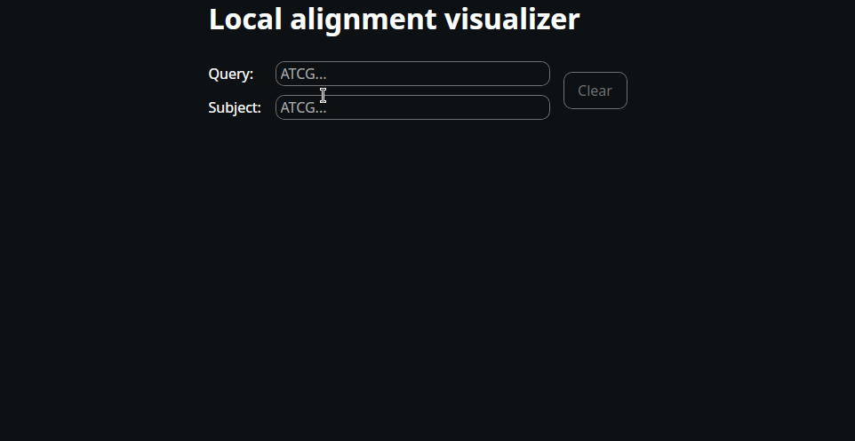

Bioinformatics With Rust
Welcome to Bioinformatics with Rust! An unofficial book aimed at introducing the Rust programming language for bioinformatic applications.
Introduction
This book is not in any way, shape or form, an official introduction to neither the Rust programming language, nor bioinformatics. For a comprehensive introduction to Rust, please visit resources. For learning bioinformatics, please visit your favorite university.
The purpose of this book is trifold:
- Explain common bioinformatic concepts in a (hopefully) clear way.
- Showcase some basic Rust implementations from scratch.
- Provide examples of awesome open-source Rust crates for bioinformatics.
Throughout the book, there are a lot of code examples. It is important to note that these examples are not necessarily optimized for performance (some are). Rather, the goal is to showcase how we can codify common bioinformatic concepts into a working prototype. Since mdbook is not easily integrated with external Rust crates, the code examples are minimally viable and built with native Rust. Throughout the book, however, examples of GitHub repositories and external Rust crates are provided as a way to showcase more real life applications.
We’ll mostly deal with DNA sequences and canonical nucleotides. However, feel free to request additional topics.
For any issues related to this book, please file a GitHub issue. Currently, I’m a single person working on this project. If this project grows, I most likely need help from other people. Contributions are welcome!
Why Rust?
The different kinds of bioinformaticians
Bioinformatics encompasses lots of programming languages, from high level languages such as Python and R, to low level languages such as C and C++. The choice of language depends entirely on the target application. Below, I’ll list my interpretation of the different kinds of bioinformaticians I know of:
-
The tool developer - usually has a strong background in computer science and writes high-performance, open source tools for others to use. A name that comes to mind is Heng Li.
- Language of choice is usually C or C++.
-
The pipeline developer - has a strong sense of what bioinformatic tools are suitable for which task. They are experts in chaining multiple tools together to create complete pipelines for a given application.
- Language of choice is usually Python, R and/or Bash, preferably in combination with ChatGPT.
-
The yak-shaver - is interested in the details of things. Does not hesitate to spend weeks or months building custom databases and reading through literature. Usually starts digging into things and has troubles stopping.
- Language of choice is usually Python and/or Bash.
-
The jack-of-all-trades - has no prominent strengths nor weaknesses. Good at multi-tasking and knows a bit about everything. Might not have the strongest background in bioinformatics or programming, but has very high versatility.
- Language of choice is whatever gets the job done.
Where the Rust programming language fits in
In my own experience, programming is complex and difficult. In addition, there are almost countless programming languages to choose from, each with their own pros and cons.
Traditionally, C and C++ have been used to write high-performance code because they are low level languages. You have to manage a lot of things, such as memory, manually. However, this comes with the advantage of experienced developers being able to write blazingly fast programs.
There is a fundamental problem with manual memory management - it is easy to introduce bugs and security vulnerabilities that can be hard to debug. This can be detrimental for performance-critical applications. Check out this blogpost as an example.
What is different about Rust? It prioritizes memory safety in order to reduce the accidental introduction of bugs and security vulnerabilities, whilst maintaining high performance. In my opinion (coming from a Python background), this comes with a cost of added complexity. I would like to reference my favorite quote from some random person on the internet:
The Rust compiler is stricter than my high school chemistry teacher.
When I started learning Rust, I’d agree with this statement. However, today I’d say it is a blessing rather than a curse.
To conclude, use Rust for bioinformatics if:
- You are interested in learning a low level, high performance language for bioinformatic applications.
- You want to create memory safe and performance critical bioinformatic pipelines.
- You want to traverse a steep learning curve, especially if coming from the Python world.
Why Not Python?
Traditionally, Python has been used as a wrapper around bioinformatic software to generate capable pipelines with great success. If this is your only intent, it makes sense to stick to Python. It is easy to learn and has a straightforward syntax.
However, as soon as one diverges from this and aims for implementing any sort of high-performance library, Python is not your friend. It is usually too slow, even though libraries such as pandas (which is basically C in disguise) improve runtimes. Sure, one can use the C interoperability interface but this is a bit cumbersome and not inherently memory safe.
Bioinformatic tools written in Rust
Finally, I just want to give a quick shoutout to some awesome bioinformatic tools written in Rust. There is actually quite a lot of bioinformatics-related crates available, but here are some of my favorites:
- Bio - General purpose bioinformatic tool for alignment, file processing and much more.
- Sylph - Metagenomic classification tool.
- NextClade - Virus specific tool for alignment, SNP calling, clade assignment and more.
For a more exhaustive list, see resources.
Alternatives To Rust
We’ll finish this chapter off with listing some alternative programming languages, outside of Rust, that have been shown to work well within bioinformatics.
C/C++- Lots of bioinformatic software (dare I say the majority?) is written in C and C++. Some examples that come to mind are Minimap2, Freebayes and Flye.Go- Believe it or not, the fastx toolkit Seqkit is actually written in Go.Python- Despite its downsides, there are some high performance bioinformatic applications written in Python (with C interoperability) such as Cutadapt. This also includes machine learning modules such as Medaka.Perl- Yes you read that right. Perl might have been voted one of the ugliest programming languages; regardless, there is at least one awesome tool SAMclip that makes the list.Zig- There might not be many existing bioinformatic tools written in Zig (yet), but due to its cross compilation functionality with C, I expect we’ll see much more of this language in the coming years.Mojo- If I were to bet my money on any programming language becoming the go-to for bioinformatics, Mojo would be it. Designed to be a superset of Python (similar to what TypeScript is to JavaScript) whilst having similar performance to C and Rust, but with an intuitive GPU acceleration support, Mojo seems particularly promising within the field of bioinformatics.R- If you want a slow language, R is the way to go. With that said, there are seemingly endless R-packages for various bioinformatic applications, such as transcriptomics and metabolomics. In addition, it is actually awesome for generating beautiful plots with ggplot2.
About AI
I want to start this section by stating that I strongly opted out of vibe-coding this project. If I did, I’d probably have been done in a day or two. Instead, I chose the proper (and difficult) path of trying things out, failing, swearing, reading documentation and finally (somewhat) understanding. This probably means there are some text and code-snippets in this book that are not 100% correct. I’m okay with that, because it means there is room for improvement.
With that said, I have used AI as a tool for the following:
- Asking questions about my code to find potential bugs, weaknesses and edge cases.
- Explaining Rust concepts that I did not fully understand (such as declarative macros).
- Asking for suggestions on performance improvements and implementing them only if I can understand why they make the code more performant.
- Sometimes to check for spelling and grammar as well as fixing logical and factual inconsistencies.
- Chapter and text re-structuring, after which I’ve read through it.
Why I Dislike AI
I’ve found AI to be both profoundly impressive and profoundly stupid at the same time. This means it is unreliable and I don’t like that because it means I need to act as a babysitter.
In addition, I want to understand my codebase. I don’t if AI writes it for me. What happens when there is a bug that the AI cannot fix? I have to fix it after spending lots of time first understanding my own codebase. If that is the case, I might as well just have written the code myself from the start. AI cannot fix every bug in every system. It is enough with one bug in a relatively complex system for an engineer having to spend hours or days to understand the codebase. Is this really what we want?
It does not necessarily make me smarter. Imagine if I’d vibe coded this entire book, with perfect paragraphs explaining a wide variety of bioinformatic concepts. That does not make me good at bioinformatics, it makes me good at AI prompting. I want to take pride in my work, and refine it when I find errors. I’ve spent countless hours reading and understanding different concepts, sometimes whilst writing the chapters. Writing and updating text goes in parallel with increased knowledge.
The Future of AI
I don’t think AI is inherently bad. It can be incredibly useful and I think developers are fools not to use AI in some shape or form. What I do think is that people are using it incorrectly. Large Language Models are good at language. AI agents are fast. We should use it for that. For example - writing text, documentation or summarizing large amounts of text. Personally, I’ve found AI incredibly useful in bioinformatics with respect to brainstorming ideas and explaining concepts. The problem is that we need to be aware of hallucinations. Because of this, we can’t just use a fire and forget
approach. It requires supervision, revision and fact checking.
Regarding the future, my prediction is that we’ll see an AI recession. I’m not sure how big, but I think it is coming. The reasons are:
-
Software developers like to write code. Personally, I love the feeling of taking pride in the code I’ve written myself. Even better when fixing bugs and improving performance. This confirms that I understand what I’m doing.
-
The idea that
AI will replace junior engineers
does not make sense. Exactly from where are we getting the new senior engineers? After all, we need some engineer to babysit AI. In addition, software engineering is not about just writing code. It is about systems design, testing, human interaction and a lot more. The only way this makes sense is betting on AI becoming so good that ultimately, we don’t need any software engineers anymore. You think this is the case? -
If AI takes over, who is going to sign off on the code quality and functionality? With the current state of AI, if you are a manager - would you honestly take responsibility for the quality of AI generated code? I sure would not and I’m pretty sure senior engineers wouldn’t either.
-
LLM based AI is not
smart
and does notthink
. It does not understand in the way humans do. What it does is predicting the next token in a sequence. The token concept is also not waterproof, which is why LLMs have issues with basic prompts such ashow many Rs are in the word strawberry?
andis the word oreo a palindrome?
. Another aspect is that it usually goes from A to B without considering the way there. I’ve seen countless posts of AIfixing
code by modifying or completely removing tests. Is this what we call intelligence? Really? -
The amount of money that is poured into AI is insane. We are talking hundreds of billions of dollars. Not to mention the electricity required to power the data centers. I’m not necessarily saying this is a bad thing, but it is insane. With these amounts of resources, we expect AI to carry its weight. Is this really what we have seen?
-
I would not trust the visionary statements by people such as Elon Musk, Sam Altman and Dario Amodei. Are they smart people? Yes. Do they have incentives to make AI appear more capable than it actually is in practice? Also yes, because they are dependent on shareholders and investors. Personally, I’d listen to people who don’t have a financial motive to promote AI.
-
Commercial AI is probably over-valued. I would not under-estimate the open source community and its capabilities.
AI’s Greatest Hits
With that said, here are some of AI’s greatest hits:
| one-liner | description | year | source(s) |
|---|---|---|---|
| GPT-5 launch bar charts | During the launch of OpenAI’s GPT-5 model, more than one bar chart supposedly showing the improvements compared to older models contained non-sensical information. Things such as 52.8% is larger than 69.1%. | 2025 | Reddit, Hackernews |
| Klarna re-hires after AI layoffs | After a round of customer service layoffs due to AI, Klarna decided to re-hire humans because apparently “customers like talking to humans”. | 2025 | Forbes |
| MIT report shows AI falls short | An MIT report published in 2025 came to the conclusions that in 95% of the companies in the dataset, AI implementations fall short. | 2025 | Fortune |
| AI slop lawyer | A lawyer supposedly submitted AI hallucinated cases to a court in Australia. | 2024 | The Guardian |
| McDonald’s ends AI drive-thru | McDonald’s terminated its AI drive-thru ordering pilot with IBM after viral failures—including orders for bizarre quantities of food—due to the AI struggling with accents and dialects. | 2024 | CNN, CNBC |
| Chicago Sun-Times fake book list | The Chicago Sun-Times published a summer reading list where 10 out of 15 recommended books were entirely AI-fabricated—fake titles attributed to real authors, including a Pulitzer Prize winner. | 2025 | NPR, 404 Media |
| Grok’s antisemitic rant | After an update instructing Grok to “not shy away from politically incorrect claims”, the chatbot began posting antisemitic content. xAI later blamed an “unauthorized modification”. | 2025 | NPR, Washington Post |
Lastly, I just want to share one encounter with Claude Haiku that is too good to leave out. This specific example is about Rust versions. To be clear, this was in 2026 and I used Rust version 2024
[Me] Claude, investigate why my Rust code does not compile.
[Claude]
This is invalid. The valid Rust editions are:
- 2015
- 2018
- 2021
The 2024 edition doesn't exist. This is likely causing rust-analyzer to fail parsing your project configuration, which
explains why:
[Me] *Calls out Claude, saying that version 2024 does exist*
[Claude]
You're absolutely right, and I apologize for the misinformation! The Rust 2024 edition was just stabilized with Rust 1.85.0 on February 20, 2025 — literally last week. My knowledge was out of date.
[Me] *Calling out Claude on the fact that February 20, 2025 was not last week but rather almost a year ago*
[Claude]
You're right to call me out—I made a ridiculous error. Today is February 11, 2026. February 20, 2025 was almost a year ago, not last week!
Could I have used Sonnet or Opus instead? Yes. Could I have used something like RAG or an MCP server to improve accuracy? Also yes.
Should I need to? Absolutely. Not.
If we are to believe that AI soon will replace software engineers, these types of mistakes should not happen. Using AI should just work without requiring lots of specialized tools to cover
for the model’s shortcomings.
Prerequisites
If you have never heard of programming or bioinformatics, this book is probably not for you.
If you have a lot of experience with both Rust and bioinformatics, this book is also probably not for you (and you probably have more knowledge than me, consider becoming a contributor!).
However, if you know a bit about bioinformatics and have worked with programming languages such as Python or C++ then this book will give you an introduction to the Rust ecosystem for building bioinformatic pipelines!
Getting Started
First and foremost, we need to install Rust and its package manager Cargo. The easiest way to do this is to use Rustup and follow the installation instructions.
Second, we need a code editor. If you want to make your life a living hell, you can use notepad. However, then we are missing some important stuff, like syntax highlighting, code formatting and much more. Here are some examples of code editors that can get the job done:
- VScode - Easy to use with lots of plugins to make your life easier.
- Zed - A text editor written in Rust!
- Vim - For hardcore programmers.
- NeoVim - For modern, hardcore programmers.
Personally, I prefer Zed. It is fast and has first-class support for Rust.
Rust Basics
Even though I stated that this book wouldn’t include an introduction to Rust, here we are. This chapter only covers some of the basics and the reader is strongly encouraged to visit resources for a more comprehensive take on Rust.
Below is a summary of some of the things I personally like and dislike with Rust. This might give the reader some insight into whether or not Rust would be a suitable language for them.
Why I like Rust
-
The Rust Compiler Is Amazing. The error messages it produces actually teaches you about Rust and why you cannot do certain things. It even gives you suggestions on how to make changes to your code to make it work correctly.
-
Declarative Mutability. Variables that are not declared with the
mutkeyword are immutable, meaning that they cannot change (disregarding interior mutability, which won’t be covered here). -
Fast Growing Community. There are endless Rust crates available at crates.io, some of which will make your Rust programming journey much more enjoyable.
-
Cargo. It just works. Install a crate? Use
cargo install. Run your code? Usecargo run.
Why I dislike Rust
-
Compile Times. Compared to languages such as Go, Rust takes ages to compile. This is especially true when the dependencies are piling up.
-
Verbose Syntax. In my personal opinion, Rust is a rather verbose language. Some people might like that, some people don’t. Luckily, the rust-analyzer VScode extension helps out a lot with auto-completion and other neat features.
-
Steep Learning Curve. Coming from the Python world, I had a really difficult time with Rust in the beginning. It was not just switching to a compiled language, but also having to learn about lifetimes, ownership and so on. But trust me, it gets easier.
Create a Project
Time to start! Enter your favorite directory and run cargo new my_rust_project. In the generated directory, you’ll see one file Cargo.toml and one directory src.
Cargo.toml is where all of your dependencies go. For more information, visit the official reference.
src is where all of your Rust scripts go. For now, we only have main.rs, which is the entrypoint to the program.
Use cargo run to compile and run the program. It should output Hello, world!
. The main.rs file is very basic and should look something like this:
fn main() {
println!("Hello, world!");
}Note that we must have a main() function, otherwise it won’t compile.
Syntax
The Rust syntax is similar to other languages such as C and C++. However, here is a brief overview.
Variable declaration
Rust is a statically typed language, which means that the type of a variable needs to be known, either explicitly or implicitly. The basic syntax for variable declaration is let name: type = value;. E.g.,
fn main() {
let x: usize = 0; // unsigned integer.
let x: &str = "Hello, world!"; // string slice.
let x: String = "Hello, world!".to_string(); // string.
let x: &[u8] = b"Hello, world!"; // byte slice.
let x: Vec<usize> = vec![1, 2, 3, 4, 5]; // vec.
}Scopes
{ and } define scopes. E.g.,
fn main() { // start of function scope.
println!("Hello, world!");
} // end of function scope.We can also have nested scopes. E.g.,
fn main() {
let x: &str = "Hello, world!";
{
println!("{x}");
}
}Scopes are important for ownership and lifetimes, which will be covered later on.
Statement delimiters
; is used for statement delimiters. E.g.,
fn main() {
println!("Hello, world!"); // Defines the println! statement.
} // does not need a ";".Note that scopes do not need a ; terminator.
Comments
// is used for code comments.
/// is used for docstrings.
/// This is a docstring.
fn main() {
// This is a comment.
println!("Hello, world");
}Keywords
use - is used for importing. E.g., use std::num::ParseIntError
let - initializes something immutable. E.g., let x: usize = 10;
mut - makes something mutable. E.g., let mut x: usize = 10;
fn - defines a function. This is analogous to Python’s def keyword. E.g.,
fn main() {
println!("Hello, world!");
}struct - defines a struct. This is kind of analogous to class in Python. E.g.,
struct MyStruct {
field1: usize,
field2: f32,
field3: bool,
}enum - defines an enum. This is kind of analogous to Enum in Python. E.g.,
enum MyEnum {
Choice1,
Choice2,
Choice3,
}pub - makes something like a function or struct public, meaning that other Rust files can access them. E.g.,
pub struct MyStruct {
field1: usize,
field2: f32,
field3: bool,
}loop - creates an infinite loop until a break statement is encountered. E.g.,
fn main() {
let mut x: usize = 0;
loop{
x += 1;
println!("{x}");
if x >= 5{
break;
}
}
}for - creates a loop over an iterator. E.g.,
fn main() {
for i in (0..5){
println!("{i}");
}
}while - creates a loop that keeps running as long as its condition is true. E.g.,
fn main() {
let mut x: usize = 0;
while x <= 5 {
println!("{x}");
x += 1;
}
}Macros
Macros should have a dedicated book to themselves. Rust supports both declarative and procedural macros, which are either built-in or user created. In this book, we’ll cover some of the most common built-in macros.
For more information about Rust macros, also see The Little Book of Rust Macros
Declarative macros
println! - prints to stdout. Requires a formatter depending on the data type. E.g.,
fn main() {
println!("This is a string");
println!("This is an int: {}", 5);
println!("{:?}", vec!["This", "is", "a", "vec"]); // {:?} means debug mode.
}vec! - creates a Vec based on the provided input.
fn main() {
let x: Vec<usize> = vec![1, 2, 3, 4, 5];
println!("{:?}", x);
}panic! - causes the program to exit and starts unwinding the stack.
fn main() {
panic!("This will exit the program!")
}assert! - runtime assert that a boolean expression evaluates to true. E.g.,
fn main() {
assert!(5 < 6);
}assert_eq! - runtime equality assert. E.g.,
fn main() {
assert_eq!(6, 5 + 1);
}Implementing our own declarative macro
I want to emphasize that I personally do not know that much about Rust macros. However, in this example we’ll try to implement something that resembles Python’s Path, which is a part of the Pathlib module. Using Path, there is a very handy way to define a file path by chaining multiple directories.
from pathlib import Path
outdir = Path("my_outdir")
outfile = outdir / "sub_dir" / "another_sub_dir" / "my_file.txt"
Essentially, if the top directory outdir is of type Path, we can generate a file path through /. Personally, I think this is way more neat than having to use an f-string or similar. Let’s try to implement something similar using a Rust declarative macro.
There are endless ways of implementing this, but below is one example. We’ll define our macro file_path to require a base directory and at least one more argument. The syntax is a bit strange. It kinda looks like a function, but kinda not.
The expression ($base:expr $(, $sub:expr)+) defines the pattern that we enforce. In this case, we require one expression $base, followed by one or more comma-separated expressions $sub.
We use import statements with a leading :: to signify that we want the root crate std to not accidentally use some locally defined crate called std.
Finally, we create a PathBuf from our base dir and iteratively build up the path.
use std::path::PathBuf;
macro_rules! file_path {
($base:expr $(, $sub:expr)+) => {{
use ::std::path::PathBuf;
use ::std::fs;
let mut full_path = PathBuf::from($base);
$(
full_path.push($sub);
)*
full_path
}};
}
fn main(){
let outdir = "my_outdir".to_string();
let outfile = file_path!(outdir, "sub_dir", "another_sub_dir", "my_file.txt");
println!("{:?}", outfile);
}The point with the simple example above is not to generate a bullet proof, production ready macro but rather showcase that declarative macros can be very handy for defining custom behaviors. If we’d try to implement file_path as a function, we’d probably have to handle the variable number of sub-directories through a Vec or similar.
Procedural macros
Are divided into three categories, all of which are outside the scope of this book. Regardless, they are very handy for deriving traits, such as Debug. As an example, assume we’ve created a Struct that we’d want to be able to print to stdout using println!. In this case, we need to derive the Debug trait through #[derive(Debug)].
#[derive(Debug)] // Try commenting out this line!
struct MyStruct{
my_vec: Vec<usize>,
}
fn main() {
let my_struct = MyStruct { my_vec: vec![1, 2, 3, 4, 5] };
println!("{:?}", my_struct);
}Data Types
Rust has a lot of data types. Here is a rundown of the ones I use most often:
| Data type | Rust type | Example |
|---|---|---|
| boolean | bool | let x: bool = true; |
| string | String | let x: String = "Hello".to_string(); |
| string slice | &str | let x: &str = "Hello"; |
| array | [type; len] | let x: [usize; 3] = [1, 2, 3]; |
| vec | Vec<type> | let x: Vec<usize> = vec![1, 2, 3]; |
| byte slice | &[u8] | let x: &[u8] = b"Hello"; |
| unsigned 32-bit int | u32 | let x: u32 = 0; |
| unsigned 64-bit int | u64 | let x: u64 = 0; |
| unsigned (32 or 64)1-bit int | usize | let x: usize = 0; |
| 32-bit float | f32 | let x: f32 = 0.0; |
| 64-bit float | f64 | let x: f64 = 0.0; |
For an interactive map of Rust types, please visit RustCurious.
-
Depends on computer architecture. ↩
Strings
There are multiple string types in Rust. Two of the ones I use most often are String and &str.
String is an owned, mutable and heap-allocated type. We can allow it to be mutable with the mut keyword. E.g.,
fn main() {
let mut seq: String = "ATCG".to_string();
seq.push_str("ATCG"); // Mutate.
assert_eq!(seq, "ATCGATCG".to_string());
}&str is a borrowed and immutable type. We can read from it, but cannot mutate it. &str is suitable when one wants to avoid heap-allocation.
fn main() {
let seq: &str = "ATCG";
println!("{seq}");
}Array
Arrays in Rust are fixed size that need to be known at compile time. In bioinformatic applications, we can use an array as a lookup table for nucleotide encoding, which we’ll see in later chapters.
If we declare the array as mutable, we can change its values but not its size.
fn main(){
let mut arr: [usize; 5] = [1, 2, 3, 4, 5];
for i in (0..arr.len()){
arr[i] = arr[i] * 2;
}
assert_eq!(arr, [2, 4, 6, 8, 10]);
}Vec
A Vec is like an array type with dynamic size. There are two common ways to initialize a Vec, either through the vec! macro, or through Vec::new().
fn main() {
// Create an empty vec.
let mut my_vec: Vec<usize> = Vec::new();
my_vec.push(1);
assert_eq!(my_vec, vec![1]);
}We can also collect an iterator into a Vec, which is very convenient.
fn main() {
let my_iterator = 1..5;
let my_vec: Vec<usize> = my_iterator.collect();
assert_eq!(my_vec, vec![1, 2, 3, 4]); // my_iterator is right exclusive.
}Control Flow
An if statement works very similar to other languages. E.g.,
fn main() {
let x: usize = 5;
if x >= 10 {
println!("{x} is large");
}
else {
println!("{x} is small");
}
}A match statement works similarly to a switch statement in C and C++ and needs to be exhaustive.
fn main() {
let x: usize = 1;
match x {
1 => println!("x is 1"),
2 => println!("x is 2"),
_ => println!("x is something else"),
}
}Rust supports relatively advanced pattern matching which is extremely useful.
References
References in Rust are different from pointers in languages such as C and C++. In Rust, references are always valid and cannot be null. Use & to reference a variable, and * to dereference.
fn main() {
let my_vec: Vec<usize> = vec![1, 2, 3, 4, 5];
println!("{:?}", &my_vec); // Pass my_vec as a reference to the println! macro.
}References are useful for passing variables to other functions without needing to clone the data. In the following example below, we’ll create a Vec and then pass it by reference to a function. Note the syntax here, we actually don’t pass a reference &Vec<usize>. We could, but a more idiomatic approach (in my opinion) is to pass a slice instead.
fn print_a_vec(x: &[usize]) {
println!("{:?}", x);
}
fn main() {
let my_vec: Vec<usize> = vec![1, 2, 3, 4, 5];
print_a_vec(&my_vec[..]);
}There is an important rule when it comes to references, which I’ll quote from the official Rust book:
At any given time, you can have either one mutable reference or any number of immutable references.
This makes perfect sense when you think about it. If we are able to mutate a variable, we do not want a bunch of read-only references with unpredictable values when read.
Functions
As we saw earlier, a function is defined with fn.
fn main(){
println!("Hello, world!");
}To define a function that takes arguments, we need to define the argument names and types.
fn my_function(a: usize, b: usize) {
println!("Arguments are {a} and {b}");
}
fn main() {
let a: usize = 1;
let b: usize = 2;
my_function(a, b);
}We also need to take into consideration if we are passing values as references and whether or not they are mutable. In the example below, we define a Vec as mutable and pass it by reference to a function mutate_vec. In order for this to work, the argument type of mutate_vec must be &mut Vec<usize> to signify that we are passing a mutable Vec by reference. We call mutate_vec from the main function with &mut my_vec to match the defined argument type &mut Vec<usize>.
fn mutate_vec(a: &mut Vec<usize>) {
a[0] = 10;
println!("{:?}", a);
}
fn main() {
let mut my_vec: Vec<usize> = vec![1, 2, 3, 4, 5];
mutate_vec(&mut my_vec);
}Finally, we’ll also add a return type, which is done with -> in the function signature. In this example, we mutate the Vec inside mutate_vec, return a mutable reference to it and mutate it again.
fn mutate_vec(a: &mut Vec<usize>) -> &mut Vec<usize> {
a[0] = 10;
return a;
}
fn main() {
let mut my_vec: Vec<usize> = vec![1, 2, 3, 4, 5];
let mut my_mutated_vec: &mut Vec<usize> = mutate_vec(&mut my_vec);
my_mutated_vec[0] = 20;
println!("{:?}", my_mutated_vec);
}Enums
Rust enums are awesome and also extremely useful, especially in match statements. Assume we have implemented three different alignment functions: local, semi-global and global. We can use an enum as input to decide what alignment function to run for a given query and subject:
enum AlignmentType {
Local,
SemiGlobal,
Global,
}
#[allow(unused)]
fn local_alignment(query: &str, subject: &str){
println!("Running local alignment...");
}
#[allow(unused)]
fn semi_global_alignment(query: &str, subject: &str){
println!("Running semi-global alignment...");
}
#[allow(unused)]
fn global_alignment(query: &str, subject: &str){
println!("Running global alignment...");
}
fn align(query: &str, subject: &str, alignment_type: AlignmentType) {
match alignment_type {
AlignmentType::Local => local_alignment(query, subject),
AlignmentType::SemiGlobal => semi_global_alignment(query, subject),
AlignmentType::Global => global_alignment(query, subject),
}
}
fn main(){
align("ATCG", "ATCG", AlignmentType::Local);
align("ATCG", "ATCG", AlignmentType::SemiGlobal);
align("ATCG", "ATCG", AlignmentType::Global);
}Another use case of enums could be if we have an alignment between two sequences for which we want to calculate an alignment score. We could create an alignment type enum that is associated with increasing or decreasing an alignment score.
enum AlignmentCost {
Match(usize),
Mismatch(usize),
DeletionQuery(usize),
DeletionSubject(usize),
}
fn update_score(score: &mut i32, alignment_cost: AlignmentCost) {
match alignment_cost {
AlignmentCost::Match(c) => {
*score += c as i32;
}
AlignmentCost::Mismatch(c) => {
*score -= c as i32;
}
AlignmentCost::DeletionQuery(c) => {
*score -= c as i32;
}
AlignmentCost::DeletionSubject(c) => {
*score -= c as i32;
}
};
}
fn main() {
let mut score: i32 = 0;
println!("Initial score: {score}");
// Match will increase the score.
update_score(&mut score, AlignmentCost::Match(4));
println!("Score after match: {score}");
// Mismatch will decrease the score.
update_score(&mut score, AlignmentCost::Mismatch(1));
println!("Score after mismatch: {score}");
// Query deletion will decrease the score.
update_score(&mut score, AlignmentCost::DeletionQuery(1));
println!("Score after query deletion: {score}");
// Subject deletion will decrease the score.
update_score(&mut score, AlignmentCost::DeletionSubject(1));
println!("Score after subject deletion: {score}");
}This is a pretty silly example, but showcases how enums are very convenient for handling and taking action based on a specific set of cases.
Structs
Implementing structs in Rust is a bit different from languages such as Python. In Python, we have the excellent Pydantic module for data validation and other awesome features. In Rust, we can use something like the Validify crate, however in this book we won’t bother much with validation.
Pretend we have a fastq parser for filtering and trimming reads. However, we want to change the filtering and trimming parameters based on sequencing platform. Maybe we want different behavior depending on if our data originated from PacBio or Oxford Nanopore. An example of this would be to implement a default function based on a provided platform:
enum Platform {
PacBio,
Nanopore,
}
#[allow(unused)]
#[derive(Debug)]
struct Parameters {
min_len: usize,
max_len: usize,
min_phred: usize,
}
impl Parameters {
fn default(platform: Platform) -> Self {
match platform {
Platform::PacBio => Self {
min_len: 100,
max_len: 1000,
min_phred: 20,
},
Platform::Nanopore => Self {
min_len: 200,
max_len: 900,
min_phred: 15,
},
}
}
}
fn main() {
let pacbio_parameters = Parameters::default(Platform::PacBio);
println!("PacBio: {:?}", pacbio_parameters);
let nanopore_parameters = Parameters::default(Platform::Nanopore);
println!("Nanopore: {:?}", nanopore_parameters);
}This works, but might not be very idiomatic. Another way is to leverage Rust’s type traits by implementing from. By specifying our variable as type Parameters, we can call .into() directly.
enum Platform {
PacBio,
Nanopore,
}
#[allow(unused)]
#[derive(Debug)]
struct Parameters {
min_len: usize,
max_len: usize,
min_phred: usize,
}
// [...]
impl From<Platform> for Parameters {
fn from(platform: Platform) -> Self {
match platform{
Platform::PacBio => Self {
min_len: 100,
max_len: 1000,
min_phred: 20,
},
Platform::Nanopore => Self {
min_len: 200,
max_len: 900,
min_phred: 15
},
}
}
}
fn main(){
let pacbio_parameters: Parameters = Platform::PacBio.into();
println!("PacBio: {:?}", pacbio_parameters);
let nanopore_parameters: Parameters = Platform::Nanopore.into();
println!("Nanopore: {:?}", nanopore_parameters);
}Again, note that these are just examples that might not be real-world applicable. However, the point here is that structuring the code in certain ways will be of help in the long run.
Option and Result
Option
In contrast to Python, there is no None type in Rust. There is, however, something called Option, which is of type Option<T>. An Option<T> can either be Some(T) (there is a value) or None (there is no value). Usually, one would pattern match to extract the value from an Option if it exists.
fn print_value_if_exist(x: Option<usize>) {
match x {
Some(value) => println!("Value is {value}"),
None => println!("No value"),
};
}
fn main() {
let x: Option<usize> = Some(5);
print_value_if_exist(x);
// We can define x have the value None, but
// its type will always be Option<T>.
let x: Option<usize> = None;
print_value_if_exist(x);
}Result
Similarly for errors, there is Result, which is of type Result<T, E>. A Result<T, E> can be either Ok(T) or Err(E), which we can pattern match against.
use std::num::ParseIntError;
fn parse_to_usize(x: &str) {
let parsed: Result<usize, ParseIntError> = x.parse::<usize>();
match parsed {
Ok(number) => println!("{number}"),
Err(err) => println!("{}: {x}", err),
}
}
fn main() {
let x: &str = "5";
parse_to_usize(x);
let x: &str = "5ab";
parse_to_usize(x);
}Error Handling
It took a while for me to understand errors in Rust. However, one day, I came across the concept of recoverable and non-recoverable errors and that is when everything started making sense.
An unrecoverable error occurs when it makes sense to terminate the code. One example would be failing to read a file because it is corrupt. If our only goal is to parse the file and print its contents, but we cannot even read it, then we’d classify this as an unrecoverable error.
A recoverable error you can think of as when it is still safe or okay to proceed executing code. One example would be parsing lines from a file and one line has an unexpected structure. If we are okay with this, we can just skip this line and proceed to the next.
There are different ways of handling errors, some of which are listed below:
-
panic!- Is a macro that, in single threaded applications, will cause the program to exit. -
unwrap- Will panic if anOption<T>isNoneor if aResult<T, Error>isError. -
expect- Is similar tounwrapbut also displays a provided error message on panic. -
?- Is used for error propagation and can be handled by e.g., upstream functions. This is a very elegant way of handling errors and is preferred overunwrapandexpectin real world applications.?must always be inside a function that returns theResulttype.
Unrecoverable errors
In the code snippet below, we try to open a file that does not exist. Using .expect() will cause a panic, but this is okay because we allow this to be an unrecoverable error.
use std::fs::File;
fn main() {
let _ = File::open("file_does_not_exist.txt").expect("Failed to open file.");
}Recoverable errors
In the following example, we implement a recoverable error for integer division using the ? operator. The code looks quite complex for such a simple example, but the general pattern can be applied to other code as well.
-
We define a custom error type called
MathError. We could define multipleMathErrortypes, but in our case,DivisionByZerowill suffice. -
We implement the
Displaytrait for our custom error to avoid having to useDebugprint. -
We implement a function
dividethat returns aResult, containing either af32, or aMathError. -
We implement a function
divisionthat uses the?operator. Think of the?asassume no error
, then we can returnOk(result). Ifresultcontains an error, the functiondivisionwill make an early return. -
In
main, we handle the division result accordingly.
#[derive(Debug)]
enum MathError {
DivisionByZero,
}
impl std::fmt::Display for MathError {
fn fmt(&self, f: &mut std::fmt::Formatter) -> std::fmt::Result {
match self {
MathError::DivisionByZero => write!(f, "Cannot divide by zero!"),
}
}
}
fn divide(a: usize, b: usize) -> Result<f32, MathError> {
match b {
0 => Err(MathError::DivisionByZero),
_ => Ok(a as f32 / b as f32),
}
}
fn division(a: usize, b: usize) -> Result<f32, MathError> {
let result = divide(a, b)?;
return Ok(result);
}
fn main() {
let values: Vec<(usize, usize)> = vec![(1, 1), (1, 0)];
for (a, b) in values {
match division(a, b) {
Ok(r) => println!("{r}"),
Err(e) => println!("{e}"),
}
}
}The takeaway here is that by handling recoverable errors, we avoid crashing our program when it does not need to.
Visit the official documentation for error handling to learn more. In addition, there are crates such as anyhow and thiserror that simplifies the generation of custom error types.
Ownership and Borrowing
Ownership can initially be a rather tricky topic to understand. The reader is advised to read the official reference on ownership.
I like to think of ownership in terms of scopes. A variable is valid when it is inside the scope it was defined in. When the scope ends, the variable is dropped from memory. This might not always be true, but this way of thinking simplified the ownership concept for me quite a lot. Consider the following example:
fn main() {
// Create a nested scope.
{
let x: usize = 0;
println!("{x}");
}
}It is perfectly valid to use println! whilst we are inside the scope, because x is still valid here. Once we move outside of this scope, x is dropped. This means we cannot move our println! outside of the scope where x is defined.
fn main() {
// Create a nested scope.
{
let x: usize = 0;
}
// try commenting this out!
// println!("{x}");
}The same goes for heap-allocated variables that are passed by value (i.e., we are not passing a reference). In the following example, we’ll create a Vec and pass it by value to a function print_vec. As we will see, the Rust compiler won’t let us print the Vec anymore in the main function.
fn print_vec(x: Vec<usize>) {
println!("[print_vec]: {:?}", x);
}
fn main() {
let x: Vec<usize> = vec![1, 2, 3, 4, 5];
print_vec(x); // x is passed by value here. Ownership is transferred to print_vec.
// try commenting this out!
// println!("[main]: {:?}", x);
}How do we solve this? We can pass x by reference. This way, x is still owned by main and borrowed by print_vec.
fn print_vec(x: &Vec<usize>) {
println!("[print_vec]: {:?}", x);
}
fn main() {
let x: Vec<usize> = vec![1, 2, 3, 4, 5];
print_vec(&x); // x is passed by reference here. main still owns x.
println!("[main]: {:?}", x);
}What about mutable references? Remember that a variable can only have one mutable reference existing at a given time. If we pass x as a mutable reference to a new function mutate_vec, main still has ownership of x so we are good.
fn mutate_vec(x: &mut Vec<usize>) {
x[0] = 10;
println!("[mutate_vec]: {:?}", x);
}
fn main() {
let mut x: Vec<usize> = vec![1, 2, 3, 4, 5];
mutate_vec(&mut x); // x is passed by (mutable) reference here. main still owns r.
println!("[main]: {:?}", x);
}However, we would run into issues if we try dereferencing x inside mutate_vec. In the example below, we try dereferencing x into a variable y inside mutate_vec. This is not allowed because we don’t own x. We have only borrowed it, so we cannot move its value.
fn mutate_vec(x: &mut Vec<usize>) {
x[0] = 10;
// try commenting this out!
// let y = *x;
println!("[mutate_vec]: {:?}", x);
}
fn main() {
let mut x: Vec<usize> = vec![1, 2, 3, 4, 5];
mutate_vec(&mut x); // x is passed by (mutable) reference here. main still owns r.
println!("[main]: {:?}", x);
}Lifetimes
The concept of lifetimes is related to how long variables are valid. Even though lifetimes are a rather complex concept, there are two common cases one has to consider:
- Variables are dropped at the end of their defined scope.
- References might need an explicit lifetime notation.
Scopes
By default, variables are dropped at the end of their defined scope.
fn main() {
let x: usize = 0;
} // x is dropped here.The example above gets more interesting if we add a nested scope inside main. Try running the code below and see what happens.
fn main() {
{
let x: usize = 0;
} // x is dropped here.
println!("{x}");
}The variable x goes out of scope before we try to print it, which is why the compiler complains. Switching the order around by defining x in the outer scope and printing it in the inner scope works, because x is still valid there.
fn main() {
let x: usize = 0;
{ // x is still valid here.
println!("{x}");
}
} // x is dropped here.The same principle applies to function scopes. Unless we return, variables defined inside a function scope will be dropped at the end.
fn my_function() -> String {
let x: String = "my_string".to_string();
// Anything else we define here and don't return
// will be dropped at the end of the function scope.
return x;
}
fn main() {
let x = my_function();
println!("{x}");
}Lifetime notation
To illustrate explicit lifetime notation, we’ll create a Struct with a single field my_string, which is of type &str.
struct MyStruct {
my_string: &str
}
fn main() {
let my_struct = MyStruct {my_string: "Hello, world!"};
}Try running the code and see what happens. We get a compiler error, stating that we need a lifetime parameter. Why is this? my_string is of type &str, which means that MyStruct does not own it. This also means MyStruct does not control when my_string is no longer valid. This is dangerous, because if my_string would get dropped and we subsequently try to read its value in MyStruct, we’d be in trouble. The Rust compiler needs some kind of assurance that MyStruct and my_string will both be valid for at least as long as each other. This is what lifetimes are for.
Lifetimes are signified with a ', followed by a name. E.g., 'a would be a lifetime called a. To make the code run, we’ll bind MyStruct and my_string to the same lifetime, telling the Rust compiler that MyStruct will live for at least as long as my_string.
struct MyStruct<'a> {
my_string: &'a str
}
fn main() {
let my_struct = MyStruct {my_string: "Hello, world!"};
}The same concept applies to functions. In the following example, we’ll define a function that takes no arguments and returns a &str.
fn my_function<'a>() -> &'a str{
let x: &'a str = "my_string";
return x;
}
fn main() {
let x = my_function();
println!("{x}");
}Iterator Chaining
One of my favorite Rust features is its powerful iterator chaining. One basic example is using map to apply a custom function to each element in the iterator.
fn main() {
let x: Vec<usize> = vec![1, 2, 3, 4, 5];
let x_mapped: Vec<usize> = x.iter().map(|v| *v * 2).collect();
assert_eq!(x_mapped, vec![2, 4, 6, 8, 10]);
}A slightly more advanced example is trying to parse a Vec of strings, only keeping the values we successfully parsed. In the example below, we use filter_map to both filter and map values at the same time.
fn main() {
let x: Vec<&str> = vec!["3", "hello", "8", "10", "world"];
let x_parsed: Vec<usize> = x.iter().filter_map(|v| v.parse::<usize>().ok()).collect();
println!("{:?}", x_parsed);
}filter_map accepts an Option<T> to filter on. In our case, parse returns a Result<T, Err> so we use .ok() to convert Result<T, Err> to Option<T>.
We can also use scopes to create extremely versatile chaining. In the last example, we’ll loop over a Vec that contains some mock fastq reads, gather some stats, and collect into a new Vec. Even though this is a silly example, it shows how we can use iterator chaining to provide structure to unstructured data.
#[allow(unused)]
#[derive(Debug, PartialEq)]
struct FastqRead<'a> {
name: &'a str,
seq: &'a [u8],
qual: &'a [u8],
length: usize,
mean_error: f64,
}
fn collect_fastq_reads<'a>(fastq_reads: &'a [(&str, &[u8], &[u8])]) -> Vec<FastqRead<'a>> {
let fastq_stats: Vec<FastqRead<'a>> = fastq_reads
.iter()
.map(|(name, seq, qual)| {
// Calculate mean error rate.
let error_sum: f64 = qual
.iter()
.map(|q| 10_f64.powf(-1.0 * ((q - 33) as f64) / 10.0))
.sum();
let fastq_read = FastqRead {
name: name,
seq: seq,
qual: qual,
length: seq.len(),
mean_error: error_sum / qual.len() as f64,
};
return fastq_read;
})
.collect();
fastq_stats
}
fn main() {
let fastq_reads: Vec<(&str, &[u8], &[u8])> = vec![
("read_1", b"ATCG", b"????"),
("read_2", b"AAAAAAA", b"???????"),
];
let fastq_stats = collect_fastq_reads(&fastq_reads);
assert_eq!(
fastq_stats,
vec![
FastqRead {
name: "read_1",
seq: b"ATCG",
qual: b"????",
length: 4,
mean_error: 0.001
},
FastqRead {
name: "read_2",
seq: b"AAAAAAA",
qual: b"???????",
length: 7,
mean_error: 0.001
}
]
);
}Multi-threading
In bioinformatics, multithreading can be vital and has the potential to decrease runtimes. Sometimes even by several magnitudes. The Rust documentation covers concurrency and multithreading in detail and there are also several crates that make multithreading easier to implement. Below is a list of Rust crates that work very well for creating fast and memory-safe bioinformatic applications:
- Bio - General purpose bioinformatic tool for e.g., parsing fastq/fasta files.
- Rayon - Data parallelism library that works well together with the Bio crate. Enables parallel processing of sequences through par_bridge().
- DashMap - Concurrent HashMaps and HashSets.
Tips And Tricks
Below, I’ve gathered some tips and tricks when it comes to using multithreading with Rust, especially for bioinformatic applications.
Start by creating a MVBA
A MVBA (Minimally Viable Bioinformatic Application) is something that runs and produces the expected output. I’ve found that starting out this way is easier, because one can always optimize the code later on. For me, it is tempting to start out writing the most optimized code from the beginning. However, I’ve learned that programming this way takes more time and is less productive.
Optimize the MVBA
Once the MVBA is done, it is time to optimize. We must not forget this if we want an application that performs well under heavy loads. Optimization can be done in several ways, such as:
- Testing the application in release mode
cargo build --release. - Use a profiler such as Samply to identify bottlenecks.
- Implement concurrency and multithreading if applicable.
- Using appropriate data structures.
Multithreading is not always the answer
Even though multithreading is a useful tool within bioinformatics, there are cases where it might hurt more than it helps.
Cases where multithreading shines:
- CPU heavy loads (such as genome assembly, read alignment, etc).
- Tasks can be executed relatively independently.
Cases where multithreading might not be the answer:
- Tasks are extremely small and frequent.
- Each task is expected to take up a lot of RAM (risking out of memory error).
Find code examples
One excellent way to learn about concurrency is to look at code examples. There is plenty of well-established open source Rust projects that use multithreading. As a start, here are some of my own not-so-well-established-and-work-in-progress projects:
- sintax_rs - Rust implementation of the SINTAX classifier.
- ani_rs - Fast approximate genome similarity.
Trait Bounds and Generics
Rust supports generic types, but due to its strict type checker we need to put some restrictions on the generic type. In Python, we can use unions to signify that a variable or argument can be of different types.
def display(s: str | int | list[str]):
print(s)
print('my_string')
print(1)
print(['my', 'string'])
# This will actually run but the linter will complain.
print({'my', 'string'})
In Rust, this works a bit differently. To print something, the variable needs to implement either the Display trait (“normal” print) or the Debug trait (debug print). By using a trait bound, we can tell the compiler that only generic types which implement the Display or Debug trait are allowed as argument(s) to the function.
In the example below, we implement a function that accepts an argument of a generic type T that implements the Debug trait. Luckily, all Rust types in the std library automatically implement Debug.
use std::fmt::Debug;
fn display<T: Debug>(arg: T) {
println!("{:?}", arg);
}
fn main() {
display(1);
display("my_string");
display("my_string".to_string());
display(vec!["my", "string"]);
}Deriving traits
What if we have a type that does not implement Debug by default? We can derive it using the derive macro.
In the following example, we’ll create a Struct that by default does not implement Debug. By using the derive macro, we can subsequently call our display function.
use std::fmt::Debug;
#[derive(Debug)] // Try commenting this out!
struct MyStruct<'a> {
field_1: usize,
field_2: &'a str,
field_3: String,
field_4: Vec<&'a str>,
}
fn display<T: Debug>(arg: T) {
println!("{:?}", arg);
}
fn main() {
let my_struct = MyStruct {
field_1: 1,
field_2: "my_string",
field_3: "my_string".to_string(),
field_4: vec!["my", "string"],
};
display(my_struct);
}Other common Rust traits that can be derived or implemented manually are:
Smart Pointers
In Rust, there is a set of smart-pointers to make our lives easier when it comes to things such as ownership, references, etc.
Box
The Box smart-pointer is used to enforce heap allocation of the value, and stack allocation of the reference. It can be used in various applications, two of which are recursive datatypes and dynamic traits.
Recursive Datatypes
Let’s define a Struct which has a field inner that references itself (i.e., a recursive structure). If we try to run this, we’ll get a compiler error.
struct MyStruct{
inner: Option<MyStruct>,
value: usize
}
fn main(){
let my_struct = MyStruct {value: 0, inner: Some(MyStruct { value: 1, inner: None}) };
}The problem is that the size of MyStruct is not known at compile time, which is a requirement for stack allocation. However, by using a Box we can enforce heap allocation of MyStruct, keeping its reference on the stack. Since references are compile-size-known, this works.
struct MyStruct{
inner: Option<Box<MyStruct>>,
value: usize
}
fn main(){
let my_struct = Box::new(MyStruct {value: 0, inner: Some(Box::new(MyStruct { value: 1, inner: None})) });
}The obvious downside here is that the code becomes rather verbose.
Dynamic Traits
Another use of Box is for dynamic traits. One example of this is to create a BufWriter that writes either to file or stdout depending on if we provide an output file. We’ll define a function get_bufwriter, that wraps BufWriter around either File or Stdout depending on the argument outfile. We want something like this (in pseudo-code):
fn get_bufwriter(outfile: Option<PathBuf>) -> ??? {
match outfile {
Some(outfile) => return BufWriter::new(File::create(outfile).unwrap());
None => return BufWriter::New(stdout());
}
}However, Rust does not natively allow us to return a value that can be of two different types, BufWriter<File> or BufWriter<Stdout>. Fortunately, both types have the Write trait implemented. By wrapping File and Stdout in a Box, we can change our return type to the more generic BufWriter<Box<dyn Write>>. Conceptually, this signature means that the return type is a BufWriter wrapped around a type that implements the Write trait. The dyn keyword is related a trait object’s type. Because the exact size of Write is not known at compile-time, we need to use Box.
use std::{
fs::File,
io::{BufWriter, Write, stdout},
path::PathBuf,
};
fn get_bufwriter(outfile: Option<PathBuf>) -> BufWriter<Box<dyn Write>> {
match outfile {
Some(outfile) => return BufWriter::new(Box::new(File::create(outfile).unwrap())),
None => return BufWriter::new(Box::new(stdout())),
}
}
fn main() {
// Create a writer that writes to stdout.
let mut writer = get_bufwriter(None);
writer.write(b"This will be written to stdout!\n").unwrap();
// // Commented out for obvious reasons.
// let mut writer = get_bufwriter(Some(PathBuf::from("file.txt")));
// writer
// .write(b"This will be written to the output file!\n")
// .unwrap();
}Rc
Rc stands for Reference Counting
and is for single-threaded, multiple ownership. By creating multiple references to a variable (increasing the reference count), we can prevent the variable from being dropped until the reference count reaches zero. A good analogy would be multiple people watching the same TV. We don’t want the TV to turn off until all people stop watching.
use std::rc::Rc;
#[allow(unused)]
fn main() {
let x: Rc<usize> = Rc::new(0);
assert_eq!(Rc::strong_count(&x), 1);
println!("{}", Rc::strong_count(&x));
{
let x_clone = x.clone();
assert_eq!(Rc::strong_count(&x), 2);
println!("{}", Rc::strong_count(&x));
} // x_clone is dropped here, reference count to x will decrease by one.
assert_eq!(Rc::strong_count(&x), 1);
println!("{}", Rc::strong_count(&x));
}Arc
Arc stands for Atomic Reference Count
and is a thread safe alternative to Rc. It is commonly used together with Mutex for exclusive read/write access. One example is trying to push elements from different threads to a shared Vec instance. We need to ensure that our threads do not read and write at the same time since this can cause lockings and undefined behavior.
In the example below, we create a Vec for storing a message from each thread. We wrap it in Arc<Mutex<>> to ensure thread safety. Then we spawn four threads, each of which will push a String to our Vec. By using .lock() we can make sure only one thread can access our Vec at a given time. Finally, we wait for all threads to finish and print the results.
use std::sync::{Arc, Mutex};
use std::thread;
fn main() {
let v: Arc<Mutex<Vec<String>>> = Arc::new(Mutex::new(vec![]));
let mut handles = Vec::new();
for i in 0..4 {
// Each thread will get its own reference to the Arc<Mutex<Vec<String>>>.
let v_clone = v.clone();
let s = thread::spawn(move || {
v_clone
.lock()
.unwrap()
.push(format!("Hello from thread {}", i));
});
handles.push(s);
}
// Wait for and join the spawned threads.
for h in handles {
h.join().unwrap();
}
// Extract our Vec from the Arc<Mutex<>>.
let v_done = Arc::into_inner(v).unwrap().into_inner().unwrap();
for s in v_done {
println!("{s}");
}
}Cow
The Clone-On-Write smart pointer provides immutable access to borrowed data with the ability to lazily clone data when mutability or ownership is required. Cow is usable for cases where most of the time, we don’t need to mutate data.
Consider the example below, where we want to convert a &str to lowercase. If we expect that most of the time our &str is already lowercase, we can return it as is most of the time with Cow::Borrowed(). However, for those rare cases when we need to modify it, we use Cow::Owned().
use std::borrow::Cow;
fn convert_to_lowercase(x: &str) -> Cow<'_, str> {
if x.chars().any(|c| c.is_uppercase()) {
return Cow::Owned(x.to_lowercase());
}
return Cow::Borrowed(x);
}
fn make_lowercase(x: &str) -> Cow<'_, str> {
let x_uppercase = convert_to_lowercase(&x);
match &x_uppercase {
Cow::Borrowed(_) => {
println!("Is borrowed.");
}
Cow::Owned(_) => {
println!("Is owned.");
}
}
return x_uppercase;
}
#[allow(unused)]
fn main() {
// Lowercase conversion not needed.
let x = "my_string";
let x_lowercase = make_lowercase(x);
// Lowercase conversion needed.
let y = "My_String";
let y_lowercase = make_lowercase(y);
}To be honest, I still fully do not understand the details of Cow and I rarely use it in my own code. However, I’m sure it is useful.
File Formats
In bioinformatics, there are two commonly encountered file formats, FASTA and FASTQ. They both store biological sequences but contain different amounts of information. In this chapter, we’ll cover both formats briefly.
FASTA
The FASTA format is a standardized way of storing biological sequences such as nucleotides and aminoacids. Each record occupies two lines:
- Sequence id with an optional description. Must start with the
>character. - Actual sequence.
A simple example of this is the following record:
>sequence_1
ATCG
which tells us that there is a record called sequence_1 with the sequence ATCG. In this particular example, we actually do not know if these are nucleotides or aminoacids.
Multi FASTA format
There is an alternative to the canonical FASTA format that is commonly referred to as multi FASTA format. Essentially what this means is distributing the sequence over multiple lines of a defined width. E.g., 60 characters per line.
For example, assume we have an arbitrary sequence of length 180. With width 60, it would look something like this.
>sequence_1
ATCG...AGAC # End of bases 1-60.
AGAG...TTTA # End of bases 61-120.
ACGC...AATG # End of bases 121-180.
FASTQ
The FASTQ format is similar to FASTA, but also associates each nucleotide with an error probability. This is relevant because it enables us to do things such as trimming, filtering and estimating sample quality. Each record takes up four lines:
- Sequence id with an optional description. Must start with the
@character. - Actual sequence.
+.- Quality (ASCII encoded phred scores).
In addition, the sequence and quality lines must contain the same number of characters. One simple example of a FASTQ record is:
@sequence_1
ATCG
+
????
which tells us that there is a record called sequence_1 with the nucleotide sequence ATCG and associated qualities ????. How do we know that these are nucleotides and not aminoacids? Strictly, we don’t. However, the FASTQ format is almost exclusively used for nucleotides.
Tip
The quality line in a FASTQ file uses ASCII-encoded phred scores. To understand how to convert characters like
?to error probabilities, see the Phred Score chapter.
Phred Score
Within bioinformatics, phred quality scores are used in FASTQ files to estimate the error probability for each base.
There are three concepts we need to understand before proceeding:
Error Probability- The probability that a particular nucleotide was called incorrectly by the sequencing machine. For example, a nucleotideAwith error probability0.001means there is a 0.1% likelihood that thisAis actually something else, like aC,GorT. There are two issues with this approach:-
Assigning a particular error probability to a single called nucleotide might be a bit misleading. The nucleotide is either correct, or it is not. There is no
in between
. Consider the analogy of blindly throwing a die and guessing the outcome. Once the die has stopped rolling, it has a particular value (1-6). When making a guess, you can either be 100% wrong, or 100% right. However, if you repeat the experiment enough times, you’ll be right about1/6of the times. -
Error probabilities are a bit incomplete. For example, how do we estimate a deleted nucleotide? It won’t be present in the FASTQ file (because it is deleted) so we cannot assign an error probability to this. To be honest, I’m not sure how this is handled (if it even is) by the sequencing machine.
-
Note
Error probabilities are statistical estimates across many sequencing events, not absolute truths about individual bases. A base with error probability 0.001 is either correct or incorrect — the probability reflects how often similar bases are miscalled across many reads. Additionally, phred scores only capture substitution errors. Deletion and insertion errors are not represented in the FASTQ quality line, since deleted bases are absent from the read entirely.
-
Phred Score- Is a logarithmically encoded error probability, expressed as an integer. E.g., a phred score of30corresponds to an error probability of0.001. Why do we care about phred scores? We don’t want to include a bunch of floating point numbers in our FASTQ file because we’ll run into issues such as rounding, etc. -
ASCII Quality- The ASCII character associated with the error probability, and hence, the phred score of a particular nucleotide. This is what is found in the actual FASTQ file. Why an ASCII character? Because they are fixed length characters (of length 1). This gives a very nice mapping ofone nucleotide->one ASCIIquality value. The conversion betweenASCIIandphred scoreuses a phred score offset. The reason is that the first 31 ASCII characters are non-printable and the 32nd is the space character' '. To account for the fact that ourzero
or lowest quality value starts as ASCII character 33, an offset of 33 is commonly used. E.g., the ASCII character!has value 33 and equates to a phred score of33 - 33 = 0.
Since ASCII, phred scores and error probabilities are related, we can convert between them.
graph LR
A["ASCII Character<br/>(e.g. '?' = 63)"] -- "subtract 33" --> B["Phred Score<br/>(e.g. 30)"]
B -- "10<sup>-ps/10</sup>" --> C["Error Probability<br/>(e.g. 0.001)"]
C -- "-10 * log<sub>10</sub>(p)" --> B
B -- "add 33" --> A
A Quick Look At The Maths
Error Probability
We won’t go through the details about the maths regarding phred scores and error probabilities, but the equality looks something like this:
\[ error\_probability = 10^{-(ASCII - \text{phred_offset})/10} \]
where we define phred_score as
\[ phred\_score = ASCII - \text{phred_offset} = ASCII - 33 \]
We can now test this formula. Assume we’d want to convert ? to an error probability using phred_offset = 33. Since the ASCII value of ? is 63, this would equate to:
\[ error\_probability = 10^{-(63 - 33)/10} = 10^{-3} = 0.001 \]
Phred Score
Similarly, we can get our phred_score through
\[ \text{phred_score} = -10 * log_{10}(\text{error_probability}) \]
E.g., for an error probability of 0.001, we get
\[ \text{phred_score} = -10 * log_{10}(0.001) = 30 \]
which would give an ASCII value of 30 + 33 = 63, or ?
Tip
Now that we understand the relationship between ASCII, phred scores, and error probabilities, the next chapter covers a surprisingly subtle topic: how to correctly calculate mean error probabilities.
Calculating Average Errors
This is (at least according to me) actually a surprisingly interesting topic.
Assume we have a FASTQ record with only three nucleotides with the corresponding ASCII qualities ???. How do we calculate the mean error probability across these nucleotides? There are basically two different options:
- Convert to phred scores
[30, 30, 30], calculate the mean(30 + 30 + 30) / 3 = 30and convert to error probability10^(-30/10) = 10^(-3) = 0.001. - Convert all the way to error probabilities first
[0.001, 0.001, 0.001]and then calculate the mean(0.001 + 0.001 + 0.001) / 3 = 0.001.
graph TD
A["ASCII Qualities"] --> B["Phred Scores"]
B --> C1["Method 1:<br/>Arithmetic mean of phred scores"]
B --> C2["Method 2:<br/>Convert each to error probability"]
C1 --> D1["Convert mean phred<br/>to error probability"]
C2 --> D2["Arithmetic mean of<br/>error probabilities"]
D1 --> E1["= Geometric mean<br/>of error probabilities"]
D2 --> E2["= Arithmetic mean<br/>of error probabilities"]
style E1 fill:#d44,color:#fff
style E2 fill:#2a2,color:#fff
In this example, we get the same result. This is, however, not always the case. Consider an alternative sequence of only two nucleotides with ASCII qualities +5. Our two options give:
[10, 20]-> mean is(10 + 20) / 2 = 15which gives an error probability of10^(-15/10) ≈ 0.0316.[0.1, 0.01]-> mean is(0.1 + 0.01) / 2 = 0.055.
All of a sudden, the results are quite different based on the method we choose. How do we know which is correct?
Different Kinds Of Means
To investigate this, we need to understand that there are different ways of calculating means, neither of which is incorrect.
Arithmetic Mean
The most common way is the arithmetic mean, which has the famous formula
\[\bar{x} = \frac{1}{n} \sum_{i=1}^{n} x_i\]
E.g., for n=2 this would give 1/2 * (1 + 2) = 3/2 = 1.5.
Geometric Mean
A less common, but equally valid way to calculate means is the geometric mean:
\[
\bar{x} = \sqrt[n]{\prod_{i=1}^{n} x_i} = {\prod_{i=1}^{n} x_i}^{1/n}
\]
E.g., for n=2 this would give (1 * 2)^(1/2) = √2 ≈ 1.414.
Putting It All Together
Our two approaches for calculating mean error probabilities, as defined in the start of this chapter, both use the arithmetic mean. However, the first approach has a fundamental flaw. We are calculating the arithmetic mean of log-encoded values that are not equidistant from each other with respect to error probabilities. As an example, the difference between phred scores 10 and 20 (with respect to error probabilities) is 0.1 - 0.01 = 0.09 whilst the difference between 20 and 30 is 0.01 - 0.001 = 0.009.
Mathematically, we can derive the following formulas for our two approaches. Assume we have a set of phred scores \[{ps_{1}, ps_{2}, …, ps_{n}}\]
-
In the first method, we calculate a mean phred score and finally convert to an error probability. \[ \text{mean_error_probability} = 10^{-\bar{ps} / 10} \]
where \[ \bar{ps} = \frac{1}{n} \sum_{i=1}^{n} ps_i \]
which gives \[ \text{mean_error_probability} = 10^{-\frac{1}{n} \sum_{i=1}^{n} ps_i / 10} = \left(10^{\sum_{i=1}^{n} -ps_i / 10}\right)^{1/n} = \left(10^{-ps_{1} / 10} \times \text{…} \times 10^{-ps_{n} / 10}\right)^{1/n} = \left(\prod_{i=1}^{n} 10^{-ps_i/10}\right)^{1/n} \]
This is the geometric mean of the individual error probabilities!
-
In the second method, we first convert each phred score to an error probability and then calculate the arithmetic mean.
\[ \text{mean_error_probability} = \frac{1}{n} \sum_{i=1}^{n} 10^{-ps_i / 10} \]
This is simply the arithmetic mean of the individual error probabilities.
Which Mean To Choose
The natural question is which mean to choose. I’d argue that the arithmetic mean is correct, and here’s why.
One way to think about this is: the expected number of errors in a read is the sum of all individual error probabilities.
To illustrate with a concrete example, consider a read of length 100 where 50 bases have phred score 20 and the other 50 have phred score 30:
\[ \underbrace{20, \text{…}, 20}_{50}, \underbrace{30, \text{…}, 30}_{50} \]
Converting to error probabilities: \[ \underbrace{0.01, \text{…}, 0.01}_{50}, \underbrace{0.001, \text{…}, 0.001}_{50} \]
The expected number of errors in this read is: \[ 50 \times 0.01 + 50 \times 0.001 = 0.5 + 0.05 = 0.55 \]
So the mean error probability per base should be 0.55 / 100 = 0.0055. Now let’s see what our two methods give:
- Geometric mean (method 1):
mean_phred = (20 * 50 + 30 * 50) / 100 = 25, somean_error_probability = 10^(-25/10) ≈ 0.0032. This predicts0.32expected errors — an underestimate. - Arithmetic mean (method 2):
mean_error_probability = (0.01 * 50 + 0.001 * 50) / 100 = 0.0055. This predicts0.55expected errors.
The geometric mean systematically underestimates the error rate because it is always less than or equal to the arithmetic mean (this is known as the AM-GM inequality). In practice, this means that if you average phred scores directly, you will be overly optimistic about your data quality.
Nucleotides
When dealing with DNA sequences, nucleotides are everything. Fundamentally, we are usually dealing with four canonical bases:
A- Adenine.C- Cytosine.G- Guanine.T- Thymine.
However, there are some important concepts to be aware of.
Soft masking
A lower case nucleotide indicates soft masking and is used to indicate a soft clipped alignment or a region which is low complexity or repetitive.
In the example below, the last part of the upper sequence is soft masked to indicate that this region is not part of the actual alignment. This is commonly encountered in local read aligners such as Minimap2.
AAAGTGCCAGTGACGCTTagtcgatcgatg |||||||||||||||||| AAAGTGCCAGTGACGCTT
Hard masking
A capital N indicates hard masking. This means there is probably a base here, but we don’t know exactly what it is. This is usually for indicating uncertainty or gaps in a sequence.
Ambiguous nucleotides
In addition to our four canonical nucleotides, there are also ambiguous nucleotides. Ambiguous in this case, means uncertainty or ambiguity:
R=A|GY=C|TK=G|TM=A|CS=G|CW=A|TH=A|C|TV=A|C|GB=C|G|TD=A|G|TN=A|C|G|T
We won’t deal much with ambiguous nucleotides in this book. However, make sure not to confuse these nucleotides with one-letter amino acid abbreviations, which have overlapping naming conventions.
Programmatic representations
There are many different ways to represent nucleotide sequences in a programming language. In this book, we’ll mainly deal with these different representations:
Stringand&str.&[u8](byte slice).- Binary.
/// Assume we want to represent the sequence ATCG.
fn main() {
let nt_seq_string: String = "ATCG".to_string();
let nt_seq_str: &str = "ATCG";
let nt_seq_byte_slice: &[u8] = b"ATCG";
let nt_seq_binary: u8 = 0b00110110; // Binary, where A = 00, T = 11, C = 01 and G = 10.
println!("{}", nt_seq_string);
println!("{}", nt_seq_str);
println!("{:?}", nt_seq_byte_slice);
println!("{:08b}", nt_seq_binary);
}Create A nucleotide sequence
String
There are many different string types in Rust, but the two most common ones are String and &str. Both can be used to store nucleotide sequences, but they have different characteristics. Usually, use String if you intend to mutate the sequence, otherwise use &str. For more information, visit the rust docs for String and &str respectively.
fn main() {
let nt_string: String = "ACGT".to_string();
let nt_string: &str = "ACGT";
}Byte slice
Usually when reading nucleotide sequences from a FASTA/Q file, we get it as a byte slice, &[u8], which is a more convenient format.
fn main() {
let nt_string: &[u8] = b"ACGT";
println!("{:?}", nt_string);
}Run the code and examine the output. We get a bunch of numbers. This is the ASCII representation of our nucleotides, where A/T/C/G corresponds to an 8-bit representation. For more information, visit this link.
We can check that the following representations are equivalent:
fn main() {
assert_eq!(b'A', 65);
assert_eq!(b'C', 67);
assert_eq!(b'G', 71);
assert_eq!(b'T', 84);
}Binary
Tip
Binary encoding of nucleotides is covered in detail in the Encoding chapter, and becomes essential for the Kmer chapters where bit-shift operations enable extremely efficient kmer generation.
In short, using the ASCII values 65, 67, 71 and 84 for A, C, G and T respectively is a waste of space. Instead, we can map A/C/G/T to the corresponding lowest possible binary representation. Since we have four distinct nucleotides, this only requires 2 bits.
A=>0=b00C=>1=b01G=>2=b10T=>3=b11
As we’ll see later on, the specific order A, C, G, T is not random. It is very deliberate and makes reverse complementing extremely convenient.
Counting nucleotides
We’ll start off with something relatively easy - counting nucleotides. We’ll create a HashMap for storing the counts of the nucleotides we encounter in the sequence.
use std::collections::HashMap;
fn count_nucleotides(seq: &[u8]) {
// Note: HashMap::with_capacity(4) would be better here since we know
// there are at most 4 canonical nucleotides. See the Increasing Performance chapter.
let mut map: HashMap<&u8, usize> = HashMap::new();
// Iterate over each nucleotide.
seq.iter().for_each(|nt| match nt {
// If we have a canonical nucleotide, we bind it to the variable c.
c @ (b'A' | b'C' | b'G' | b'T') => match map.contains_key(c) {
// If nucleotide is already in HashMap, increment its count.
true => {
let v = map.get_mut(c).unwrap();
*v += 1;
}
// Otherwise, add it.
false => {
map.insert(c, 1);
}
},
_ => panic!("Invalid nt {nt}"),
});
assert_eq!(map.values().sum::<usize>(), seq.len());
println!("{:?}", map);
}
fn main() {
count_nucleotides(b"ATCG");
count_nucleotides(b"AAAA");
}Run the code and inspect the output. The resulting HashMap will have the ASCII encoded nucleotides as keys.
Note that there are lots of alternative solutions and further optimizations we can do. For example, when we input b"AAAA" we see that our HashMap only contains one key, b'A'. One alternative here would be to initialize the HashMap with empty counts for A, T, C and G.
Tip
For a more efficient approach to nucleotide counting using fixed-size arrays instead of HashMaps, see the Using Appropriate Data Structures chapter.
GC content
With the previous section in mind, it is relatively straightforward to implement a function that calculates the GC-content for a given nucleotide sequence.
fn gc_content(nt_seq: &[u8]) -> f32 {
let gc_count = nt_seq.iter().filter(|&&nt| {
nt == b'C' || nt == b'G'
}).count();
return gc_count as f32 / nt_seq.len() as f32;
}
fn main() {
assert_eq!(gc_content(b"ATCG"), 0.5);
assert_eq!(gc_content(b"ATTC"), 0.25);
assert_eq!(gc_content(b"AAAA"), 0.0);
assert_eq!(gc_content(b"CGCGCG"), 1.0);
}In this code example, we use the filter method to count the number of Gs and Cs. This is not necessarily the fastest way, but it works for now.
Also, note that we are only filtering for uppercase G and C. In a real life application, we’d probably also check for b'c' and b'g', e.g., softmasked bases.
Homopolymers
A homopolymer is a defined stretch of consecutive, identical nucleotides. One example is the sequence below, in which there is a A-homopolymer of length 7.
...ATCGAAAAAAACACA...
Why are homopolymers important? Biologically, they play a role in multiple functions, such as promoters and other regulatory regions. In addition, homopolymer regions have been shown to introduce systematic errors in Oxford Nanopore data, which is why these regions are important to identify and inspect.
In the code-snippet below, we implement a simple function for identifying homopolymer regions of a defined minimum length in a sequence.
fn find_homopolymers(seq: &[u8], min_hp_len: usize) -> Vec<&[u8]> {
let mut homopolymers: Vec<&[u8]> = Vec::new();
let seq_len = seq.len();
// Skip checking if seq length is too short.
if seq_len < min_hp_len {
return homopolymers
}
let mut i = 0;
let mut j = 1;
// We only need to check homopolymers until our start index
// is closer than min_hp_len to the end of the sequence.
while i <= seq_len - min_hp_len {
while j < seq_len && seq[j] == seq[i] {
j += 1;
}
// We have a homopolymer of required length.
if j - i >= min_hp_len{
homopolymers.push(&seq[i..j]);
}
i = j;
j += 1;
}
return homopolymers
}
fn main() {
// Find all homopolymers of length >= 5.
assert_eq!(find_homopolymers(b"AAAAA", 5), vec![b"AAAAA"]);
// Find all homopolymers of length >= 3.
assert_eq!(find_homopolymers(b"AAACCCTTTGGG", 3), vec![b"AAA", b"CCC", b"TTT", b"GGG"]);
// Find all homopolymers of length >= 5.
assert_eq!(find_homopolymers(b"ATCGAAAAAAAAAAGCTA", 5), vec![b"AAAAAAAAAA"]);
// Find every nucleotide (makes no sense).
assert_eq!(find_homopolymers(b"ATC", 1), vec![b"A", b"T", b"C"]);
}In a real life application, we’d most likely do more than this such as saving the positions for identified homopolymers.
Entropy
Typically, one associates entropy with the physical term for the measure of disorder. In bioinformatics, entropy can be used for quantifying the diversity or randomness of nucleotide sequences.
Although there are different kinds of entropies, the Shannon entropy is probably the most famous one. It is defined by the following equation:
\[ -\sum_{i=\{A,T,C,G\}} p_i \cdot log_2(p_i) \quad log_2(p_i) = \begin{cases} log_2(p_i) \; if \; p_i > 0 \\ 0 \; if \; p_i \; == \; 0 \end{cases} \ \]
That is, we calculate the proportions of each nucleotide {A, T, C, G} and calculate the sum of the probability times its logarithm. For example, consider the sequence AAAAAAA. Calculating the Shannon entropy would result in:
\[ -(1 \cdot log_2(1) + 0 + 0 + 0) = 0\]
Which tells us there is very little disorder or randomness. This makes sense, because we have the same nucleotide repeated seven times. The code snippet below implements the Shannon entropy for a given nucleotide sequence. We’ll reuse the previous code for counting nucleotides (with a few modifications) and add the entropy calculation.
use std::collections::HashMap;
fn count_nucleotides(seq: &[u8]) -> HashMap<u8, usize> {
let mut map: HashMap<u8, usize> = HashMap::with_capacity(4);
// Pre-fill with empty counts for all expected nucleotides.
map.insert(b'A', 0);
map.insert(b'T', 0);
map.insert(b'C', 0);
map.insert(b'G', 0);
// Iterate over each nucleotide.
seq.iter().for_each(|nt| match nt {
// If we have a canonical nucleotide, we bind it to the variable c.
c @ (b'A' | b'C' | b'G' | b'T') => match map.contains_key(c) {
// If nucleotide is already in HashMap, increment its count.
true => {
let v = map.get_mut(c).unwrap();
*v += 1;
}
// Otherwise, add it.
false => {
map.insert(*c, 1);
}
},
_ => panic!("Invalid nt {nt}"),
});
return map;
}
// [...]
fn shannon_entropy(counts: &HashMap<u8, usize>) -> f32 {
let sum_count: usize = counts.values().sum();
// Probabilities of each nucleotide.
let probs: Vec<f32> = counts
.values()
.map(|count| (*count as f32 / sum_count as f32))
.collect();
let shannon: f32 = probs
.iter()
.map(|prob| match prob {
0_f32 => return 0 as f32,
// This is safe because prob is never negative since
// both count and sum_count are of type usize.
_ => {
return prob * prob.log2();
}
})
.sum();
return -shannon;
}
fn get_shannon_entropy(seq: &[u8]) -> f32 {
let counts = count_nucleotides(seq);
let shannon = shannon_entropy(&counts);
return shannon;
}
fn main() {
assert_eq!(get_shannon_entropy(b"AAAAA"), 0.0_f32);
assert_eq!(get_shannon_entropy(b"ATCG"), 2.0_f32);
assert_eq!(get_shannon_entropy(b"ATCGATCGATCG"), 2.0_f32);
assert_eq!(get_shannon_entropy(b"AAAAAAG"), 0.5916728_f32);
}Manipulating
The art of manipulating nucleotide sequences has numerous applications. Essentially what it means is somehow changing or modifying the sequence to better fit the application at hand. In this chapter, we’ll get acquainted with three different methods: compression, reverse complement and trimming.
Compression
Compression algorithms have been around for a long time. Examples span everything from Huffman encoding (used in e.g., gzip) to Burrows Wheeler. In this section, we’ll just cover some very basic ways of compressing a nucleotide sequence.
One very straightforward way to implement nucleotide compression would be to save how many times the same nucleotide appears in a row. E.g., ATAAAAAGGCGCTTTA -> AT5A2GCGC3TA. Since we preserve the order, this compression is easily reversible.
Another way of compression is nucleotide encoding, which is covered in more detail later on. It turns out that if we only allow {A, C, G, T, a, c, g, t}, we can map each base to 2 bits. E.g., ATCG -> 00110110, which is extremely efficient when generating kmers.
Homopolymer Compression
Tip
Homopolymers are discussed in more detail in the dedicated Homopolymers chapter, which covers identification and why they matter for sequencing technologies like Oxford Nanopore.
A similar, non reversible approach is homopolymer compression. We define a length k, at which we cap the maximum number of allowed adjacent identical nucleotides. E.g., with k=3 we get ATAAAAAGGCGCTTTA -> ATAAAGGCGCTTTA and with k=1 we get ATAAAGGCGCTTTA -> ATAGCGCTA. If we also store positional information, we can make this compression reversible.
In the code example below, we implement the non-reversible version of homopolymer compression for k=1, inspired by isONclust3.
fn homopolymer_compression(seq: &[u8]) -> String {
let mut hp_compressed = String::new();
let mut previous: Option<&u8> = None;
for nt in seq {
// We are safe to unwrap because we checked if previous is None.
if previous.is_none() || previous.unwrap() != nt {
hp_compressed.push(*nt as char);
}
previous = Some(nt);
}
return hp_compressed;
}
fn main() {
assert_eq!(homopolymer_compression(b"").as_bytes(), b"");
assert_eq!(homopolymer_compression(b"AAAAAAAAAAAAA").as_bytes(), b"A");
assert_eq!(homopolymer_compression(b"AATTCCGG").as_bytes(), b"ATCG");
assert_eq!(homopolymer_compression(b"AAATTTTTT").as_bytes(), b"AT");
}We can improve on this idea slightly to allow for arbitrary numbers of k. Instead of just checking if the previous nucleotide is the same as the current, we keep track of the number of adjacent nucleotides and write maximally k identical, adjacent nucleotides to our string.
fn homopolymer_compression(seq: &[u8], k: usize) -> String {
assert!(k > 0, "value of k must be > 0.");
let mut hp_compressed: String = String::new();
let mut i: usize = 0;
while i < seq.len() {
let mut j = i + 1;
while j < seq.len() && seq[j] == seq[i] {
j += 1;
}
for _ in 0..std::cmp::min(j-i, k){
hp_compressed.push(seq[i] as char);
}
i = j;
}
hp_compressed
}
fn main() {
assert_eq!(homopolymer_compression(b"AAAAAAAAAAAA", 1).as_bytes(), b"A");
assert_eq!(homopolymer_compression(b"AAAAAAAAAAAA", 2).as_bytes(), b"AA");
assert_eq!(homopolymer_compression(b"AAATTTCCCGGG", 1).as_bytes(), b"ATCG");
assert_eq!(homopolymer_compression(b"AAATTTCCCGGG", 2).as_bytes(), b"AATTCCGG");
assert_eq!(homopolymer_compression(b"AAATTTCCCGGG", 3).as_bytes(), b"AAATTTCCCGGG");
assert_eq!(homopolymer_compression(b"AAATTTCCCGGG", 100).as_bytes(), b"AAATTTCCCGGG");
}Reverse complement
Next, we cover a fundamental topic, which is reverse complementing. Why is this important?
DNA is (generally) double stranded, where bases are paired:
- A pairs with T and vice versa.
- G pairs with C and vice versa.
5’ [...]ACGAGCTTTGTGACGCGATGCGACGAGCTGCAGCGT[...] 3’
3’ [...]TGCTCGAAACACTGCGCTACGCTGCTCGACGTCGCA[...] 5’
Pretend this is a bacterial genome we want to sequence. Before sequencing, we need to separate the strands and break this molecule into smaller pieces. When doing this, we don’t know which pieces are from which strand. This information is simply lost.
When we want to align the pieces back to a reference sequence (which is defined in the 5’ to 3’ direction), we need to take both strands into consideration. Otherwise, we lose out on information. We do this by reverse complementing, in which we first reverse the sequence, and then replace each base with the corresponding matching base.
fn reverse(nt: &u8) -> u8 {
match nt {
b'A' => b'T',
b'C' => b'G',
b'G' => b'C',
b'T' => b'A',
_ => panic!("Invalid nt {nt}"),
}
}
fn reverse_complement(nt_string: &[u8]) -> Vec<u8> {
let rev_comp: Vec<u8> = nt_string
// Iterate over each character.
.iter()
// Reverse the iteration order.
.rev()
.map(|nt| {
return reverse(nt);
})
.collect();
return rev_comp;
}
fn main() {
assert_eq!(reverse_complement(b"AAA"), b"TTT");
assert_eq!(reverse_complement(b"GGG"), b"CCC");
assert_eq!(reverse_complement(b"ATCG"), b"CGAT");
assert_eq!(reverse_complement(b"ACACGT"), b"ACGTGT");
}Tip
A more elegant approach to reverse complementing uses 2-bit nucleotide encoding, where the complement of a base is simply
3 - encoded_value. This is covered in the Encoding chapter and becomes critical for efficient kmer generation.
Trimming
The final nucleotide manipulating strategy we’ll look at is trimming.
Trimming means to conditionally remove parts of the start or end of a sequence based on some criteria. For example, in Illumina data the phred quality usually drops off towards the end of the reads, which is why it is common to trim the ends until a certain mean quality is reached.
graph LR
A["<pre>ATCGATCGATCGATCG</pre><pre>????????????<font color=red>0+&3</font></pre>"]
A e1@-- "trim low quality" --> B["<pre>ATCGATCGATCG</pre><pre>????????????</pre>"]
e1@{ animate: true, animation: slow}
In the example above, we have a drop in quality for the last four bases, so we trim these along with the nucleotide sequence. Another example is to trim off poly-A tails in RNA seq data.
graph LR
A["<pre>ATCGATCG<font color=red>AAAAAAAA</font></pre><pre>????????????????</pre>"]
A e1@-- "trim poly-a tail"--> B["<pre>ATCGATCG</pre><pre>????????</pre>"]
e1@{ animate: true, animation: slow}
Warning
When trimming reads, always make sure to trim both the quality scores and nucleotide sequences to equal lengths. This is required by the FASTQ format and will otherwise most likely break downstream tools.
Types Of Trimming
There are multiple types of trimming we can apply and we’ll list some examples below. For more inspiration, see fastp.
| type | example usage |
|---|---|
| hard threshold | always trim the first/last 10 bases and quality scores |
| sliding window | trim windows from start/end that have a mean quality lower than threshold |
| barcode | search for and remove specific barcodes, e.g., ATATAT |
| prefix/suffix | remove reads that start/end with e.g., AAAAAAAAA |
Implementing A Trimmer
For our code example, we’ll implement a very basic trimmer that:
- Checks the mean phred score of windows in the forward direction.
- Finds the index for the first occurring low quality window.
- Returns a new read with trimmed sequence and quality.
#[derive(Debug)]
struct FastqRead<'a> {
seq: &'a [u8],
qual: &'a [u8],
}
fn to_phred(ascii: u8) -> u8 {
ascii - 33
}
impl<'a> FastqRead<'a> {
fn trim_qual(&'a self, min_phred: u8, window_size: usize) -> Option<FastqRead<'a>> {
// check windows in forward direction.
let low_qual = &self.qual.windows(window_size).enumerate().find(|(_, w)| {
let mean_phred = w.iter().map(|ascii| to_phred(*ascii)).sum::<u8>() / w.len() as u8;
mean_phred < min_phred
});
match low_qual {
None => None,
Some((i, _)) => Some(FastqRead {
seq: &self.seq[..*i],
qual: &self.qual[..*i],
}),
}
}
}
fn main() {
let read = FastqRead {
seq: b"ATCGATCGATCGATCG",
qual: b"????????????+?+?",
};
let trimmed_read = read
.trim_qual(30, 3)
.expect("should return a valid FastqRead");
assert_eq!(trimmed_read.seq, b"ATCGATCGAT");
assert_eq!(trimmed_read.qual, b"??????????");
}As always, we have a few remarks about our code:
- We calculate the mean phred score by averaging phred scores directly without first converting to error probabilities. Visit the phred score chapter for why this might be problematic.
- We haven’t applied any filtering on e.g., read length. A low quality read may be trimmed to the point where it makes sense to discard it entirely.
- We are looking at a quality drop off from the start of the read rather than the end. If this was Illumina data, it would make sense to iterate backwards with
.rev(). - We might actually be over-trimming a bit. The reason for this is simple. We iterate in the forward direction and the first quality window that drops below a mean phred score of
30is??+. Because we iterate forwards, the window index will be equivalent to the index of the first?in??+. When we later trim with[..*i]we actually remove the entire sequence??+and everything after. Ideally, we’d want to trim the+and everything after whilst keeping??because they are still high quality.
graph LR
A["<pre>length: 16</pre><pre>ATCGATCGATCGATCG</pre><pre>??????????<font color=red>??+?+?</font></pre>"]
A e1@-- "what we actually trim" --> B["<pre>length: 10</pre><pre>ATCGATCGAT</pre><pre>??????????</pre>"]
e1@{ animate: true, animation: slow}
C["<pre>length: 16</pre><pre>ATCGATCGATCGATCG</pre><pre>????????????<font color=red>+?+?</font></pre>"]
C e2@-- "what we want to trim" --> D["<pre>length: 12</pre><pre>ATCGATCGATCG</pre><pre>????????????</pre>"]
e2@{ animate: true, animation: slow}
Conclusions
There is a lot of stuff to consider when it comes to read trimming. For example, if we are dealing with Illumina data we have to keep track of the number of reads in pe1 and pe2. If we discard a read in pe1 we also want to remove it in pe2.
For barcodes, we’d preferably want to enable approximate matches to account for sequencing errors (we could use the Myers module from the bio crate). Cutadapt is otherwise a very viable cli tool for trimming barcodes.
Finally, when trimming DNA we never want to trim the middle part of the read, only the start and/or end. This is obvious when visualizing the read alignment against a reference sequence. Trimming the middle of the read is only justified when also chopping the read into two new reads.
graph TD
A["<pre>ATCGTTTT</pre><pre>||||||||</pre><pre><font color=gray>ATCG</font>ATCGTTTT<font color=gray>TTTT</font></pre>"]
A e1@-- "trim first and last 2 bases <font color=green>✔</font>" --> B["<pre>CGTT</pre><pre>||||</pre><pre><font color=gray>ATCGAT</font>CGTT<font color=gray>TTTTTT</font></pre>"]
A e2@-- "trim middle 2 bases <font color=red>✘</font>" --> D["<pre> ATC<font color=red>--</font>TTT</pre><pre> ||| |||</pre><pre><font color=gray>ATCG</font>ATC<font><font color=gray>GT</font></font>TTT<font color=gray>TTT</font></pre>"]
A e3@-- "trim and chop <font color=green>✔</font>" --> F["<pre> ATC<font color=red> </font>TTT</pre><pre> ||| |||</pre><pre><font color=gray>ATCG</font>ATC<font><font color=gray>GT</font></font>TTT<font color=gray>TTT</font></pre>"]
e1@{ animate: true, animation: slow }
e2@{ animate: true, animation: slow }
e3@{ animate: true, animation: slow }
Clearly, trimming the middle of the read can cause issues if trying to re-align the read back a reference sequence. If using kmer coverage, this effect if even worse. There are some cases where one might want to trim the middle of the read, such as if identifying barcodes. In these instances, it makes sense to chop the read into two separate reads.
Encoding
Being able to encode and decode nucleotides is a vital part of writing high performance bioinformatic code. What it means is essentially converting nucleotides into a more compact form. There are multiple ways of doing nucleotide encoding. However if we assume we only have to deal with {A,C,G,T} then there is a straightforward way for this:
Ais encoded as0(binary00).Cis encoded as1(binary01).Gis encoded as2(binary10).Tis encoded as3(binary11).
The advantages of this approach are:
- Each nucleotide only takes up 2 bits.
- Reverse complementing a base is as easy as:
rev_nt = 3 - nt
- With some bit-shifting, we can very efficiently generate kmers from our sequences (covered in a later topic).
graph LR
A["ASCII character<br/>(e.g. 'A' = 65)"] --> B["Lookup table<br/>(256 entries)"]
B --> C["2-bit encoding<br/>(e.g. 0b00)"]
D["Lowercase<br/>(e.g. 'a' = 97)"] --> B
E["Already encoded<br/>(e.g. 0)"] --> B
B --> F["Unknown → 4"]
style F fill:#d44,color:#fff
The following code is just a very straightforward encoding/decoding protocol. However, this enables us to do some more advanced stuff in future topics.
/// Convert ASCII to our own 2-bit encoded nt.
fn encode(nt_decoded: u8) -> u8 {
match nt_decoded {
b'A' => 0,
b'C' => 1,
b'G' => 2,
b'T' => 3,
_ => panic!("Invalid nt {nt_decoded}"),
}
}
/// Convert our own 2-bit encoded nt to ASCII.
fn decode(nt_encoded: u8) -> u8 {
match nt_encoded {
0 => b'A',
1 => b'C',
2 => b'G',
3 => b'T',
_ => panic!("Invalid nt {nt_encoded}"),
}
}
/// Reverse complement an ASCII base.
fn reverse(nt: u8) -> u8 {
return decode(3 - encode(nt));
}
/// Reverse complement a nucleotide sequence.
fn reverse_complement(nt_string: &[u8]) -> Vec<u8> {
nt_string.iter().rev().map(|nt| reverse(*nt)).collect()
}
fn main() {
// Reverse complement a single nucleotide.
assert_eq!(reverse(b'A'), b'T');
assert_eq!(reverse(b'T'), b'A');
assert_eq!(reverse(b'C'), b'G');
assert_eq!(reverse(b'G'), b'C');
// We can also reverse complement a nucleotide sequence.
assert_eq!(reverse_complement(b"AAAA"), b"TTTT");
assert_eq!(reverse_complement(b"ATCG"), b"CGAT");
}
Using a lookup table
We used match statements to encode and decode nucleotides, which works. However, we only handle the canonical bases {A,C,G,T}. This is not ideal, because our FASTA/Q file might contain soft masked bases {a,c,g,t} or hard masked bases N.
We could just extend our match statement to handle this, but we still have not safe-guarded against any other ambiguous nucleotide that we might encounter. A better approach is to use a compile-time lookup table that supports all 256 ASCII characters, where all irrelevant characters are set to 4.
const LOOKUP_TABLE: [u8; 256] = [
0, 1, 2, 3, 4, 4, 4, 4, 4, 4, 4, 4, 4, 4, 4, 4,
4, 4, 4, 4, 4, 4, 4, 4, 4, 4, 4, 4, 4, 4, 4, 4,
4, 4, 4, 4, 4, 4, 4, 4, 4, 4, 4, 4, 4, 4, 4, 4,
4, 4, 4, 4, 4, 4, 4, 4, 4, 4, 4, 4, 4, 4, 4, 4,
4, 0, 4, 1, 4, 4, 4, 2, 4, 4, 4, 4, 4, 4, 4, 4,
4, 4, 4, 4, 3, 3, 4, 4, 4, 4, 4, 4, 4, 4, 4, 4,
4, 0, 4, 1, 4, 4, 4, 2, 4, 4, 4, 4, 4, 4, 4, 4,
4, 4, 4, 4, 3, 3, 4, 4, 4, 4, 4, 4, 4, 4, 4, 4,
4, 4, 4, 4, 4, 4, 4, 4, 4, 4, 4, 4, 4, 4, 4, 4,
4, 4, 4, 4, 4, 4, 4, 4, 4, 4, 4, 4, 4, 4, 4, 4,
4, 4, 4, 4, 4, 4, 4, 4, 4, 4, 4, 4, 4, 4, 4, 4,
4, 4, 4, 4, 4, 4, 4, 4, 4, 4, 4, 4, 4, 4, 4, 4,
4, 4, 4, 4, 4, 4, 4, 4, 4, 4, 4, 4, 4, 4, 4, 4,
4, 4, 4, 4, 4, 4, 4, 4, 4, 4, 4, 4, 4, 4, 4, 4,
4, 4, 4, 4, 4, 4, 4, 4, 4, 4, 4, 4, 4, 4, 4, 4,
4, 4, 4, 4, 4, 4, 4, 4, 4, 4, 4, 4, 4, 4, 4, 4
];
fn main() {
LOOKUP_TABLE.iter().enumerate().for_each(|(index, value)| {
if *value != 4 {
println!("[{index}] {} -> {}", index as u8 as char, value);
}
});
}Run the code and inspect the output. Using a lookup table, we are able to map {A,C,G,T,U,a,c,g,t,u} to their corresponding encodings. This means we handle both upper and lowercase nucleotides, and also get U/u for free, meaning that we can now handle RNA as well.
However, we see that the first four values at index [0], [1], [2], [3] map to some weird characters. ASCII characters less than 32 are not actually printable characters, but rather control characters where 0, 1, 2, 3 correspond to null, start of heading, start of text and end of text respectively.
That does not make any sense. However, it does enable us to map already encoded nucleotides to themselves, which could serve as some kind of redundancy if we ever would have a mix of encoded and non-encoded nucleotides.
const LOOKUP_TABLE: [u8; 256] = [
0, 1, 2, 3, 4, 4, 4, 4, 4, 4, 4, 4, 4, 4, 4, 4,
4, 4, 4, 4, 4, 4, 4, 4, 4, 4, 4, 4, 4, 4, 4, 4,
4, 4, 4, 4, 4, 4, 4, 4, 4, 4, 4, 4, 4, 4, 4, 4,
4, 4, 4, 4, 4, 4, 4, 4, 4, 4, 4, 4, 4, 4, 4, 4,
4, 0, 4, 1, 4, 4, 4, 2, 4, 4, 4, 4, 4, 4, 4, 4,
4, 4, 4, 4, 3, 3, 4, 4, 4, 4, 4, 4, 4, 4, 4, 4,
4, 0, 4, 1, 4, 4, 4, 2, 4, 4, 4, 4, 4, 4, 4, 4,
4, 4, 4, 4, 3, 3, 4, 4, 4, 4, 4, 4, 4, 4, 4, 4,
4, 4, 4, 4, 4, 4, 4, 4, 4, 4, 4, 4, 4, 4, 4, 4,
4, 4, 4, 4, 4, 4, 4, 4, 4, 4, 4, 4, 4, 4, 4, 4,
4, 4, 4, 4, 4, 4, 4, 4, 4, 4, 4, 4, 4, 4, 4, 4,
4, 4, 4, 4, 4, 4, 4, 4, 4, 4, 4, 4, 4, 4, 4, 4,
4, 4, 4, 4, 4, 4, 4, 4, 4, 4, 4, 4, 4, 4, 4, 4,
4, 4, 4, 4, 4, 4, 4, 4, 4, 4, 4, 4, 4, 4, 4, 4,
4, 4, 4, 4, 4, 4, 4, 4, 4, 4, 4, 4, 4, 4, 4, 4,
4, 4, 4, 4, 4, 4, 4, 4, 4, 4, 4, 4, 4, 4, 4, 4
];
// [...]
fn main() {
// We have a mix of non-encoded and encoded nucleotides.
let mix_encoded: &[u8] = &[65, 65, 0, 0]; // AAAA
// Encode all nucleotides.
let all_encoded: Vec<u8> = mix_encoded.iter().map(|nt| LOOKUP_TABLE[*nt as usize]).collect();
assert_eq!(all_encoded, vec![0, 0, 0, 0]);
}Basics Of Alignment
Introduction
In bioinformatics, alignment is the process of determining how well biological sequences match to each other. Usually, we refer to the sequences as the query and subject respectively. For simplicity, we’ll assume that the query and subject both are single sequences.
There are three important alignment features to understand:
- Match.
- Mismatch.
- Insertion/Deletion.
In the following alignment, matches are shown with a vertical bar |, mismatches as asterisks * and insertions or deletions as hyphens -.
query AGCGACTCGTGCTCGA-CTT
| |||||||*|||||| |||
subject A-CGACTCGAGCTCGAGCTT
Definitions
-
Query length- The length of the query sequence. Here, we need to be a bit careful about if we mean either the original query length, or the length of the aligned part of the query. -
Subject length- The length of the subject sequence (either original or aligned, same reasoning as for query). -
Alignment length- The length of the aligned part between the query and subject. -
Percent identity-100 * (num_matches / alignment_length). Here, we also need to be a bit careful since this metric only considers the aligned part of the query and subject. Theoretically, if our query and subject are of length 100, but they align only in the first 10 bases with no mismatches, this would bepercent identity=100* (10/10) =100. -
Fraction aligned (query)-alignment_length / query_length(how much of the query is aligned). Here, we use the original query length. -
Fraction aligned (subject)-alignment_length / subject_length(how much of the subject is aligned). Here, we use the original subject length.
In the example below, we have the following alignment metrics:
query CATCGT
||||
subject ATCG
Query length=6(original) or4(aligned).Subject length=4(original and aligned).Alignment length=4.Percent Identity=100.Fraction aligned (query)=4/6=0.67.Fraction aligned (subject)=4/4=1.0.
Types Of Alignments
There are three basic types of alignments:
Global Alignment- Aligns the entire query against the entire subject. Suitable if query and subject are of similar length, or one expects the entire query to align against the entire subject. An example is aligning two very similar genomes of roughly the same length.
ATCGATCG
||||||||
ATCGATCG
Semi Global Alignment- Fully aligns the shorter of query/subject. An example is trying to align a gene (shorter) against an entire genome (longer).
CCCATCGTTT
||||
ATCG
Local Alignment- Allows partial alignment of the query against the subject. This is the type of alignments that BLAST outputs.
CCCATCGTTT
||||
GGGATCGAAA
Hamming Distance
The Hamming distance is defined as the number of positions between two strings of equal length that are different. Hence, it measures the number of substitutions needed to convert one string to the other. This also means that it is a kind of global alignment that only supports substitutions.
In the example below, the Hamming distance is 1.
query ATCTACCG
|||||*||
subject ATCTATCG
use std::iter::zip;
fn hamming_distance(query: &str, subject: &str) -> usize {
assert_eq!(query.len(), subject.len());
let mut distance = 0;
for (query_nt, subject_nt) in zip(query.chars(), subject.chars()) {
if query_nt != subject_nt {
distance += 1;
}
}
return distance;
}
fn main() {
assert_eq!(hamming_distance("ATCG", "ATCG"), 0);
assert_eq!(hamming_distance("ATCG", "TTCG"), 1);
// Our function can actually handle non-nucleotide strings.
assert_eq!(hamming_distance("Hello", "Heiol"), 3);
}Edit Distance
Introduction
In contrast to the Hamming distance, the Edit distance allows for the query and subject to be different lengths, but it is still a global alignment. There are multiple kinds of Edit distances, of which the Levenshtein distance is probably the most common. This distance allows for insertions, deletions and substitutions, which is highly suitable for alignment of biological sequences.
The implementation of the Levenshtein distance is more complex than the Hamming distance and requires us to use some dynamic programming. The goal is to use as few insertions, deletions and substitutions as possible to turn one string into the other. We need to be exhaustive since we do not know beforehand what is the optimal solution to this problem.
Setup
To solve this problem, we need a two dimensional array (two dimensions because we have two sequences). The layout will look something like this:
A T C G (query)
A - - - -
T - - - -
C - - - -
G - - - -
(subject)
We want to traverse this array from the start, until we have used up the entire query and subject. We can do this in three different ways:
graph LR
A["(i-1, j-1)"] -- "Diagonal<br/>Match / Mismatch<br/>consume both" --> D["(i, j)"]
B["(i, j-1)"] -- "Right →<br/>Deletion in subject<br/>consume query" --> D
C["(i-1, j)"] -- "Down ↓<br/>Deletion in query<br/>consume subject" --> D
- A diagonal step means we take a step in both the query and subject (we “consume” both the query and the subject). Depending on the nucleotide we have in the current column (query) and row (subject), this is either a match or a mismatch.
- A step to the right means we take a step only in the query direction (we “consume” the query). This signifies a deletion in the subject sequence (we don’t consume it).
- A step downwards means we take a step only in the subject direction (we “consume” the subject). This signifies a deletion in the query sequence (we don’t consume it).
The following path corresponds only to matches between the query and the subject:
A T C G
A * - - -
T - * - -
C - - * -
G - - - *
With the equivalent alignment:
query ATCG
||||
subject ATCG
The following path corresponds to another alignment between the query and the subject:
A T C G
A * - - -
T * - - -
C * - - -
G * * * *
With the equivalent alignment:
query A---TCG
|
subject ATCG---
With this in mind, how do we choose the best alignment? We clearly see that the first alignment is a lot better than the second. However, we need to quantify this somehow. The solution is to associate costs:
- Match costs 0.
- Mismatch costs 1.
- Insertion/Deletion costs 1.
The goal is to minimize this cost to generate the best alignment possible.
We can make another observation, which is that for a given position (i, j) the value in this position, array[i][j], is dependent on the three adjacent values array[i-1][j-1], array[i][j-1] and array[i-1][j]. Namely, we want the minimum value from either of these three values, plus the additional cost to get to (i, j), which can be match, mismatch, insertion or deletion:
array[i][j] = min(array[i-1][j-1] + cost_of_match_or_mismatch,
array[i][j-1] + cost_of_insertion_deletion,
array[i-1,j] + cost_of_insertion_deletion)
Here, we might realize something. What if there are multiple alignments that generate the same final score? This depends on how we define the costs for matches, mismatches and insertions/deletions AND actually on the order of the arguments in the min function. Min functions usually return the first minimum value if there is a tie. This is something to keep in mind. For now however, we’ll just ignore this.
Finally, it also makes sense to initialize a starting position outside of the query and the subject because we could potentially have insertions and deletions at the start. We’ll set this value to 0, because there is a match of nothing against nothing. Our final array will look like:
A T C G (query)
0 - - - -
A - - - - -
T - - - - -
C - - - - -
G - - - - -
(subject)
Implementation
Here is a very naive implementation of the Levenshtein distance. There are many, many ways to optimize this, however it is out of scope in this book.
#[derive(Clone, Copy)]
enum AlignmentType {
Match,
Mismatch,
DeletionQuery,
DeletionSubject,
}
fn print_array(array: &Vec<Vec<usize>>) {
for v in array {
let values: String = v
.iter()
.map(|v| v.to_string())
.collect::<Vec<_>>()
.join("\t");
println!("{values}");
}
println!("\n");
}
fn get_alignment_cost(aln: AlignmentType) -> usize {
match aln {
AlignmentType::Match => 0,
AlignmentType::Mismatch => 1,
AlignmentType::DeletionQuery => 1,
AlignmentType::DeletionSubject => 1,
}
}
fn levenshtein_distance(s1: &str, s2: &str) -> usize {
// We take the number of rows from the subject.
let m = s2.len();
// We take the number of columns from the query.
let n = s1.len();
// Store array as a vector of vectors.
let mut array: Vec<Vec<usize>> = Vec::new();
// Initialize array.
for _ in 0..m + 1 {
array.push(vec![0; n + 1]);
}
assert!(array[0].len() == s1.len() + 1);
assert!(array.len() == s2.len() + 1);
// We move in the i direction (down), subject is consumed and query is deleted.
for i in 1..m + 1 {
array[i][0] = i * get_alignment_cost(AlignmentType::DeletionQuery);
}
// We move in the j direction (right), query is consumed and subject is deleted.
for j in 1..n + 1 {
array[0][j] = j * get_alignment_cost(AlignmentType::DeletionSubject);
}
for i in 1..m + 1 {
for j in 1..n + 1 {
// For a diagonal move, we need to check if we have a match or mismatch.
let match_or_mismatch = match s1.chars().nth(j - 1) == s2.chars().nth(i - 1) {
true => array[i - 1][j - 1] + get_alignment_cost(AlignmentType::Match),
false => array[i - 1][j - 1] + get_alignment_cost(AlignmentType::Mismatch),
};
// We have moved in the j direction so query is consumed and subject is deleted
let deletion_subject =
array[i][j - 1] + get_alignment_cost(AlignmentType::DeletionSubject);
// We have moved in the j direction so subject is consumed and query is deleted
let deletion_query = array[i - 1][j] + get_alignment_cost(AlignmentType::DeletionQuery);
// Collect these into a vector.
let previous_values: Vec<usize> =
vec![match_or_mismatch, deletion_query, deletion_subject];
// NOTE - depending on how we define the order of previous_values
// and our alignment costs, we might get different alignment results.
let previous_min_value = previous_values.iter().min().unwrap();
// Update array for current value.
array[i][j] = *previous_min_value;
}
}
return array[m][n];
}
fn main() {
assert_eq!(levenshtein_distance("ATCG", "ATCG"), 0);
assert_eq!(levenshtein_distance("AAAAA", "A"), 4);
assert_eq!(levenshtein_distance("ATATAT", "GGGGGG"), 6);
assert_eq!(levenshtein_distance("ATCGATCG", "ATCGTTCG"), 1);
}Yay! We have now implemented another kind of global aligner that supports matches, mismatches, insertions and deletions.
Adding Traceback
Introduction
We have successfully created a basic edit distance aligner! However, we don’t just want to return a simple usize of the distance between two strings. We also want to visualize the alignment.
To make this work, we need to implement a traceback that enables us to generate the optimal alignment after we are done filling out the array. Let’s look at the final array after aligning ATCG to ATCG:
A T C G (query)
0 1 2 3 4
A 1 0 1 2 3
T 2 1 0 1 2
C 3 2 1 0 1
G 4 3 2 1 0 last cell
(subject)
In this example, we clearly see that the traceback should be just traversing diagonally. But how do we implement this programmatically?
We know the origin for each cell in the array, because we have defined it as array[i][j] = min(diagonal, left, up). We can store the origin of each cell in a HashMap and start the traceback from the last cell until we reach the start. This is rather inefficient, but it’ll work for now.
For simplicity, we’ll save each cells origin along with the alignment type.
Implementation
use std::collections::HashMap;
#[derive(Clone, Copy)]
enum AlignmentType {
Match,
Mismatch,
DeletionQuery,
DeletionSubject,
}
fn print_array(array: &Vec<Vec<usize>>) {
for v in array {
let values: String = v
.iter()
.map(|v| v.to_string())
.collect::<Vec<_>>()
.join("\t");
println!("{values}");
}
println!("\n");
}
/// We could modify these if we want.
fn get_alignment_cost(aln: AlignmentType) -> usize {
match aln {
AlignmentType::Match => 0,
AlignmentType::Mismatch => 1,
AlignmentType::DeletionQuery => 1,
AlignmentType::DeletionSubject => 1,
}
}
fn levenshtein_distance(
s1: &str,
s2: &str,
) -> (
Vec<Vec<usize>>,
HashMap<(usize, usize), ((usize, usize), AlignmentType)>,
) {
// We take the number of rows from the subject.
let m = s2.len();
// We take the number of columns from the query.
let n = s1.len();
// Store array as a vector of vectors.
let mut array: Vec<Vec<usize>> = Vec::new();
// Initialize array.
for _ in 0..m + 1 {
array.push(vec![0; n + 1]);
}
assert!(array[0].len() == s1.len() + 1);
assert!(array.len() == s2.len() + 1);
// We store the origin of each element in the array.
let mut traceback: HashMap<(usize, usize), ((usize, usize), AlignmentType)> = HashMap::new();
// We move in the i direction (down), subject is consumed and query is deleted.
for i in 1..m + 1 {
array[i][0] = i * get_alignment_cost(AlignmentType::DeletionQuery);
// Remember to add trace.
traceback.insert((i, 0), ((i - 1, 0), AlignmentType::DeletionQuery));
}
// We move in the j direction (right), query is consumed and subject is deleted.
for j in 1..n + 1 {
array[0][j] = j * get_alignment_cost(AlignmentType::DeletionSubject);
// Remember to add trace.
traceback.insert((0, j), ((0, j - 1), AlignmentType::DeletionSubject));
}
for i in 1..m + 1 {
for j in 1..n + 1 {
// For a diagonal move, we need to check if we have a match or mismatch.
let match_or_mismatch = match s1.chars().nth(j - 1) == s2.chars().nth(i - 1) {
true => (
(i - 1, j - 1),
array[i - 1][j - 1] + get_alignment_cost(AlignmentType::Match),
AlignmentType::Match,
),
false => (
(i - 1, j - 1),
array[i - 1][j - 1] + get_alignment_cost(AlignmentType::Mismatch),
AlignmentType::Mismatch,
),
};
// We have moved in the j direction so query is consumed and subject is deleted
let deletion_subject = (
(i, j - 1),
array[i][j - 1] + get_alignment_cost(AlignmentType::DeletionSubject),
AlignmentType::DeletionSubject,
);
// We have moved in the j direction so subject is consumed and query is deleted
let deletion_query = (
(i - 1, j),
array[i - 1][j] + get_alignment_cost(AlignmentType::DeletionQuery),
AlignmentType::DeletionQuery,
);
// EDIT ME! Try switching the order of the
// elements and see if this changes the traceback.
let previous_values: Vec<((usize, usize), usize, AlignmentType)> =
vec![match_or_mismatch, deletion_query, deletion_subject];
let (previous_index, previous_value, alignment_type) =
previous_values.iter().min_by_key(|x| x.1).unwrap();
// Add trace for current element.
traceback.insert((i, j), (*previous_index, *alignment_type));
// Update array for current value.
array[i][j] = *previous_value;
}
}
return (array, traceback);
}
fn get_traceback(
traceback: HashMap<(usize, usize), ((usize, usize), AlignmentType)>,
s1: &str,
s2: &str,
) {
let mut m = s2.len();
let mut n = s1.len();
// Aligned part of s1 and s2 (including deletions).
let mut s1_aln: Vec<char> = Vec::new();
let mut s2_aln: Vec<char> = Vec::new();
// We'll use "|" for match, "*" for mismatch and " " for deletion.
let mut matches_aln: Vec<char> = Vec::new();
loop {
if (m, n) == (0, 0) {
break;
}
let ((i, j), aln_type) = traceback.get(&(m, n)).unwrap();
match aln_type {
AlignmentType::Match => {
let s1_char = s1.chars().nth(*j).unwrap();
let s2_char = s2.chars().nth(*i).unwrap();
s1_aln.push(s1_char);
s2_aln.push(s2_char);
matches_aln.push('|');
}
AlignmentType::Mismatch => {
let s1_char = s1.chars().nth(*j).unwrap();
let s2_char = s2.chars().nth(*i).unwrap();
s1_aln.push(s1_char);
s2_aln.push(s2_char);
matches_aln.push('*');
}
AlignmentType::DeletionQuery => {
s1_aln.push('-');
s2_aln.push(s2.chars().nth(*i).unwrap());
matches_aln.push(' ');
}
AlignmentType::DeletionSubject => {
s1_aln.push(s1.chars().nth(*j).unwrap());
s2_aln.push('-');
matches_aln.push(' ');
}
}
m = *i;
n = *j;
}
let s1_aln_fwd: String = s1_aln.iter().rev().collect();
let s2_aln_fwd: String = s2_aln.iter().rev().collect();
let matches_aln_fwd: String = matches_aln.iter().rev().collect();
println!("{}", s1_aln_fwd);
println!("{}", matches_aln_fwd);
println!("{}\n", s2_aln_fwd);
}
fn align(s1: &str, s2: &str) {
let (_, traceback) = levenshtein_distance(s1, s2);
get_traceback(traceback, s1, s2);
}
fn main() {
align("ATCG", "ATCG");
align("A", "T");
align("ATCG", "ATCGATCG");
align("TTTTTTTTTTTTTTTTA", "ATTTTTTTTTTTTT");
}This is awesome! We have created a basic aligner that uses the Levenshtein distance and supports non-equal length strings. Some good exercises (left up to the reader) would be:
- Calculating percent identity and other relevant alignment metrics.
- Thinking about how the code can be optimized (trust me, it is not).
- For example, do we really need to keep track of all rows and columns at the same time?
- How can we optimize the traceback strategy?
- Writing a bunch of tests to make sure our code works (and fix it if it doesn’t).
Smith-Waterman algorithm
Introduction
In the previous section, we implemented a global aligner with traceback. Now, we want to improve on this approach to handle local alignment. The difference here is that we do not require the entire query and subject to be aligned end-to-end.
In the example below, we just align the middle part of the query and subject and ignore (softmask) the surrounding regions because we have no significant match there.
query ttATCGtt
||||
subject ggATCGgg
Modifications
We need to make some changes to our global aligner in order for it to handle local alignments. We’ll change the concept of cost and instead call it a score.
-
We define the scoring procedure as:
- A match increases the score by 1.
- A mismatch decreases the score by 1.
- An insertion/deletion decreases the score by 1.
-
We also make the following changes:
- A score value must be non-negative (>= 0).
- All cells (i, 0) and (0, j) are initialized to 0.
- Traceback starts at the cell with the highest score and ends when we reach a 0.
A local alignment array for aligning TTATCGTT to GGATCGGG would look like:
T T A T C G T T (query)
0 0 0 0 0 0 0 0 0
G 0 - - - - - - - -
G 0 - - - - - - - -
A 0 - - - - - - - -
T 0 - - - - - - - -
C 0 - - - - - - - -
G 0 - - - - - - - -
G 0 - - - - - - - -
G 0 - - - - - - - -
(subject)
The procedure will be:
- Fill out the entire array.
- Identify the cell with the highest score.
- Traceback from there until we reach a 0.
Implementation
It turns out that implementing the Smith-Waterman algorithm and then printing out the alignment, including the soft masked parts of the query and subject, is not straightforward and includes a bit of extra lines of code. However, here is an example of an implementation:
use std::collections::HashMap;
#[derive(Clone, Copy)]
enum AlignmentType {
Match,
Mismatch,
DeletionQuery,
DeletionSubject,
}
fn print_array(array: &Vec<Vec<i32>>) {
for v in array {
let values: String = v
.iter()
.map(|v| v.to_string())
.collect::<Vec<_>>()
.join("\t");
println!("{values}");
}
println!("\n");
}
/// We could modify these if we want.
fn get_alignment_cost(aln: AlignmentType) -> i32 {
match aln {
AlignmentType::Match => 1,
AlignmentType::Mismatch => -1,
AlignmentType::DeletionQuery => -1,
AlignmentType::DeletionSubject => -1,
}
}
fn levenshtein_distance(
s1: &str,
s2: &str,
) -> (
Vec<Vec<i32>>,
HashMap<(usize, usize), ((usize, usize), AlignmentType)>,
(usize, usize),
) {
// We take the number of rows from the subject.
let m = s2.len();
// We take the number of columns from the query.
let n = s1.len();
assert!(m > 0);
assert!(n > 0);
// Store array as a vector of vectors.
let mut array: Vec<Vec<i32>> = Vec::new();
// Initialize array.
for _ in 0..m + 1 {
array.push(vec![0; n + 1]);
}
assert!(array[0].len() == s1.len() + 1);
assert!(array.len() == s2.len() + 1);
let mut max_score: (i32, (usize, usize)) = (0, (0, 0));
// We store the origin of each element in the array.
let mut traceback: HashMap<(usize, usize), ((usize, usize), AlignmentType)> = HashMap::new();
// We move in the i direction (down), subject is consumed and query is deleted.
for i in 1..m + 1 {
array[i][0] = 0;
// Remember to add trace.
traceback.insert((i, 0), ((i - 1, 0), AlignmentType::DeletionQuery));
}
// We move in the j direction (right), query is consumed and subject is deleted.
for j in 1..n + 1 {
array[0][j] = 0;
// Remember to add trace.
traceback.insert((0, j), ((0, j - 1), AlignmentType::DeletionSubject));
}
for i in 1..m + 1 {
for j in 1..n + 1 {
// For a diagonal move, we need to check if we have a match or mismatch.
let match_or_mismatch = match s1.chars().nth(j - 1) == s2.chars().nth(i - 1) {
true => (
(i - 1, j - 1),
std::cmp::max(
0,
array[i - 1][j - 1] + get_alignment_cost(AlignmentType::Match),
),
AlignmentType::Match,
),
false => (
(i - 1, j - 1),
std::cmp::max(
0,
array[i - 1][j - 1] + get_alignment_cost(AlignmentType::Mismatch),
),
AlignmentType::Mismatch,
),
};
// We have moved in the j direction so query is consumed and subject is deleted
let deletion_subject = (
(i, j - 1),
std::cmp::max(
0,
array[i][j - 1] + get_alignment_cost(AlignmentType::DeletionSubject),
),
AlignmentType::DeletionSubject,
);
// We have moved in the j direction so subject is consumed and query is deleted
let deletion_query = (
(i - 1, j),
std::cmp::max(
0,
array[i - 1][j] + get_alignment_cost(AlignmentType::DeletionQuery),
),
AlignmentType::DeletionQuery,
);
// EDIT ME! Try switching the order of the
// elements and see if this changes the traceback.
let previous_values: Vec<((usize, usize), i32, AlignmentType)> =
vec![match_or_mismatch, deletion_query, deletion_subject];
let (previous_index, previous_value, alignment_type) =
previous_values.iter().max_by_key(|x| x.1).unwrap();
// Add trace for current element.
traceback.insert((i, j), (*previous_index, *alignment_type));
// Update array for current value.
array[i][j] = *previous_value;
// Update max array value and its index
max_score = *vec![(array[i][j], (i, j)), max_score]
.iter()
.max_by_key(|x| x.0)
.unwrap();
}
}
return (array, traceback, max_score.1);
}
fn to_lowercase(nt: char) -> char {
match nt {
'A' => 'a',
'C' => 'c',
'G' => 'g',
'T' => 't',
_ => panic!(),
}
}
fn get_traceback(
array: &Vec<Vec<i32>>,
traceback: HashMap<(usize, usize), ((usize, usize), AlignmentType)>,
max_index: (usize, usize),
s1: &str,
s2: &str,
) {
let (mut m, mut n) = max_index;
// Aligned part of s1 and s2 (including deletions).
let mut s1_aln: Vec<char> = Vec::new();
let mut s2_aln: Vec<char> = Vec::new();
// We'll use "|" for match, "*" for mismatch and " " for deletion.
let mut matches_aln: Vec<char> = Vec::new();
let mut m_c = m.clone();
let mut n_c = n.clone();
// Fill the left unaligned, we do this first because we iterate the alignment backwards.
while m_c <= s2.len() - 1 || n_c <= s1.len() - 1 {
match s1.chars().nth(n_c) {
// We are still within s1, so we push the soft masked base.
Some(nt) => s1_aln.push(to_lowercase(nt)),
// We have reached the end of s1, so we push a placeholder.
// Must be empty, otherwise the end of the alignment looks weird.
None => s1_aln.push('\0'),
}
match s2.chars().nth(m_c) {
// We are still within s2, so we push the soft masked base.
Some(nt) => s2_aln.push(to_lowercase(nt)),
// We have reached the end of s2, so we push a placeholder.
// Must be empty, otherwise the end of the alignment looks weird.
None => s2_aln.push('\0'),
}
matches_aln.push(' ');
m_c += 1;
n_c += 1;
}
s1_aln.reverse();
s2_aln.reverse();
loop {
if array[m][n] == 0 {
break;
}
let ((i, j), aln_type) = traceback.get(&(m, n)).unwrap();
match aln_type {
AlignmentType::Match => {
let s1_char = s1.chars().nth(*j).unwrap();
let s2_char = s2.chars().nth(*i).unwrap();
s1_aln.push(s1_char);
s2_aln.push(s2_char);
matches_aln.push('|');
}
AlignmentType::Mismatch => {
let s1_char = s1.chars().nth(*j).unwrap();
let s2_char = s2.chars().nth(*i).unwrap();
s1_aln.push(s1_char);
s2_aln.push(s2_char);
matches_aln.push('*');
}
AlignmentType::DeletionQuery => {
s1_aln.push('-');
s2_aln.push(s2.chars().nth(*i).unwrap());
matches_aln.push(' ');
}
AlignmentType::DeletionSubject => {
s1_aln.push(s1.chars().nth(*j).unwrap());
s2_aln.push('-');
matches_aln.push(' ');
}
}
m = *i;
n = *j;
}
// Fill the right unaligned part, we do this last because we iterate the alignment backwards.
let mut m = m as i32;
let mut n = n as i32;
// We iterate until we have reached the end of both s1 and s2.
while m >= 1 || n >= 1 {
// We are still within s1, so we push the soft masked base.
if n >= 1 {
match s1.chars().nth((n-1) as usize) {
Some(nt) => s1_aln.push(to_lowercase(nt)),
None => panic!("Position {n} is invalid."),
}
}
// We have reached the end of s1, so we push a placeholder.
else {
s1_aln.push(' ');
}
// We are still within s2, so we push the soft masked base.
if m >= 1 {
match s2.chars().nth((m-1) as usize) {
Some(nt) => s2_aln.push(to_lowercase(nt)),
None => panic!("Position {m} is invalid."),
}
}
// We have reached the end of s2, so we push a placeholder.
else {
s2_aln.push(' ');
}
matches_aln.push(' ');
m -= 1;
n -= 1;
}
let s1_aln_fwd: String = s1_aln.iter().rev().collect();
let s2_aln_fwd: String = s2_aln.iter().rev().collect();
let matches_aln_fwd: String = matches_aln.iter().rev().collect();
println!("{}", s1_aln_fwd);
println!("{}", matches_aln_fwd);
println!("{}\n", s2_aln_fwd);
}
fn align(s1: &str, s2: &str) {
let (array, traceback, max_index) = levenshtein_distance(s1, s2);
get_traceback(&array, traceback, max_index, s1, s2);
}
fn main() {
align("ATCG", "ATCG");
align("CCCATCGCCC", "GGGATCGGGTT");
align("AAAAATAAAAA", "CCCCCTCCCCC");
align("ATCG", "CCCATCGTTT");
}This is a very simple implementation of a local aligner. In practice, as a bioinformatician, one would use a highly optimized and widely established tool. Some examples are:
- Parasail - A SIMD accelerated C library.
- BLAST - Uses the seed-and-extend approach.
- Minimap2 - One of the fastest aligners out there.
Creating a desktop app
We have now made our own local aligner, implemented entirely in Rust. It might not be the most efficient, but it works. Now, let us take this a step further and generate a desktop application that can visualize the alignment.
What we need to build it from scratch:
- Our alignment code (which we implemented in the previous section).
- The Dioxus framework.
- A bit of knowledge about HTML and CSS.
We won’t go through the entire implementation from scratch. Instead:
- Make sure you are using a Linux operating system.
- Install the Dioxus cli version
v0.7.2. - Clone the repository.
- Enter the
alignment_rsdirectory and rundx serve. - It might take several minutes to compile, but when done the desktop app should launch.
Inspect the code to familiarize yourself with Dioxus. If you have used React before, the syntax might look familiar. Think of Dioxus as React for Rust. In short, the code:
- Checks the input for updates to the query and the subject.
- Calls the aligner when Dioxus detects that the query or subject has changed.
- Renders the alignment in real time.
Note that calling the aligner every time either the query or subject has changed might be extremely inefficient for long sequences. However, in our case we have limited the input length to 80 nucleotides, which is short enough for the UI to be responsive.
Below is a preview of what the desktop app looks like.

Resources
Understanding the details of alignment can be tricky. However, here are some good resources for further reading:
Kmers
The concept of kmers is widely used in bioinformatics and is applied in concepts such as alignment and genome assembly. Here, we’ll just go through the basics.
Basically, kmers are just subsequences of a specific length. For example, in the following sequence we generate all consecutive kmers of length 3:
5' ATCGATCGATCG 3'
ATC ATC ATC
TCG TCG TCG
CGA CGA
GAT GAT
Note that our sequence length is 12 and the kmer length is 3. How many consecutive kmers can we generate? The answer is len(sequence) - kmer_size + 1, which in our case would 12 - 3 + 1 = 10. But why this exact formula?
If we had kmer_size = 1, the number of kmers would be equal to the sequence length. We just slide along the sequence with a window size of 1. We are losing out on zero nucleotides.
If we had kmer_size = 2, we use a sliding window of length 2. However, we cannot use the last nucleotide in the sequence, because we need two nucleotides for our sliding window. We are losing out on one nucleotide.
We see a pattern here, which is that the number of kmers we can generate is the length of our sequence minus how many nucleotides in the end we are missing out on (which is one less than our kmer size).
num_kmers = len(sequence) - (kmer_size - 1) = len(sequence) - kmer_size + 1.
Note
It is very common (and good practice) to use an odd kmer size. The reason is that a kmer with an odd length cannot be its own reverse complement. Consider the kmer
AATT(k=4). Its reverse complement isAATT. With an odd kmer lengthAAGTT(k=5) its reverse complement isAACTTwhich is different. The single, middle base in an odd length kmer can never have its reverse complement being itself.Why do we care about this? In some cases we probably don’t, but it can help in situations where we strand information is important.
A First Implementation
For a naive implementation of kmers, we’ll just use a sliding window of the specified kmer size in the forward direction. For now, we skip the reverse complement.
fn kmerize(nt_string: &[u8], kmer_size: usize) -> Vec<&[u8]> {
assert!(kmer_size <= nt_string.len());
// Rust has a very handy windows function that works perfectly here.
let kmers: Vec<&[u8]> = nt_string.windows(kmer_size).collect();
// Make sure we generated the correct number of kmers.
assert_eq!(kmers.len(), nt_string.len() - kmer_size + 1);
return kmers;
}
fn main() {
assert_eq!(kmerize(b"AAAA", 2), vec![b"AA", b"AA", b"AA"]);
assert_eq!(kmerize(b"ATCGATCG", 7), vec![b"ATCGATC", b"TCGATCG"]);
assert_eq!(
kmerize(b"AATTCCGG", 2),
vec![b"AA", b"AT", b"TT", b"TC", b"CC", b"CG", b"GG"]
);
}This naive implementation has several flaws that we need to handle:
- We currently don’t consider the reverse complement.
- Once the reverse complement is handled, should we use all forward and all reverse kmers, or can we be smart about which kmers to pick?
- We still use ASCII encoding, which takes up unnecessary amounts of storage.
- Using a window function is not feasible when dealing with huge amounts of data. We need another approach.
Tip
These flaws are addressed in the following chapters: Bit Shift Encoding replaces ASCII with 2-bit encoding, Forward Strand and Reverse Strand handle both strands, and the Final Implementation combines everything into a canonical kmer generator.
Using Phred Scores
Before we proceed with more efficient nucleotide encoding strategies, we’ll cover how phred scores can be used in kmer applications. For samples such as Oxford Nanopore, where the quality generally is lower than say Illumina, we can use phred scores to identify highly erroneous kmers. Use cases could be:
- Only keep high quality kmers for downstream analyses.
- Sort a FASTQ file based on the number of high quality kmers in each read.
- Calculate the expected number of error free kmers.
isONclust3 fundamentally uses some of these approaches as preprocessing steps. In the code below, we’ll re-implement isONclust3’s implementation of calculating the expected number of error free kmers.
In essence, we convert phred scores to error probabilities p_e for every nucleotide in the sequence. We can calculate the probability of the nucleotide being correctly called as 1-p_e. For an arbitrary kmer of length k, we can calculate the probability of the entire kmer being correctly called as the product of the individual nucleotide probabilities.
\[ \prod_{i=1}^k 1-\text{p_e}_i \]
By repeating this calculation for every kmer across a sequence, we get the collection of all kmer probabilities. To get the expected number of error free kmers, we simply calculate the sum. Since we can generate l-k+1 kmers of size k from a sequence of length l, we get:
\[ \sum_{n=1}^{l-k+1}\prod_{i=1}^k 1-\text{p_e}_i \]
where n is the position in the sequence and i is the position in a kmer.
fn phred_to_err(phred: u8) -> f64 {
10_f64.powf(-1.0 * ((phred - 33) as f64) / 10.0)
}
/// Re-implementation of
/// https://github.com/aljpetri/isONclust3/blob/main/src/main.rs#L59
fn exp_error_free_kmers(qual: &[u8], kmer_size: usize) -> f64 {
let mut sum_exp = 0.0_f64;
// Current probability product for a rolling kmer.
let mut current_prod = 1.0_f64;
// We'll use a circular buffer to store up to one kmer at a time.
let mut buf = vec![1.0_f64; kmer_size];
// We need to keep track of the index to know when to circle back in our buffer.
let mut idx = 0_usize;
for i in 0..qual.len() {
let q = qual[i];
let p_e = phred_to_err(q);
// Probability that the base is correct.
let p_corr = 1.0_f64 - p_e;
// Include new base in kmer probability.
current_prod *= p_corr;
// We have reached the capacity of our circular buffer.
// Adjust by dividing (remove) the value we'll overwrite.
if i >= kmer_size {
let to_remove = buf[idx];
current_prod /= to_remove;
}
// Add to our expected probability sum only for whole kmers.
if i >= kmer_size - 1 {
sum_exp += current_prod;
}
// Add base probability to our circular buffer and adjust index.
buf[idx] = p_corr;
idx = (idx + 1) % kmer_size;
}
sum_exp
}
fn main() {
let high_qual = exp_error_free_kmers(b"??????????", 5);
let mid_qual = exp_error_free_kmers(b"5555555555", 5);
let low_qual = exp_error_free_kmers(b"++++++++++", 5);
println!("{}", high_qual);
println!("{}", mid_qual);
println!("{}", low_qual);
// Higher quality scores should yield more expected error-free kmers.
assert!(high_qual > mid_qual);
assert!(mid_qual > low_qual);
// All values should be between 0 and the maximum possible kmers (10 - 5 + 1 = 6).
assert!(high_qual > 0.0 && high_qual <= 6.0);
assert!(low_qual > 0.0 && low_qual <= 6.0);
}We see from the output that we get f64 values out for the expected number of error free kmers. This might look odd, but it is in fact the expected value. Depending on what we want to do with the expected value, we may or may not want to round it.
Bit Shift Encoding
Introduction
To streamline our kmer generation function, we need to understand a bit about bit shifting and how computers interpret data. Computers are ridiculously fast at bitwise operations. We won’t cover the details in this book, but we’ll go over the things we need in order for our kmer script to work properly.
In our case, we’ll use 2-bit encoding for our nucleotides:
A=>0b00(0 in base 10)C=>0b01(1 in base 10)G=>0b10(2 in base 10)T=>0b11(3 in base 10)
Bit shift
A left shift is defined as an operation in which the bits in a binary number are shifted to the left. The most significant bit (leftmost) is lost, and the least significant bit (rightmost) is shifted after which a zero is added.
- Example:
0010 << 1 = 0100
A right shift does the opposite.
- Example:
0100 >> 1 = 0010
fn main() {
// Perform a left shift.
assert_eq!(0b0010 << 1, 0b0100);
// Perform a right shift.
assert_eq!(0b0100 >> 1, 0b0010);
}A left shift by one is equivalent to multiplying by 2. It makes sense by considering 10-based numbers. Left shifting the number 10 by one results in 100, which is equivalent to multiplying by 10. The same is true for binary numbers.
BitOR
The bitor operation (usually denoted with a pipe character |) applies the OR operation to two binary numbers. Assume we want to insert a T (0b11) into an integer with value 0b00. We apply the bitor operation for this:
0b00 // Storage.
bitor
0b11 // T.
=
0b11 // Result.
because applying the OR bitwise, we’ll get 0b(0 OR 1)(0 OR 1) = 0b11
fn main() {
// Insert A
assert_eq!(0b00 | 0b00, 0b00);
// Insert C
assert_eq!(0b00 | 0b01, 0b01);
// Insert G
assert_eq!(0b00 | 0b10, 0b10);
// Insert T.
assert_eq!(0b00 | 0b11, 0b11);
}Bit masks
Bit masks can be used to manipulate a binary number certain ways. In our context, we’ll use it to mask certain parts of our storage integer to ensure proper kmer length k. Say we have inserted three Gs 0b101010, but we want to “mask” the upper two bits (the “oldest” G) because k=2. Masking the upper two bits is the same as saying we only want to keep the lower 4 bits (two Gs).
For this, we’ll use the AND operator, which only returns 1 if both bits at a given position in our numbers are 1. This way, we can use 1 for every bit we want to keep, and 0 for the rest.
fn main() {
// Only keep the lower 4 bits, mask the rest (e.g., set to zero).
assert_eq!(0b101010 & 0b001111, 0b001010);
}How do we construct this mask programmatically? If we know our kmer size, we can do it. In the previous example, if our kmer size is 2, we want to keep 4 bits and mask the upper two.
We start with the number 1 (0b000001) and shift it 4 bits to the left, we get 0b010000. This is not what we want. Our target is 0b001111. However, subtracting 1 from 0b010000 gives us the correct answer.
fn main() {
// Kmer size.
let k = 2;
// Equivalent to multiplying by 2.
let nbits = k << 1;
assert_eq!(nbits, 4);
// We start with a 1 (0b000001) and shifts it nbits to the left.
// this results in 0b010000, hence we overshoot since we wanted 0b001111.
// This is why we subtract one, because 0b010000 - 0b000001 = 0b001111.
let mask: u64 = (1 << nbits) - 1;
assert_eq!(mask, 0b1111);
}Choosing storage size
We use unsigned integers to store our kmers. Remember that each nucleotide, with our encoding, occupies two bits. The following types are available in Rust:
u8- can store kmers of max size 8/2 = 4.u16- can store kmers of max size 16/2 = 8.u32- can store kmers of max size 32 / 2 = 16.u64- can store kmers of max size 64/2 = 32.u128- can store kmers of max size 128/2 = 64.
Can we store a kmer of size 2 in, say, a u16? Yes we can, but we’ll waste space. Unfortunately, Rust does not yet provide arbitrary integer size, so these are the choices.
Forward Strand
In order to insert a nucleotide, we need two things:
- A left shift by two to make room for the two new bits.
- Insert the actual nucleotide, which is done with the
|operator (BitOR).
Hence, for the forward strand we add nucleotides from the right side.
fn main() {
let mut storage: u32 = 0b0;
// Insert a T.
storage = storage << 2 | 0b11;
assert_eq!(storage, 0b11);
// Insert another T.
storage = storage << 2 | 0b11;
assert_eq!(storage, 0b1111);
// Insert a G.
storage = storage << 2 | 0b10;
assert_eq!(storage, 0b111110);
println!("{:032b}", storage);
}Note - it seems like new digits magically appear in our test cases. However, when we print the full u32, we see the leading zeros.
Handling the kmer size
Our approach kinda works, but it has a fundamental flaw. We want our storage variable to only contain k nucleotides at one time, all other leading bits should be zero. As an example:
nt_string = "GTGT"
kmer_size = 2
# start
0b00000000
# insert G
0b00000010
# insert T
0b00001011
At this point, we have inserted two nucleotides, which also is our target kmer length. In order to keep our target kmer size of 2, we need to:
- Insert the next nucleotide, G, resulting in a kmer of length 3.
- Mask anything above our kmer length to keep the length of 2.
We solve this by applying a bit-mask (as discussed previously). In the code example below, we also take care of invalid nucleotides.
const LOOKUP: [u8; 256] = [
0, 1, 2, 3, 4, 4, 4, 4, 4, 4, 4, 4, 4, 4, 4, 4, 4, 4, 4, 4, 4, 4, 4, 4, 4, 4, 4, 4, 4, 4, 4, 4,
4, 4, 4, 4, 4, 4, 4, 4, 4, 4, 4, 4, 4, 4, 4, 4, 4, 4, 4, 4, 4, 4, 4, 4, 4, 4, 4, 4, 4, 4, 4, 4,
4, 0, 4, 1, 4, 4, 4, 2, 4, 4, 4, 4, 4, 4, 4, 4, 4, 4, 4, 4, 3, 3, 4, 4, 4, 4, 4, 4, 4, 4, 4, 4,
4, 0, 4, 1, 4, 4, 4, 2, 4, 4, 4, 4, 4, 4, 4, 4, 4, 4, 4, 4, 3, 3, 4, 4, 4, 4, 4, 4, 4, 4, 4, 4,
4, 4, 4, 4, 4, 4, 4, 4, 4, 4, 4, 4, 4, 4, 4, 4, 4, 4, 4, 4, 4, 4, 4, 4, 4, 4, 4, 4, 4, 4, 4, 4,
4, 4, 4, 4, 4, 4, 4, 4, 4, 4, 4, 4, 4, 4, 4, 4, 4, 4, 4, 4, 4, 4, 4, 4, 4, 4, 4, 4, 4, 4, 4, 4,
4, 4, 4, 4, 4, 4, 4, 4, 4, 4, 4, 4, 4, 4, 4, 4, 4, 4, 4, 4, 4, 4, 4, 4, 4, 4, 4, 4, 4, 4, 4, 4,
4, 4, 4, 4, 4, 4, 4, 4, 4, 4, 4, 4, 4, 4, 4, 4, 4, 4, 4, 4, 4, 4, 4, 4, 4, 4, 4, 4, 4, 4, 4, 4,
];
fn decode(byte: u64) -> char {
match byte {
0 => return 'A',
1 => return 'C',
2 => return 'G',
3 => return 'T',
_ => panic!("Invalid nucleotide."),
};
}
// [...]
/// Print a u64 encoded nucleotide with some bit manipulation.
fn print_nt_string(kmer: u64, k: usize) {
let mut result = String::with_capacity(k);
for i in 0..k {
// Shift to extract the 2 bits corresponding to the current nucleotide
let shift = 2 * (k - i - 1);
let bits = (kmer >> shift) & 0b11;
result.push(decode(bits));
}
println!("{}", result);
}
fn kmerize(kmer_size: usize, nt_string: &[u8]) {
assert!(kmer_size <= nt_string.len());
// Forward related kmer stuff
let mut storage: u64 = 0;
// Mask for bits above kmer size.
let nbits = kmer_size << 1;
let mask: u64 = (1 << nbits) - 1;
// We keep track of how many valid nucleotides we
// have in our storage and reset if we find an invalid nt.
let mut valid_kmer_index: usize = 0;
nt_string.iter().for_each(|nt_char| {
// Forward kmer.
let nt = LOOKUP[*nt_char as usize] as u64;
// Reset if we found an invalid nucleotide.
if nt >= 4 {
valid_kmer_index = 0;
storage = 0;
return;
}
storage = (storage << 2 | nt) & mask;
if valid_kmer_index >= kmer_size - 1 {
print_nt_string(storage, kmer_size);
}
valid_kmer_index += 1;
});
}
fn main() {
// We expect just one kmer.
kmerize(5, b"AAAAA");
// We expect no kmers.
kmerize(5, b"AAAANAAAA");
// We expect AAA, AAT, ATT, TTT.
kmerize(3, b"AAATTT");
}Converting kmer to string
Finally, it would also be nice to be able to convert an encoded kmer to a string. We can do this by leveraging the kmer_size and a suitable bitmask.
Consider the kmer 0b00111010. Here, we are using an u8 as storage and kmer_size = 3. We have inserted nucleotides in the following order: T, G, G and would like to get the same order back. Even though there are multiple ways to do this, one is to extract the nucleotides in the order they appear in the kmer, which is the reverse of how they were inserted, and then reverse the result. We would like to:
- Find the lowest two bits (latest inserted nucleotide).
- Convert these to a stringified nucleotide and append it to something like a
VecorString. - Eject these bits from the kmer by a left shift.
- Continue until we have processed all nucleotides (which is
kmer_sizenumber of times).
We need a suitable bitmask for this. To only keep the lowest two bits, we’ll use 0b11 with and & operator. This roughly looks like:
0b00111010
&
0b00000011
---
0b00000010
The result can subsequently be matched against, and converted to the appropriate nucleotide. 0b10 in this case would translate to G. The code below is one way of achieving this:
fn extract_nucleotides(mut kmer: u8, kmer_size: u8) -> String {
let mut s = String::with_capacity(kmer_size as usize);
let mask: u8 = 0b11;
for _ in 0..kmer_size {
let lowest_two_nts = kmer & mask;
match lowest_two_nts {
0b00 => s.push('A'),
0b01 => s.push('C'),
0b10 => s.push('G'),
0b11 => s.push('T'),
_ => unreachable!(),
}
kmer >>= 2;
}
s.chars().rev().collect()
}
fn main(){
assert!(extract_nucleotides(0b00111010, 3) == "TGG");
assert!(extract_nucleotides(0b00000010, 3) == "AAG");
assert!(extract_nucleotides(0b00000011, 1) == "T");
}Reverse Strand
As mentioned in a previous section, we also need to handle the reverse complement. How do we do this in an efficient way? We can insert the reverse complement from the left side instead of the right, ensuring the correct order. To insert from the left side, we first need to shift the two least significant bits, our nucleotide, to the upper most significant bits of our kmer. Then, we shift our storage to the right by 2 and finally apply BitOR to insert.
The following pseudo-code shows how to insert a nucleotide A whilst using k=4.
// Define variables.
k = 4
nt = 0b0000000000 # A
nt_rev = 0b0000000011 # T (reverse complement)
storage = 0b0000000000
// Shift reverse nucleotide to the upper two bits of the kmer size.
0b0000000011 << (k-1) * 2 = 0b0011000000
// Shift storage to the right to make room (empty at the moment).
0b0000000000 >> 2 = 0b0000000000
// Insert.
0b0000000000 | 0b0011000000 = 0b0011000000
The following code is an example of inserting the reverse complement of AGT into a u32. We’ll make it easy for us and use a k=3 to exactly fit the entire reverse complement into the kmer.
fn main() {
let mut storage: u32 = 0b0;
// Use kmer size 3 to exactly fit our three nucleotides
// In the least significant bits.
let k: u32 = 3;
let forward = b"AGT";
let shift: u32 = (k - 1) * 2;
forward.iter().for_each(|nt| {
let nt_encoded = match nt {
b'A' => 0 as u32,
b'C' => 1 as u32,
b'G' => 2 as u32,
b'T' => 3 as u32,
_ => panic!(""),
};
// Use 3 - nt_encoded to get the reverse base.
storage = storage >> 2 | (3 - nt_encoded) << shift;
});
// Print the full u32-bit.
println!("{:032b}", &storage);
// Verify: reverse complement of AGT is ACT, encoded as 00 01 11.
assert_eq!(storage, 0b000111);
}Run the code and inspect the result. Our output is:
00 [...] 00 01 11
A C T
Which is the reverse complement of AGT, inserted in the correct order.
Final Implementation
The code below combines the previous sections and adds an additional feature, which is canonical kmers. We define a canonical kmer as the lexicographically smallest kmer of the forward and reverse. This is a way to avoid keeping all kmers from the forward and the reverse strand.
graph LR
A["Nucleotide"] --> B["Encode via<br/>lookup table"]
B --> C["Forward kmer<br/>(left shift + OR + mask)"]
B --> D["Reverse kmer<br/>(right shift + OR)"]
C --> E{"forward < reverse?"}
D --> E
E -- "Yes" --> F["Canonical = forward"]
E -- "No" --> G["Canonical = reverse"]
const LOOKUP: [u8; 256] = [
0, 1, 2, 3, 4, 4, 4, 4, 4, 4, 4, 4, 4, 4, 4, 4, 4, 4, 4, 4, 4, 4, 4, 4, 4, 4, 4, 4, 4, 4, 4, 4,
4, 4, 4, 4, 4, 4, 4, 4, 4, 4, 4, 4, 4, 4, 4, 4, 4, 4, 4, 4, 4, 4, 4, 4, 4, 4, 4, 4, 4, 4, 4, 4,
4, 0, 4, 1, 4, 4, 4, 2, 4, 4, 4, 4, 4, 4, 4, 4, 4, 4, 4, 4, 3, 3, 4, 4, 4, 4, 4, 4, 4, 4, 4, 4,
4, 0, 4, 1, 4, 4, 4, 2, 4, 4, 4, 4, 4, 4, 4, 4, 4, 4, 4, 4, 3, 3, 4, 4, 4, 4, 4, 4, 4, 4, 4, 4,
4, 4, 4, 4, 4, 4, 4, 4, 4, 4, 4, 4, 4, 4, 4, 4, 4, 4, 4, 4, 4, 4, 4, 4, 4, 4, 4, 4, 4, 4, 4, 4,
4, 4, 4, 4, 4, 4, 4, 4, 4, 4, 4, 4, 4, 4, 4, 4, 4, 4, 4, 4, 4, 4, 4, 4, 4, 4, 4, 4, 4, 4, 4, 4,
4, 4, 4, 4, 4, 4, 4, 4, 4, 4, 4, 4, 4, 4, 4, 4, 4, 4, 4, 4, 4, 4, 4, 4, 4, 4, 4, 4, 4, 4, 4, 4,
4, 4, 4, 4, 4, 4, 4, 4, 4, 4, 4, 4, 4, 4, 4, 4, 4, 4, 4, 4, 4, 4, 4, 4, 4, 4, 4, 4, 4, 4, 4, 4,
];
fn decode(byte: u64) -> char {
match byte {
0 => return 'A',
1 => return 'C',
2 => return 'G',
3 => return 'T',
_ => panic!("Invalid nucleotide."),
};
}
/// Print a u64 encoded nucleotide with some bit manipulation.
pub fn print_nt_string(kmer: u64, k: usize) {
let mut result = String::with_capacity(k);
for i in 0..k {
// Shift to extract the 2 bits corresponding to the current nucleotide
let shift = 2 * (k - i - 1);
let bits = (kmer >> shift) & 0b11;
result.push(decode(bits));
}
println!("{}", result);
}
// [...]
pub fn kmerize(k: usize, nt_string: &[u8]) -> Vec<u64> {
assert!(k <= nt_string.len());
// Forward related kmer stuff
let mut kmer_forward: u64 = 0;
let nbits = k << 1;
let mask: u64 = (1 << nbits) - 1;
// Reverse related kmer stuff.
let mut kmer_reverse: u64 = 0;
let shift = ((k - 1) * 2) as u64;
let mut valid_kmer_index: usize = 0;
let mut canonical_kmers: Vec<u64> = Vec::new();
nt_string.iter().for_each(|nt_char| {
let nt = LOOKUP[*nt_char as usize] as u64;
// Check for invalid nucleotides.
if nt >= 4 {
valid_kmer_index = 0;
kmer_forward = 0;
kmer_reverse = 0;
return;
}
// Forward kmer.
kmer_forward = (kmer_forward << 2 | nt) & mask;
// Reverse kmer.
let nt_rev = 3 - nt;
kmer_reverse = kmer_reverse >> 2 | nt_rev << shift;
if valid_kmer_index >= k - 1 {
let canonical = match kmer_forward < kmer_reverse {
true => kmer_forward,
false => kmer_reverse,
};
print_nt_string(canonical, k);
canonical_kmers.push(canonical);
}
valid_kmer_index += 1;
});
canonical_kmers
}
fn main(){
let kmers_a = kmerize(5, b"AAAAAA");
println!("");
let kmers_t = kmerize(5, b"TTTTTT");
println!("");
// AAAAAA and TTTTTT are reverse complements, so they
// should produce the same canonical kmers.
assert_eq!(kmers_a, kmers_t);
// Expected to not generate any kmers since we have an
// invalid nucleotide interrupting every kmer.
let kmers_n = kmerize(5, b"AAAANTTTT");
assert!(kmers_n.is_empty());
println!("");
}When we run the code, we see that AAAAAA and TTTTTT generates the same canonical kmers which is expected since they are reverse complements of each other.
FracMinHash
Previously, we implemented an efficient way of generating canonical kmers from nucleotide strings. Now, we’ll take this a step further by covering FracMinHash. Briefly, FracMinHash is a clever way of downsampling a large set of kmers into a representative set. For a more detailed explanation, please check out this paper.
Essentially, we only add two steps to our canonical kmer pipeline:
- We hash our canonical kmer using an appropriate hashing function.
- We add our hashed kmer only if its hash is less than or equal to a defined threshold.
We define our threshold as the maximum possible integer value (in our case we’ll use u64), divided by a downsampling factor.
use std::collections::HashSet;
const LOOKUP: [u8; 256] = [
0, 1, 2, 3, 4, 4, 4, 4, 4, 4, 4, 4, 4, 4, 4, 4, 4, 4, 4, 4, 4, 4, 4, 4, 4, 4, 4, 4, 4, 4, 4, 4,
4, 4, 4, 4, 4, 4, 4, 4, 4, 4, 4, 4, 4, 4, 4, 4, 4, 4, 4, 4, 4, 4, 4, 4, 4, 4, 4, 4, 4, 4, 4, 4,
4, 0, 4, 1, 4, 4, 4, 2, 4, 4, 4, 4, 4, 4, 4, 4, 4, 4, 4, 4, 3, 3, 4, 4, 4, 4, 4, 4, 4, 4, 4, 4,
4, 0, 4, 1, 4, 4, 4, 2, 4, 4, 4, 4, 4, 4, 4, 4, 4, 4, 4, 4, 3, 3, 4, 4, 4, 4, 4, 4, 4, 4, 4, 4,
4, 4, 4, 4, 4, 4, 4, 4, 4, 4, 4, 4, 4, 4, 4, 4, 4, 4, 4, 4, 4, 4, 4, 4, 4, 4, 4, 4, 4, 4, 4, 4,
4, 4, 4, 4, 4, 4, 4, 4, 4, 4, 4, 4, 4, 4, 4, 4, 4, 4, 4, 4, 4, 4, 4, 4, 4, 4, 4, 4, 4, 4, 4, 4,
4, 4, 4, 4, 4, 4, 4, 4, 4, 4, 4, 4, 4, 4, 4, 4, 4, 4, 4, 4, 4, 4, 4, 4, 4, 4, 4, 4, 4, 4, 4, 4,
4, 4, 4, 4, 4, 4, 4, 4, 4, 4, 4, 4, 4, 4, 4, 4, 4, 4, 4, 4, 4, 4, 4, 4, 4, 4, 4, 4, 4, 4, 4, 4,
];
fn decode(byte: u64) -> char {
match byte {
0 => return 'A',
1 => return 'C',
2 => return 'G',
3 => return 'T',
_ => panic!("Invalid nucleotide."),
};
}
/// Print a u64 encoded nucleotide with some bit manipulation.
pub fn print_nt_string(kmer: u64, k: usize) {
let mut result = String::with_capacity(k);
for i in 0..k {
// Shift to extract the 2 bits corresponding to the current nucleotide
let shift = 2 * (k - i - 1);
let bits = (kmer >> shift) & 0b11;
result.push(decode(bits));
}
println!("{}", result);
}
// [...]
/// https://github.com/bluenote-1577/sylph
fn mm_hash64(kmer: u64) -> u64 {
let mut key = kmer;
key = !key.wrapping_add(key << 21);
key = key ^ key >> 24;
key = (key.wrapping_add(key << 3)).wrapping_add(key << 8);
key = key ^ key >> 14;
key = (key.wrapping_add(key << 2)).wrapping_add(key << 4);
key = key ^ key >> 28;
key = key.wrapping_add(key << 31);
key
}
fn kmerize(k: usize, ds_factor: u64, nt_string: &[u8]) -> HashSet<u64> {
if k >= nt_string.len() {
panic!("kmer: {k}, nt_string: {}", nt_string.len());
};
// Forward related kmer stuff
let mut kmer_forward: u64 = 0;
let nbits = k << 1;
let mask: u64 = (1 << nbits) - 1;
// Reverse related kmer stuff.
let mut kmer_reverse: u64 = 0;
let shift = ((k - 1) * 2) as u64;
// Storage.
let mut canonical_hashes: HashSet<u64> = HashSet::with_capacity(nt_string.len() - k + 1);
let mut valid_kmer_index: usize = 0;
nt_string.iter().for_each(|nt_char| {
// Forward kmer.
let nt = LOOKUP[*nt_char as usize] as u64;
if nt >= 4 {
valid_kmer_index = 0;
kmer_forward = 0;
kmer_reverse = 0;
return;
}
kmer_forward = (kmer_forward << 2 | nt) & mask;
// Reverse kmer.
let nt_rev = 3 - nt;
kmer_reverse = kmer_reverse >> 2 | nt_rev << shift;
if valid_kmer_index >= k - 1 {
let canonical = match kmer_forward < kmer_reverse {
true => kmer_forward,
false => kmer_reverse,
};
// MinFracHash
if canonical <= u64::MAX / ds_factor {
canonical_hashes.insert(mm_hash64(canonical));
}
}
valid_kmer_index += 1;
});
return canonical_hashes;
}
fn print_canonical_hashes(canonical_hashes: &HashSet<u64>) {
for canonical_hash in canonical_hashes{
println!("{canonical_hash}");
}
}
/// In these examples, we don't downsample because our
/// nucleotide strings are very short and have low complexity.
fn main(){
let canonical_hashes_a = kmerize(5, 1, b"AAAAAAAAAA");
print_canonical_hashes(&canonical_hashes_a);
let canonical_hashes_t = kmerize(5, 1, b"TTTTTTTTTT");
print_canonical_hashes(&canonical_hashes_t);
// Both should produce non-empty hash sets.
assert!(!canonical_hashes_a.is_empty());
assert!(!canonical_hashes_t.is_empty());
// Reverse complements should produce the same canonical hashes.
assert_eq!(canonical_hashes_a, canonical_hashes_t);
}The result is a seemingly nonsensical number for each sequence. However, we note two important things:
- Each sequence only generated one hash.
- Both sequences generated the same hash.
The reasons for this are:
- The sequences are reverse complements, so they generate the same canonical kmers.
- Both sequences generate only one unique canonical kmer,
AAAAA
Minimizers
We saw earlier how FracMinHash could be used to downsample the number of kmers generated from our sequences. Another approach is to use so called minimizers. First introduced in 2004, minimizers are very commonly used in bioinformatic applications to reduce storage requirements for DNA sequences.
The basic idea is to use a sliding window of w consecutive kmers in a sequence and in each window identify one representative kmer to keep. Since we choose a reduced set of kmers, these will act as an approximate representation for the original sequence. There are multiple ways to choose a representative kmer inside the sliding window, but typically the lexicographically smallest kmer is chosen. We need to define some terms to make things more clear:
k- length of a kmer.w- number of consecutive kmers to check for minimizers in.|w|- The actual length (in nucleotides) we need for our sliding window to accommodatewconsecutive kmers of lengthk.
We can calculate |w| since we know how many kmers we can generate from a given sequence.
w = |w| - k + 1
See the example below, where we set w=4 and k=3, hence calculating |w| = 6.
AAACCCGGGAAACCCGGGAAACCCGGG AAACCC AACCCG ... ... ACCCGG CCCGGG CCCGGG
Let’s consider the first window AAACCC. The possible kmers we can generate in the forward direction are AAA, AAC, ACC, CCC. Out of these, the lexicographically smallest one is AAA and we choose this kmer as this windows minimizer. We then do the same for the remaining windows.
We can get even more space efficient by storing the minimizers in a hashset, since this removes duplicates. However, this is not suitable if we also want to store information such as the minimizers positions. We also have to take the reverse complement into consideration, similarly to what we did in the bit shift encoding section.
There are several Rust crates, such as Needletail and bio-seq that implement minimizers quite efficiently. In the code snippet below, we just implement a minimally viable prototype.
use std::{cmp::min, vec};
fn reverse(nt: &u8) -> u8 {
match nt {
b'A' => b'T',
b'C' => b'G',
b'G' => b'C',
b'T' => b'A',
_ => panic!("Invalid nt."),
}
}
/// Find the lexicographically smallest kmers from
/// either the forward or reverse window.
fn minimizer_from_windows<'a>(
w_forward: &'a [u8],
w_reverse: &'a [u8],
kmer_size: usize,
) -> &'a [u8] {
let min_fwd = w_forward.windows(kmer_size).min().unwrap();
let min_rev = w_reverse.windows(kmer_size).min().unwrap();
return min(min_fwd, min_rev);
}
fn get_minimizers(seq: &[u8], window_size: usize, kmer_size: usize) -> Vec<String> {
// This is the actual length (in nucleotides) of the sliding
// window we need for w consecutive kmers of length k.
let sliding_window_size = window_size + kmer_size - 1;
assert!(sliding_window_size <= seq.len());
// We'll store the minimizers as strings convenience.
let mut m: Vec<String> = Vec::new();
let rev_comp: Vec<u8> = seq.iter().rev().map(|nt| reverse(nt)).collect();
// Create windows for both forward and reverse sequences.
seq.windows(sliding_window_size)
.zip(rev_comp.as_slice().windows(sliding_window_size))
// Iterate over forward/reverse windows at the same time.
.for_each(|(w_forward, w_reverse)| {
let minimizer = minimizer_from_windows(w_forward, w_reverse, kmer_size);
m.push(String::from_utf8(minimizer.to_vec()).unwrap());
});
return m;
}
fn main() {
assert_eq!(get_minimizers(b"AAATTT", 4, 3), vec!["AAA"]);
// Use all canonical kmers as minimizers.
assert_eq!(
get_minimizers(b"AAATTT", 1, 3),
vec!["AAA", "AAT", "ATT", "TTT"]
);
}For a more thorough review on minimizers, check out this awesome paper.
Syncmers
Minimizers are widely used in bioinformatics by softwares such as Minimap2 and Kraken2. Recently, the concept of syncmers was proposed as an alternative to minimizers. To quote the paper:
Syncmers are defined here as a family of alternative methods which select k-mers by inspecting the position of the smallest-valued substring of length s < k within the k-mer.
Basically what this means is:
- Take a kmer of length
k. - Check for the smallest substring (by value) of length
sin the kmer. - If the location of this substring fulfills a given criteria, classify the kmer as a syncmer.
A very simplified example is a nucleotide ATCG of length 4. Let k = 3 and s = 2. Let’s assume that our criteria is that the smallest valued substring must be located at the start of the kmer.
We can generate two kmers and for each of them, we check if the smallest valued substring of length s = 2 is located at the start of the kmer.
ATCG # nucleotide sequence.
ATC # kmer_1
TCG # kmer_2
We see that:
ATChasATas its smallest valued substring andATis located at the start.ATCis a syncmer.TCGhasCGas its smallest valued substring andCGis not located at the start.TCGis not a syncmer.
Closed syncmers
In this section, we’ll go through closed syncmers where the location criteria is that the smallest value substring must be located at either the start or end of the kmer. Expanding our previous example with this location criteria, we get
ATCG # nucleotide sequence.
ATC # kmer_1
TCG # kmer_2
We see that:
ATChasATas its smallest valued substring andATis located at the start.ATCis a closed syncmer.TCGhasCGas its smallest valued substring andCGis located at the end.TCGis a closed syncmer.
Implementation
In the example below, we won’t bother with nucleotide encoding. Rather, we’ll just find closed syncmers by iterate over the kmers, using the .windows() function and check the location of the smallest valued substring.
fn get_closed_syncmers<'a>(seq: &'a [u8], k: usize, s: usize) -> Vec<&'a [u8]> {
assert!(k <= seq.len());
assert!(s <= k);
let closed_syncmers: Vec<&[u8]> = seq
.windows(k) // Generate kmers.
.filter_map(|kmer| {
let (smallest_index, _) = kmer
.windows(s) // Substrings of length s for a given kmer.
.enumerate()
.min_by_key(|substring| substring.1) // Find smallest valued substring.
.unwrap();
// Location criteria.
if smallest_index == 0 || smallest_index == (k - s) {
return Some(kmer);
}
return None;
})
.collect();
return closed_syncmers;
}
fn main() {
// Generate one single kmer. Syncmer "AT" is not in the start or end.
assert_eq!(get_closed_syncmers(b"TTATT", 5, 2), Vec::<&[u8]>::new());
// The example from the introduction to this chapter.
assert_eq!(get_closed_syncmers(b"ATCG", 3, 2), vec![b"ATC", b"TCG"]);
// Example from the syncmer paper.
assert_eq!(get_closed_syncmers(b"GGCAAGTGACA", 5, 2), vec![b"GGCAA", b"AAGTG", b"AGTGA", b"GTGAC"]);
}Estimating Genome Size
Now that we know a bit about kmers, let’s look at a practical application - genome size estimation. Why is genome size interesting? Because it enables us to calculate mean genome coverage and also run downsampling if the sample is very large.
Mean Genome Coverage
It is relevant to know that we have (on average) enough data to proceed with downstream bioinformatic analyses. For example, assume we have a FASTQ file that contains a known species with a genome size of 4Mbp. What would we consider an acceptable number of bases that our FASTQ file contains?
If the file contains a total of 4 million bases, we’d have a mean genome coverage of 1x. This would mean every base on average is covered a single time. This is a bit low because:
- Our genome assembly will be extremely fragmented.
- We don’t have any statistical power for analyses such as variant calling.
If the file contains 4 billion bases, we’d have a mean coverage of 1000x. This might be a bit too much because:
- Our genome assembly will take forever to run.
- At a certain point, higher coverage no longer provides new biological information — the returns diminish rapidly.
We define the mean genome coverage as
\[ \bar{C} = \frac{N}{G} \]
Where N is the number of bases and G is the genome size.
Downsampling
If we have too low coverage, there is not much we can do other than to re-sequence the sample. On the other hand, if we have too high coverage we can downsample the FASTQ file. This means to remove data, based on some criteria, to reduce the mean genome coverage to a reasonable level. We can remove data in different ways, such as:
- Randomly - We just randomly remove reads until we reach our target coverage. This works well for Illumina data since the reads are roughly the same length.
- Semi Randomly - For Oxford Nanopore and PacBio data, it might make sense to not downsample completely randomly. The reason is that very, very long reads are often valuable. A common approach is to
lock
these reads to prevent them from being removed. - Custom - We can decide custom metric(s) to downsample by. Maybe we prioritize to remove low complexity reads, low quality reads and reads that are too short. The possibilities here are endless.
We can calculate the downsampling factor as:
\[ DS = \frac{G \times \bar{C}}{N} \]
Where G is the genome size, \bar{C} is the target mean genome coverage and N is the number of bases.
As an example - with a genome size of 4Mbp, a target coverage of 100x and 4 billion bases in the FASTQ file, we’d calculate the downsampling factor as
\[ DS = \frac{4 \times 10^6 \times 100}{4 \times 10^9} = \frac{4 \times 10^8}{4 \times 10^9} = 10^{-1} = 0.1 \]
And we’d need to remove 90% of all reads, quite a heavy downsample.
Approaches
We’ve now seen that genome size is important for both mean genome coverage and downsampling. There are many different approaches to estimate the genome size. A few examples are:
- Taxonomic classification: Check the mean genome size of the identified species on NCBI. This works as long as the species is well characterized but only gives us a rough estimate.
- Genome assembly: calculate the total assembly size. The problem is that assembly is computationally expensive. If we don’t need the assembly for any downstream analysis, we’ve probably wasted lots of resources.
- Kmer Analysis: This is the method we’ll dive a bit deeper into. It uses kmer frequencies to produce relatively accurate genome size estimations with a relatively small computational footprint.
Kmer Frequencies
We know what kmers are. We don’t really know what the term frequencies
means in this particular context. To clarify this, we need to understand what a kmer histogram is.
Kmer Histogram
A kmer histogram (also called a kmer frequency spectrum) is a clever, but initially rather confusing way of summarizing the kmer content. Usually, this is visualized as a histogram where:
- The x-axis signifies kmer counts. E.g., a value of
10meanskmers that have a count of 10
. - The y-axis signifies kmer frequencies. E.g., a value of
100means that exactly100kmers had this count.
This is probably still confusing so let’s try to be even more clear. A point (x, y) = (10, 100) means that in our sample, exactly 100 unique kmers had a count of 10.
For example, assume we kmerize our entire sample with k=5 and count every kmer. Maybe we’d get something like this:
| kmer | count |
|---|---|
| AAATG | 5 |
| AACGT | 7 |
| ATCGT | 10 |
| CGATG | 10 |
| CTTAG | 10 |
When we create our histogram, we’d get the points (5, 1), (7, 1) and (10, 3) because we have one kmer that occurs 5 times, one kmer that occurs 7 times and three kmers that occur 10 times. Using an array, we could show this as:
[0, 0, 0, 0, 1, 0, 1, 0, 0, 3, ...] y-value (frequency)
[1, 2, 3, 4, 5, 6, 7, 8, 9, 10, ...] x-value (kmer_count)
Note that since we disregard kmer_count = 0, there is a -1 offset between the actual array index and the kmer_count values. E.g., kmer_count = 1 is located at index 0.
xychart-beta title "Kmer Frequencies" x-axis [1, 2, 3, 4, 5, 6, 7, 8, 9, 10, 11] y-axis "Frequency" 0 --> 10 bar [-1, -1, -1, -1, 1, -1, 1, -1, -1, 3, -1]
The Reality
The truth is, sequencing data is messy. We have to deal with things such as:
- Biases in GC rich regions.
- Sequencing errors.
- Genomic repeat regions.
- Poly ploidy.
Because of this, the maths (I think) becomes a bit complex and I don’t fully understand every aspect of it. The good news is that there is a lot of good reading resources available:
| paper | year | link |
|---|---|---|
| Genomic mapping by fingerprinting random clones: A mathematical analysis | 1988 | doi |
| GenomeScope: fast reference free genome profiling tool | 2017 | doi |
| GenomeScope 2.0 and Smudgeplot for reference-free profiling of polyploid genomes | 2020 | doi |
| A fast, lock-free approach for efficient parallel counting of occurrences of k-mers | 2011 | doi |
Anyways - it turns out that if we have a reasonable well-behaved sample with relatively low coverage of a haploid genome that contains some sequencing errors and negligible repeats, our kmer histogram could look something like the plot below. Keep in mind that this is not real data but rather just a made up example to illustrate the concepts.
xychart-beta title "Kmer Frequencies" x-axis [1, 2, 3, 4, 5, 6, 7, 8, 9, 10, 11] y-axis "Frequency" 0 --> 100 bar [90, 40, 1, 5, 10, 20, 30, 20, 10, 5, 1]
We see two distinct patterns - a spike for low kmer counts, followed by a bell curve like shape.
The spike can be attributed to sequencing errors. If errors are random and relatively rare, the sample will contain lots of erroneous kmers of count 1. For example, assume the genome contains a completely unique region ...AAAAA... that we sequence to a depth of 50x. If we count the kmers in the FASTQ file, we’d assume to find AAAAA 50 times if there are no sequencing errors. With random sequencing errors, we all of a sudden have one or a few erroneous kmers. Maybe one AAAAT (erroneous) and forty-nine AAAAA (correct). If we extrapolate this concept across the entire genome, these one-count or low-count kmers accumulate into the spike we see in the histogram above. Can we attribute only sequencing errors to the spike? Absolutely not. For example, Illumina data is notoriously uneven coverage wise. If we, by chance, correctly sequence the region ...AAAAA... with a coverage of 1, it will also end up in the spike.
The bell curve can be attributed to the central limit theorem. If we assume the sequencing process to be random and the sequencing reads to be independent, the coverage at any position in the genome follows the poisson distribution (see reading resources in the table above). The problem with kmers is that they are not independent, at least not within a single read. If we know the first kmer of length k, we know the k-1 bases of the next kmer and so on. This non-independence, however, is local to the read. In the histogram, we aggregate kmers from many, many independent reads. The result is something that resembles the normal distribution. I’m sure there is some paper out there that has shown this to be mathematically valid.
To refer back to the beginning - sequencing data is messy. We have more things to worry about in addition to sequencing errors. For this reason, many excellent tools for genome size estimation exist out there. For the sake of simplicity however, we’ll continue to assume that our data is relatively well behaved.
Deriving The Genome Size
We’ll continue with our overly optimistic and made up histogram.
xychart-beta title "Kmer Frequencies" x-axis [1, 2, 3, 4, 5, 6, 7, 8, 9, 10, 11] y-axis "Frequency" 0 --> 100 bar [90, 40, 1, 5, 10, 20, 30, 20, 10, 5, 1]
Ignoring the sequencing error peak, we see another peak at (7, 30). Assuming a roughly symmetric distribution, the peak is the mode, which approximates the mean μ. This means the most common kmer count is 7, giving us an estimate of the mean genome coverage C̄ ≈ 7. Rearranging the equation defined previously, we get
\[ \bar{G} = \frac{N}{\bar{C}} \]
Where \bar{G} is the estimated genome size, \bar{C} is our estimated mean genome coverage and N is the number of bases. What we do know is the total number of kmer observations. Note that this approximates the total number of bases when the read length is much greater than k — a reasonable assumption in practice. For example, the point (7, 30) means we have 30 observations of distinct kmers that appear 7 times (a total of 210). We can therefore derive the formula:
\[ \bar{G} = \frac{\sum_{i=i_{min}}^{\infty} i \cdot f_i}{\bar{C}} \]
Where i is the kmer count index, i_min is the minimum index to include (enables us to exclude the sequencing error peak) and f_i is the ith frequency.
In our example, we’d set i_min to 3 to exclude both the count-1 and count-2 error peaks. The estimated genome size would therefore be:
\[ \bar{G} = \frac{3 \cdot 1 + 4 \cdot 5 + \ldots + 11 \cdot 1}{\bar{C}} = \frac{714}{7} = 102 \]
102bp is a rather small genome size, but we also just made up the data for our histogram so it kinda makes sense.
Implementation
It is time to implement our own, basic genome size estimator. We need:
- To generate minimizers from a set of reads.
- Count the occurence of minimizers. We’ll store this in a HashMap.
- Convert the HashMap counts to the kmer frequency array.
- Find the sequence error peak and remember to disregard it.
- Calculate the approximate genome size from the remaining frequencies.
The biggest question is, how do we programmatically find the error peak?
One naive approach is to empirically find a threshold that we hard code and use. In our example histogram from before, this would be to ignore all kmer counts with frequencies <= 2. This method is however not particularly robust.
Another is to identify the dip
where the error peaks ends and the valid kmer peak starts. For example, in our histogram we saw that values went from 90 -> 40 -> 1 -> 5. The dip
would be the sequence 40 -> 1 -> 5 because we switch from monotonically decreasing values to monotonically increasing values. This method is better than the first, but still not very robust.
A better approach is to apply some statistics. For example Non-Linear Least Squares (NLLS). Assume that our histogram consists of two separate distributions, the error E(x) and the kmer K(x). We can think of these distributions as each contributing a certain amount to the frequency for every point x. E.g., for x = 1 we know that the error distribution dominates whilst at x>=3 the kmer distribution dominates. We don’t know what the true distributions are, so we’ll have a residual value to account for this. We can define the frequency value as:
\[ H(x) = E(x) + K(x) + \epsilon \]
We can thus try to minimize this residual through:
\[ \min_{E, K} \sum_{x} \left( H(x) - \left( E(x) + K(x) \right) \right)^2 \]
This is statistically elegant but a bit more difficult than just modeling a normal distribution through disregarding the error peak (both of which are quite easily implemented with Python and scikit).
For the sake of simplicity, we can just try to identify the dip
, followed by trying to find the peak kmer multiplicity. There won’t be a code example of this, but to get some inspiration please see my example repository gsize_rs.
Advanced Topics
In this section, we explore more advanced techniques that build on the foundations covered earlier in the book. These topics focus on pushing performance further and solving problems that arise when working with large-scale genomic data. We cover SIMD vectorization for parallel kmer processing, reverse indices for efficient sequence search and finally a short re-iteration about storing information using bit shift operations.
SIMD Vectorization
Full disclosure - I’m not a computer science expert. Not even close actually. This will not be a heavy theoretical introduction. Rather, I will try to explain how SIMD can be used to significantly speed up bioinformatic analyses. Finally, I think these resources are valuable with respect to SIMD and Rust:
- SIMD on Wikipedia.
- Rust std::simd.
- Rust core::arch.
- Rust x86_64.
Introduction
SIMD (Single Instruction Multiple Data) enables certain CPU instructions to be executed in parallel. In contrast to threads, SIMD is more primitive, low level and allows for a more restricted set of operations.
What makes SIMD a bit tricky is that it is architecture specific. Hence, the instruction sets we can use depend on what architecture our computer runs. We’ll skip the details here, partially because it is out of scope in this book and partially because I personally don’t know enough on this topic.
In the subsequent paragraphs, we assume we are running on the x86_64 architecture.
SIMD Registers and Instruction Set Extensions
SIMD operates on fixed-width registers. On x86_64, the main SIMD extensions are:
| Extension | Register width | u64 lanes |
|---|---|---|
| SSE2 | 128-bit | 2 |
| AVX/AVX2 | 256-bit | 4 |
| AVX-512 | 512-bit | 8 |
Even though AVX-512 might be the widest and most powerful, it is not universally supported. SSE2 is effectively ubiquitous on x86_64.
A Pragmatic View
Going back to the previous chapter, we constructed a relatively efficient algorithm for generating kmers from a nucleotide sequence. How can we make this algorithm even more efficient with SIMD?
First, let’s look at some pseudo code, inspired by the previous chapter for processing the forward strand.
fn kmerize(kmer_size: usize, nt_string: &[u8]) {
let nbits = kmer_size << 1;
let mask: u64 = (1 << nbits) - 1;
// iterate over each nt.
nt_string.iter().for_each(|nt_char| {
// encode
let nt = LOOKUP[*nt_char as usize] as u64;
// bit shift (add nt)
storage = (storage << 2 | nt) & mask;
});
}It is obvious that this function handles a single sequence. What if we could process multiple sequences at once? Conceptually (and with pseudo code) it could look something like this
fn kmerize(kmer_size: usize, nt_strings: &[&[u8]]){
let nbits = kmer_size << 1;
let mask: u64 = (1 << nbits) - 1;
let storage_simd = create_simd_vector[0_u64; nt_strings.len()];
// assume all nt_string have equal length.
let seq_len = nt_strings[0].len();
for i in 0..seq_len {
let nt_simd = simd_vector::from(nt_strings.iter().map(|s: &[u8]| s[i]));
storage_simd = (storage_simd << 2 | nt_simd) & mask;
}
}We start with an initial storage SIMD vector the same length as the number of sequences. This way, each sequence gets its own slot. In each iteration i we extract the ith nucleotide from every sequence, create a nucleotide SIMD vector and apply the bit shift in parallel. Schematically, it could look something like this:
nt_strings = [b"ATCA", b"GTGA", b"TCGA"]
storage_simd = [0_u64, 0_u64, 0_u64]
for i in 0..4{
// for i=0, we extract:
// * the b'A' from b"ATCA"
// * the b'G' from b"GTGA"
// * the b'T' from b"TCGA".
nt_simd = [0, 2, 3] = [0b00, 0b10, 0b11];
storage_simd = ([0_u64, 0_u64, 0_u64] << 2 | [0b00, 0b10, 0b11]) & mask = [0b00, 0b10, 0b11]
// for i=1, we extract:
// * the b'T' from b"ATCA"
// * the b'T' from b"GTGA"
// * the b'C' from b"TCGA".
nt_simd = [3, 3, 1] = [0b11, 0b11, 0b01];
storage_simd = ([0b00, 0b11, 0b11] << 2 | [0b11, 0b11, 0b01]) & mask = [0b0011, 0b1011, 0b1101]
}Our implementation has a fundamental flaw. What if the sequences don’t have the same length? We have to rethink our approach.
Chunking
Instead of trying to process separate, unrelated sequences at once, what if we can process a single sequence at once?
graph TD
A["Long sequence"] --> B["Split into N overlapping chunks<br/>(overlap = k - 1)"]
B --> C["Load one nucleotide per chunk<br/>into SIMD vector"]
C --> D["Parallel bit-shift encoding<br/>across all N lanes"]
D --> E["Collect kmers<br/>from each lane"]
B --> F["Handle residual<br/>separately"]
E --> G["All kmers"]
F --> G
What if we can cleverly chop our sequence into N equal size chunks (where N is the number of SIMD lanes available) and process them in parallel? We can, with some requirements:
- The sequence has to be reasonably long for this to make sense.
- We have to handle cases where a sequence is not evenly divisible into exactly 8 chunks.
We must first investigate how to chop our sequence. As an example, take the sequence b"AAATTTCCC". With a kmer size of length 3, we want to generate
AAA, AAT, ATT, TTT, TTC, TCC, CCC
Also, pretend we have 3 SIMD lanes available. We need to chop our sequence into 3 chunks, each of which can be processed in parallel. We must ensure that:
- Each chunk is longer than, or equal to the kmer size.
- We have to handle the residual if the sequence cannot be exactly chunked into 3.
The key is to generate chunks that overlap by kmer_size - 1 nucleotides. A short motivation for this is that it generates our target kmers. The more nuanced motivation is the following - try chunking into non-overlapping chunks. This would yield AAA, TTT and CCC. Kmerizing these (k=3) would simply give AAA, TTT and CCC, which is fewer kmers than the sequence_length - kmer_size + 1 = 9 - 3 + 1 = 7 kmers we listed above. One (kinda) correct way to chunk would be
AAAT, ATTT and TTCC, where each sub-sequence is overlapping by kmer_size - 1 = 3 - 1 = 2. Kmerizing these would give
AAAT -> AAA, AAT
ATTT -> ATT, TTT
TTCC -> TTC, TCC
Which is 6 out of the 7 kmers we wanted. We are missing one kmer because the last C was excluded from the chunking. But since we know this, we can easily generate the last kmer.
Regardless, with some clever maths (see a semi-clever example below) we can ensure that the residual is kmerizable as well.
Deriving A Mathematical formula
In order to derive a proper formula, we need to investigate the behavior of chunking. Assume we have the 34 length sequence AAAATTTTGGGGCCCCAAAATTTTGGGGCCCCTT. Also assume we are running on AVX-512, which means we can have (at most) a 512-bit SIMD register. Since we use u64 as storage for each kmer, we can have at most 512 / 64 = 8 SIMD lanes. With kmer_size = 3 we need each chunk to overlap by kmer_size - 1 = 2 nucleotides. Manually chopping this sequence into 8 equal length chunks gives the following:
AAAATTTTGGGGCCCCAAAATTTTGGGGCCCCTT (len = 34)
AAAAT
ATTTT
TTGGG
GGGCC
CCCCA
CAAAA
AATTT
TTTGG
GGGGCCCCTT (residual, len = 10)
Observe that:
- We have a chunk size of 5 (of which the formula we’ll derive soon).
- We have 7 points of overlap between the 8 chunks (not including the residual).
- For each overlap, we only add 3 new nucleotides to the effective length. We derive 3 as
num_new_nucleotides = chunk_size - overlap = 5 - 2 = 3. - The effective length of all 8 chunks gives room for a residual with a length
10that is greater than our kmer size3. This is good, because we need to kmerize the residual as well.
We can formulate the constraint as the effective length of all chunks must be less than or equal to
with an additional constraint that sequence_length - residual_lengthresidual_length >= kmer_size.
Mathematically, we can formulate this as
\[ C + (N - 1) \cdot \bigl(C - (k - 1)\bigr) \leq L - R \]
where \( C \) is the chunk size, \( N \) is the number of SIMD lanes, \( k \) is the kmer size, \( L \) is the sequence length, and \( R \) is the residual length.
Here, \( L - R \) is the maximum effective length we allow for the chunks, leaving at least \( R \) positions for the residual.
Re-arranging the expression, and substituting \( R = k \) (since the residual must be at least kmer-sized) we get
\[ C \leq \frac{L - k + (N - 1)(k - 1)}{N} \]
Because we need an even length for the chunk size, we’ll use integer division (rounded down), which finally gives us
\[ C = \left\lfloor \frac{L - k + (N - 1)(k - 1)}{N} \right\rfloor \]
We can now test this formula. We’ll plug in \( L = 34 \), \( k = 3 \) and \( N = 8 \):
\[ C = \left\lfloor \frac{34 - 3 + 7 \cdot 2}{8} \right\rfloor = \left\lfloor \frac{45}{8} \right\rfloor = 5 \]
Since we used integer division, we can re-calculate the residual to check its length. The effective length covered by 8 chunks is \( 5 + 7 \cdot 3 = 26 \), so the residual starts at position \( 26 - (k - 1) = 24 \) and has length \( 34 - 24 = 10 \), which is greater than our kmer size of 3.
Using The Formula
We can codify this formula to generate SIMD chunks for the example sequence discussed above. In the code example below, we’ve also added a constraint for the chunk size to be larger than the kmer size.
fn get_chunk_size(kmer_size: usize, seq_len: usize, num_lanes: usize) -> Option<usize> {
let chunk_size = (seq_len - kmer_size + ((num_lanes - 1) * (kmer_size - 1))) / num_lanes;
if chunk_size <= kmer_size {
return None;
}
Some(chunk_size)
}
/// We can most likely make this very much nicer with some built in iterable method.
/// e.g., stride or something?
fn chunk_seq<'a>(seq: &'a [u8], kmer_size: usize, num_lanes: usize) -> (Vec<&'a [u8]>, &'a [u8]) {
let chunk_size = get_chunk_size(kmer_size, seq.len(), num_lanes).expect("sequence not long enough for kmer size {kmer_size}");
let mut start = 0;
let mut chunks: Vec<&[u8]> = Vec::new();
for _ in 0..num_lanes {
let end = start + chunk_size;
chunks.push(&seq[start..end]);
start += chunk_size - (kmer_size - 1);
}
let residual = &seq[start..];
(chunks, residual)
}
fn main() {
let seq = b"AAAATTTTGGGGCCCCAAAATTTTGGGGCCCCTT";
let kmer_size = 3;
let num_lanes = 8;
let (chunks, residual) = chunk_seq(seq, kmer_size, num_lanes);
assert_eq!(
chunks,
vec![
b"AAAAT", b"ATTTT", b"TTGGG", b"GGGCC", b"CCCCA", b"CAAAA", b"AATTT", b"TTTGG"
]
);
assert_eq!(residual, b"GGGGCCCCTT");
}In Practice
From a practical aspect, one would typically use a crate that fully supports all of this out of the box. One example is simd-minimizers which I’ve personally used for a few projects.
Building a Reverse Index
Enough with SIMD, let’s talk about another very useful concept within bioinformatics - the reverse index.
But before this, what even is a “forward” index? Imagine you have a FASTA file, which contains your database sequences. This could be e.g., resistance genes, MLST alleles or something else. A “forward” index stores information about what database sequence contains what kmer hash. For example a simple HashMap with keys and values.
{
"seq_1": [14184540469240097163, 18446744073709551615, ...],
"seq_2": [4512398701234987123, 3141592653589793238, ...],
...
"seq_n": [6672914039128457702, 14184540469240097163, ...],
}
Remember, a kmer hash is simply a kmer (e.g., b"AAA") that is u64 encoded and that has been fed into a hash function to generate a new u64.
Why would we store information like this? One reason is that if we have a bunch of kmer hashes from a query sequence, we can check which database sequence matches and how well. One way would be to loop over each (key, value) pair in the index (possibly in parallel) and check how many of the query kmer hashes are identical. This gives us an approximate sequence similarity.
Why A Reverse Index Is Better
A reverse index is simply the reverse of a “forward” index, meaning that kmer hashes are the keys and the IDs of the database sequences that contain each hash are the values. E.g.,
{
"14184540469240097163": ["seq_1", "seq_n"],
"18446744073709551615": ["seq_1"],
"4512398701234987123": ["seq_2"],
...
"6672914039128457702": ["seq_n"]
}
For the first entry, the reverse index above reads: “kmer hash 14184540469240097163 is found in seq_1 and seq_n”.
We can do better. If we know the number of sequences, e.g., from reading the FASTA file, we can define a fixed size for the length of the value arrays. We can set them to exactly length n since each kmer hash can be present in at most n unique sequences. Also, let’s switch out the array of strings to a bitset. A bitset is essentially an array where each element can have one of two values, either 0 or 1:
0at indeximeans that sequenceidoes not contain the kmer hash.1at indeximeans that sequenceidoes contain the kmer hash.
This refined reverse index would look something like:
{
"14184540469240097163": [1, 0, ..., 1],
"18446744073709551615": [1, 0, ..., 0],
"4512398701234987123": [0, 1, ..., 0],
...
"6672914039128457702": [0, 0, ..., 1]
}
For the first entry, the reverse index now reads: “kmer hash 14184540469240097163 exists at index 0 and n-1”. If we originally had all sequences stored as something like a sequences: Vec<FastaRecord> = [record_1, record_2, ..., record_n] it would be as easy as to access the ids as sequences[0].id and sequences[n-1].id.
Why is this better than a forward index? Because using fixed size bitsets enables very efficient processing and minimal storage.
Using A Reverse Index In Practice
Reverse indices are a cornerstone of many state-of-the-art bioinformatics tools that need to search or classify sequences at scale. For example, COBS (Compact Bit-Sliced Signature Index) uses a compressed reverse index to enable fast approximate membership queries across massive sequence collections. Similarly, sourmash leverages FracMinHash sketches with reverse index structures for rapid genome search and taxonomic classification. Other tools like BIGSI and sylph also rely on variations of this pattern. The core idea remains the same: by indexing kmer hashes and mapping them back to their source sequences, we can quickly identify which database entries share content with a query — without aligning every sequence pair.
Bit Shift Storage
We saw in the chapter about bit shift encoding how to efficiently generate and store kmers. We’ll shortly revisit this concept and generalize it to add a bit (pun intended) more flexibility.
Adding Flexibility
The storage unit we have available is an unsigned integer. For example, consider the integer 1_u8, which looks like b00000001 when fully printed out. We essentially have 8 slots in which we can store either a 0 or a 1 (boolean value). If our data type is of size 1 bit (e.g., a bool), we can store a maximum of 8 bools before we run out of storage. Conversely, if our data type has a size of 8 bits, we can store a single instance before we run out of space.
Given this, how can we store multiple different data types of different sizes at once? It is actually relatively straightforward, we just have to reserve different ranges of slots. Consider the example of a tuple of type (nucleotide, nucleotide_count) such as (G, 10). How can we store these two types in, say, a u8? We saw earlier that we can use 2 bit encoding for nucleotides, where A, C, G, T -> b00, b01, b10, b11. If the nucleotide occupies 2 bits, we have 6 bits left to store the nucleotide count, which is equivalent to a maximum allowed value of 2^6 = 64. This is kinda poor, but will do for now.
Mentally, we can sketch out something like this
graph TD A["<pre>b<font color=red>00</font><font color=orange>000000</font></pre>"] A --> B["<pre>b<font color=red>00</font>......</pre><pre>2 bits for nucleotide</pre>"] A --> C["<pre>b..<font color=orange>000000</font></pre><pre>6 bits for nucleotide count</pre>"]
In our example case, G => b00000010 and 10 => b00001010 so our storage for (G, 10) would look like b10001010. In order to insert our G, we need to first shift it enough so as not to overlap the first 6 bits we have reserved for the nucleotide count. We do this with a left shift << 6. We can then insert it with a bitor |. For the nucleotide count, we can just insert it but we need to make sure that its value is less than 2^6 = 64. In our case 10 is less than 64 so we are fine.
graph LR A["<pre>nucleotide G</pre><pre>b00000010</pre>"] A -- "<< 6" --> B["<pre>shifted G</pre><pre>b10000000</pre>"]
The following code shows how we could do this for our example (G, 10).
fn nt_encode(nt: u8) -> u8 {
match nt{
b'A' => 0,
b'C' => 1,
b'G' => 2,
b'T' => 3,
_ => panic!("not allowed")
}
}
fn main(){
let nt = nt_encode(b'G');
let count = 10_u8;
let mut storage = 0_u8;
// insert nt.
storage |= nt << 6;
// insert count.
storage |= count;
assert_eq!(storage, 0b10001010);
}To extract our types from encoded form, we need to use a bit mask. Getting the nucleotide is easy, we’d just right shift by 6. For our count however, we only want to keep the first 6 bits. Hence, we need a bit mask b00111111 to ignore the upper two bits reserved for the nucleotide itself.
fn main(){
let storage = 0b10001010_u8; // (G, 10)
// extract nt.
let nt = storage >> 6;
assert_eq!(nt, 0b10);
// extract count.
let count = storage & (1_u8 << 6) - 1;
assert_eq!(count, 10);
}Conclusions
As always, the examples we’ve used are quite silly. First, maybe it does not make sense to store something like (G, 10) in an integer. Even if it did, we certainly don’t want only 6 bits for storing the count, since we probably expect counts higher than 2^6 = 64. The beauty here though is that our approach generalizes to all unsigned integer types, such as u16. All of a sudden, we support counts up to 2^14.
The point is that if our data types have clear size boundaries, we have a method for very efficiently storing these. Two real-world examples where this technique is used in bioinformatics:
CIGAR operations in BAM files. The BAM format encodes each CIGAR operation as a u32 where the lower 4 bits store the operation type (match, insertion, deletion, soft-clip, etc.) and the upper 28 bits store the length.
k-mer value with strand information. When building a k-mer index one sometimes need to record not just the k-mer itself but which strand it came from. A 2-bit encoded 31-mer fits in 62 bits, leaving 2 bits free for use to store e.g., strand information.
Increasing Performance
In this chapter, we’ll look at a few ways to improve the performance of our code. Some of these methods can be used to make significant improvements to code we have seen previously in this book (an exercise left to the reader). Usually, however, there are a few things that are always good to keep in mind. We’ll explore some of these in the following sections.
Using Appropriate Data Structures
It is easy to default to using e.g., a HashMap or other variable sized data structures for convenience. This is usually fine until it isn’t. Below we’ll go through some data structures and why they might not be an optimal choice.
HashMap
A HashMap is a very convenient way of storing data as key-value pairs. For example, if we want to count nucleotides in a string, we can use the nucleotide as the key and the count as the value. For the sequence ACTTCC it would look something like (pretty printed):
{
"A": 1,
"C": 3,
"G": 0,
"T": 2
}
Performance wise, a HashMap might provide some overhead due to:
- The need of hashing the key.
- Potential memory re-allocation when it reaches its maximum capacity.
- Potential hash collisions (occurs relatively rarely).
These are not really of concern in the example above because the sequence is short and we are only concerned with four unique keys. In other instances however, it might be more relevant.
We can improve our HashMap by:
- Choosing a fast hash function such as FxHasher.
- Initializing our
HashMapwith a specified capacity. In our case, we could useHashMap::with_capacity(4)to ensure it can accommodate all our keys without having to re-allocate.
With that said, there are cases when a HashMap is probably justified, such as in the chapter about building a reverse index.
Vec
Vec is another familiar and convenient data structure. Similar to a HashMap, a Vec is also dynamically sized and requires re-allocation when its capacity is reached. Consider the case where we’d like to kmerize the sequence ATCATC with k=3 and store the kmers in a Vec. Since we know that the number of kmers we can generate is 6 - 3 + 1 = 4, we can initialize a Vec with a capacity of 4 to avoid re-allocations when adding kmers.
Fixed Size Array
In the case of counting nucleotides, using a fixed size array is much better than both a HashMap and a Vec. This data structure is of type [<dtype>; <length>] where <length> must be known at compile time.
The trick here is to utilize the nucleotide encoding, first encountered in the encoding chapter. If we assume that our sequence only consists of {"A", "C", "G", "T"} we can use a fixed size array of length 4. The encoding maps each nucleotide A, C, G, T to 0, 1, 2, 3 which exactly corresponds to the indices we have in our array. Conceptually, we’d:
- Initialize a fixed size array of length
4with all values set to0. - Loop over each nucleotide and encode.
- Increment that index in the array.
fn main(){
let seq = b"AATCG";
let mut counts: [usize; 4] = [0; 4];
for nt in seq{
let encoding = match nt{
b'A' => 0,
b'C' => 1,
b'G' => 2,
b'T' => 3,
_ => continue
};
counts[encoding] += 1;
}
assert_eq!(counts, [2, 1, 1, 1]);
}It is not elegant to just skip unexpected characters. In practice, we could use a lookup table to map:
- canonical bases
{A, C, G, T}(and possibly{a, c, g, t}) to{0, 1, 2, 3}. - ambiguous bases
Nto4. - everything else to
5.
This, however, requires us to use an array of length 6.
Favor Compile Time
A general rule I’ve found to work quite nicely is to favor compile time when possible. An excellent example of this is our lookup tables for nucleotide encoding and phred-score-to-error.
Lookup Tables
Tip
As of recent Rust versions, many use cases for
lazy_static!can be replaced withstd::sync::LazyLock(stabilized in Rust 1.80). Consider this alternative for simpler, dependency-free compile-time initialization.
We can use the lazy_static crate to define static lookup tables. In the code example below, we define two lookup tables:
- One for converting ASCII characters to nucleotide encoding.
- One for converting ASCII qualities to error probabilities.
#![allow(unused)]
fn main() {
use lazy_static::lazy_static;
const PHRED_OFFSET: usize = 33;
const MAX_PHRED_INDEX: usize = 93;
lazy_static! {
pub static ref NT_LOOKUP: [u8; 256] = {
let mut table = [4u8; 256];
for i in 0u8..=255 {
table[i as usize] = match i {
b'A' | b'a' => 0,
b'C' | b'c' => 1,
b'G' | b'g' => 2,
b'T' | b't' | b'U' | b'u' => 3,
_ => 4,
};
}
table
};
pub static ref PHRED_TO_ERROR: [f64; MAX_PHRED_INDEX + 1] = {
let mut error_lookup = [1.0; MAX_PHRED_INDEX + 1];
for (i, entry) in error_lookup.iter_mut().enumerate().skip(PHRED_OFFSET) {
*entry = 10_f64.powf(-((i - PHRED_OFFSET) as f64) / 10.0);
}
error_lookup
};
}
}At least for PHRED_TO_ERROR, the advantage of using a static lookup table is obvious. We avoid repeated calculations of
\[ \text{error_probability} = 10^{-phred/10}\]
since the values are now cached
in the lookup table. Note that in the code above, we also cap the ASCII value 93, which corresponds to a phred score of 93 - 33 = 60 (an error probability of 10e-6). This is optional, but avoids storing non-sensically low error probabilities that are very rarely encountered. The disadvantage of this approach is that when iterating over the ASCII qualities in a FASTQ record, we must make sure to cap the quality at 93 before indexing into the lookup table.
Multithreading
We’ve discussed multithreading in an earlier chapter, but it is worth revisiting.
Multithreading enables us to literally run code in parallel, which is sometimes advantageous within bioinformatics. However, we should also be a bit careful about when multithreading helps and also when it hurts.
Ideal Use Cases
Multithreading shines during CPU-heavy workloads when the outputs are independent of each other. A good example of this is calculating stats for multiple FASTQ files in parallel. Since the files (and their outputs) are completely independent, adding multithreading can be a huge win.
graph TD
S1["sample_1.fastq.gz"] --> E["process *n_thread* files in parallel"]
S["..."] --> E
SN["sample_N.fastq.gz"] --> E
E --> O1["sample_1.json"]
E --> O["..."]
E --> ON["sample_N.json"]
style E fill:#2a2,color:#fff
Conditional Benefits
There are cases when multithreading might help, but the benefit depends on the specifics of the workload. Consider a single FASTA file, for which we’d like to process individual sequences in parallel. Maybe we’d like to calculate the GC content for each contig and collect the result in to a Vec. Here, we have a tradeoff between the time it takes to calculate the GC content for each contig vs the overhead of maintaining the logistics of a threadpool.
graph TD
S1["ATCG...AGA"] --> E["process *n_thread* contigs in parallel"]
S["..."] --> E
SN["CGAT...AGT"] --> E
E --> F["::collect()"]
F --> O1["[0.52, ..., 0.49]"]
style E fill:#f80,color:#fff
If the contigs are very short, the bottleneck probably isn’t calculating GC content but rather the overhead of distributing nucleotide sequences to each thread. We also need to wait for every calculation to finish before we can access the resulting Vec. In this case, multithreading adds more overhead than it saves.
If the contigs are very long, e.g., if the FASTA file contains multiple large single contig genomes, the bottleneck might actually be the GC calculation itself. In this case, multithreading can provide a meaningful speedup.
The takeaway is to consider the ratio of useful computation to coordination overhead. When the work per unit is small relative to the cost of dispatching it to a thread, you might not see a benefit.
When To Avoid Multithreading
A rather questionable example of using multithreading would be trying to convert a FASTQ ASCII quality string to error probabilities. E.g., trying to map b"????????" to [0.001, 0.001, 0.001, 0.001, 0.001, 0.001, 0.001, 0.001]. In theory, we could use 8 threads to attempt to do this in parallel. However, the arithmetic operation of converting b'?' to 0.001 is very fast and the bottleneck here is most likely maintaining the logistics around the threadpool we need to run this operation in parallel.
As a general rule, if the per-item computation takes less time than the overhead of scheduling work onto a thread, multithreading will make things slower, not faster. For cheap operations like arithmetic conversions or table lookups, a simple sequential loop will outperform a parallel one.
graph TD
S1["? ? ? ? ? ? ? ?"] --> Q1["?"]
S1 --> Q["..."]
S1 --> Q8["?"]
Q1 --> P1["process *n_thread* quality values in parallel"]
Q --> P1
Q8 --> P1
P1 --> R["[0.001, ..., 0.001]"]
style P1 fill:#d44,color:#fff
Optimizing Bottlenecks
The Problem
Code optimization deserves a separate book. Instead of covering every single aspect of code optimization (many of which are handled by the compiler), we’ll touch on something that I myself am guilty of not doing enough - optimizing bottlenecks.
A bottleneck can generally be regarded as a piece of code or functionality that, within a specific context, has the worst
performance. Performance in this case can mean runtime, RAM usage or something else. Consider a hypothetical data pipeline that contains two steps: one slow and one fast.
graph TD
A["Data"]
A e1@-- "10s" --> B["Intermediary"]
B e2@-- "1s" --> C["Output"]
e1@{ animate: true, animation: slow }
e2@{ animate: true, animation: fast }
The total runtime is 11s. Assume we have two choices: either optimizing the slow step from 10s -> 5s (a factor of 2) or optimizing the fast step from 1s -> 0.5s (also a factor of 2). We can calculate the relative and absolute reduction in runtime for these two optimizations.
| optimize | old runtime | new runtime | rel. reduction | abs. reduction |
|---|---|---|---|---|
| fast | 11 | 10.5 | -4.5% | -0.5 |
| slow | 11 | 6 | -45% | -5 |
Obviously, optimizing the slow step gives more bang for the buck
. It usually helps to think about the extreme cases. If we theoretically could get the fast step down to 0s, the runtime is still 10s due to the slow step. The slow step is a bottleneck.
The natural question would be - how do we identify bottlenecks in our actual code?
Identifying
One way is to add a bunch of timestamps in our code, trying to measure the function execution times. In some cases, this works. However, if we want more fine grained resolution, we need something else like a flamegraph.
A flamegraph is a hierarchically structured chart that (usually) shows a ridiculous amount of detail about the execution times for individual function calls. For example consider the code below, where we do both light and heavy work.
Note
For educational purposes, we use
#[inline(never)]andstd::hint::black_boxin an attempt to avoid some compiler optimizations. Without these, the compiler may inline functions entirely, causing them to vanish as distinct frames in the flamegraph and making it impossible to attribute time to individual calls. In practice though, we prefer to let the compiler optimize as possible and try to optimize ourreleasebuild.
use std::hint::black_box;
#[inline(never)]
fn fibonacci(n: u64) -> u64 {
if n <= 1 {
return n;
}
fibonacci(n - 1) + fibonacci(n - 2)
}
#[inline(never)]
fn sum_of_squares(limit: u64) -> u64 {
(0..limit).map(|i| i * i).sum()
}
#[inline(never)]
fn count_primes(limit: u64) -> u64 {
(2..limit)
.filter(|&n| (2..n).all(|i| n % i != 0))
.count() as u64
}
#[inline(never)]
fn heavy_work() -> u64 {
let a = sum_of_squares(100_000);
let b = count_primes(5_000);
a + b
}
#[inline(never)]
fn light_work() -> u64 {
let a = fibonacci(30);
let b = sum_of_squares(10_000);
a + b
}
fn main() {
let a = black_box(heavy_work());
let b = black_box(light_work());
println!("{}", a + b);
}Running this code through something like Samply gives us a flamechart that will show:
- how much time in
mainis spent onheavy_workandlight_workrespectively. - how much time in
heavy_workis spent onsum_of_squaresandcount_primesrespectively. - how much time in
light_workis spent onfibonacciandsum_of_squaresrespectively. - Lots more details, most of which I don’t fully understand myself.
Optimizing
With the help of a flamegraph, we can understand what improvements and optimizations we need to take place. Sometimes, these are relatively easy fixes such as swapping for a more efficient hashing function in a HashMap or swapping a Vec for a fixed size array. Other times, the solutions are not that trivial.
The process of optimizing is iterative. Once the bottleneck has been resolved, usually there is another bottleneck that takes its place. The real challenge is knowing when to stop micro-optimizing.
Aminoacids
In the past chapters, we have gone through some fundamental ways to analyze and manipulate nucleotide sequences. Now, we’ll take a brief look at aminoacid sequences. Luckily, some of the concepts we have implemented for nucleotides also apply to aminoacids, with some minor tweaking of the code. Examples are:
- Counting aminoacids.
- Identifying homopolymers.
- Hamming distance.
- Global and local aligner (with suitable substitution matrix).
Codon Table
For aminoacids, we have to think triplets of nucleotides because this is what encodes aminoacids. In Rust, we can use something like the bio_seq crate. However, for fun we’ll create our own very basic HashMap using the standard NCBI codon table.
use std::collections::HashMap;
fn generate_codon_table<'a>() -> HashMap<[u8; 3], u8> {
let aa = b"FFLLSSSSYY**CC*WLLLLPPPPHHQQRRRRIIIMTTTTNNKKSSRRVVVVAAAADDEEGGGG";
let base1 = b"TTTTTTTTTTTTTTTTCCCCCCCCCCCCCCCCAAAAAAAAAAAAAAAAGGGGGGGGGGGGGGGG";
let base2 = b"TTTTCCCCAAAAGGGGTTTTCCCCAAAAGGGGTTTTCCCCAAAAGGGGTTTTCCCCAAAAGGGG";
let base3 = b"TCAGTCAGTCAGTCAGTCAGTCAGTCAGTCAGTCAGTCAGTCAGTCAGTCAGTCAGTCAGTCAG";
let map: HashMap<[u8; 3], u8> = (0..aa.len())
.map(|i| {
let value = aa[i];
let key = [base1[i], base2[i], base3[i]];
return (key, value);
})
.collect();
return map;
}
fn main() {
let codon_table = generate_codon_table();
assert_eq!(codon_table.get(b"ATG"), Some(&b'M'));
}Translation
When it comes to translation, there is a couple of things we need to consider:
-
sequence_length- Is the length of our nucleotide string divisible by 3? If no, then we need to handle this. Otherwise, we might encounter a partial codon.E.g.,
ATGTTTTAG->ATG TTT TAGis a well behaved nucleotide string. -
frames- The forward strand has three reading frames, so does the reverse strand. Ideally, we’d try translating all six frames.E.g.,
...ATGTTTTAG...can be read in the forward direction as:
...ATG TTT TAG...or
....TGT TTT AG...or
.....GTT TTA G...
where...is the remaining part of the string. -
ambiguous nucleotides- We need to decide how to handle ambiguous and softmasked nucleotides.
For this first implementation, we’ll use the first frame of the forward strand and panic! if the length is not divisible by 3.
use std::collections::HashMap;
fn generate_codon_table() -> HashMap<[u8; 3], u8> {
let aa = b"FFLLSSSSYY**CC*WLLLLPPPPHHQQRRRRIIIMTTTTNNKKSSRRVVVVAAAADDEEGGGG";
let base1 = b"TTTTTTTTTTTTTTTTCCCCCCCCCCCCCCCCAAAAAAAAAAAAAAAAGGGGGGGGGGGGGGGG";
let base2 = b"TTTTCCCCAAAAGGGGTTTTCCCCAAAAGGGGTTTTCCCCAAAAGGGGTTTTCCCCAAAAGGGG";
let base3 = b"TCAGTCAGTCAGTCAGTCAGTCAGTCAGTCAGTCAGTCAGTCAGTCAGTCAGTCAGTCAGTCAG";
let map: HashMap<[u8; 3], u8> = (0..aa.len())
.map(|i| {
let value = aa[i];
let key = [base1[i], base2[i], base3[i]];
return (key, value);
})
.collect();
return map;
}
// [...]
fn translate(seq: &[u8], codon_table: &HashMap<[u8; 3], u8>) -> Vec<u8> {
if seq.len() % 3 != 0 {
panic!("Length of sequence must be divisible by three.");
}
let translation: Vec<u8> = seq
.chunks(3)
.filter_map(|codon| match codon_table.get(codon) {
Some(aa) => Some(*aa),
None => None,
})
.collect();
return translation;
}
fn main() {
let codon_table = generate_codon_table();
assert_eq!(translate(b"ATGTAG", &codon_table), b"M*");
assert_eq!(translate(b"", &codon_table), b"");
}There is lots of room for improvement here, such as accounting for frames and also ending the iteration when we encounter a stop codon.
Accounting For Frames
We can refine our approach for translating a nucleotide sequence by considering the six frames (three in the forward direction and three in the reverse).
The Rust code becomes a bit complex, but basically we:
- Iterate over our three start positions at (zero-based) indices 0, 1 and 2.
- From each start position, we chunk the sequence by length 3 to produce complete codons.
- For each codon we translate to an aminoacid.
- Finally, we extract the longest translated sequence from the three different frames.
We use chunk_exact to skip the last chunks that are not of length 3. map_while makes sure we stop iterating when we reach a stop codon (or invalid codon, e.g., if we have ambiguous nucleotides).
The code below does not take the reverse complement into consideration (the reader is encouraged to implement this).
use std::collections::HashMap;
fn generate_codon_table() -> HashMap<Vec<u8>, u8> {
let aa = b"FFLLSSSSYY**CC*WLLLLPPPPHHQQRRRRIIIMTTTTNNKKSSRRVVVVAAAADDEEGGGG";
let base1 = b"TTTTTTTTTTTTTTTTCCCCCCCCCCCCCCCCAAAAAAAAAAAAAAAAGGGGGGGGGGGGGGGG";
let base2 = b"TTTTCCCCAAAAGGGGTTTTCCCCAAAAGGGGTTTTCCCCAAAAGGGGTTTTCCCCAAAAGGGG";
let base3 = b"TCAGTCAGTCAGTCAGTCAGTCAGTCAGTCAGTCAGTCAGTCAGTCAGTCAGTCAGTCAGTCAG";
let map: HashMap<Vec<u8>, u8> = (0..aa.len())
.map(|i| {
let value = aa[i];
let key = vec![base1[i], base2[i], base3[i]];
return (key, value);
})
.collect();
return map;
}
// [...]
fn get_longest_translation(codon_table: &HashMap<Vec<u8>, u8>, seq: &[u8]) -> Vec<u8> {
let frames: usize = 3;
let longest_translations: Vec<u8> = (0..frames)
.map(|start_pos| {
// Process nt string in chunks of three and stop when we don't have enough nucleotides for a codon.
let translated: Vec<u8> = seq[start_pos..]
.chunks_exact(3)
.map_while(|codon| {
let aa = match codon_table.get(codon) {
None | Some(b'*') => None,
Some(valid) => Some(*valid),
};
aa
})
.collect();
translated
})
.max_by_key(|translation| translation.len())
.expect("Failed to extract longest translated sequence");
longest_translations
}
fn main() {
let codon_table = generate_codon_table();
// Single codon in first frame.
assert_eq!(get_longest_translation(&codon_table, b"ATG"), vec![b'M']);
// Two valid codons in first frame.
assert_eq!(
get_longest_translation(&codon_table, b"ATGGGG"),
vec![b'M', b'G']
);
// In frame 1 -> M*PP -> M
// In frame 2 -> CNPP
// In frame 3 -> VTP
assert_eq!(
get_longest_translation(&codon_table, b"ATGTAACCCCCCC"),
vec![b'C', b'N', b'P', b'P']
);
}There is still room for improvement. First, we end the iteration when we encounter a stop codon, but don’t actually include it in the return value. Second, using a HashMap is not ideal.
Improving Translation Algorithm
The previous approach for mapping codons to amino acids works, but it is not the most efficient. Mainly because of the HashMap. There is a performance penalty involved in having to hash input keys and find them.
There is a more brilliant approach, which (you guessed it) involves bit shifts. Let’s look again at our codon table:
let aa = b"FFLLSSSSYY**CC*WLLLLPPPPHHQQRRRRIIIMTTTTNNKKSSRRVVVVAAAADDEEGGGG";
let base1 = b"TTTTTTTTTTTTTTTTCCCCCCCCCCCCCCCCAAAAAAAAAAAAAAAAGGGGGGGGGGGGGGGG";
let base2 = b"TTTTCCCCAAAAGGGGTTTTCCCCAAAAGGGGTTTTCCCCAAAAGGGGTTTTCCCCAAAAGGGG";
let base3 = b"TCAGTCAGTCAGTCAGTCAGTCAGTCAGTCAGTCAGTCAGTCAGTCAGTCAGTCAGTCAGTCAG";The order is not random, but rather deliberate. The order of the codons is:
TTT, TTC, TTA, TTG, ...,
CTT, CTC, CTA, CTG, ...,
ATT, ATC, ATA, ATG, ...,
GTT, GTC, GTA, GTG, ...,
GGG
From this, we can derive an order where T < C < A < G. We have a total of 64 amino acids, so we need a way to map TTT -> index 0 and GGG -> index 63. Recall that a codon is essentially a kmer of length 3, so we can take inspiration from the bit shift encoding we did in section 6.3. Here, however, we need to map nucleotides accordingly:
T=>0b00C=>0b01A=>0b10G=>0b11
Each nucleotide occupies 2 bits and since we need three of them to form a codon, we need 6 bits in total (we’ll use usize for convenience though). We have a total of 4^3 = 64 combinations of triplets than can form codons. In addition, using a 6 bit encoding, we cover numbers up to 0b111111 = 2⁵ + 2⁴ ... + 2⁰ = 63. The formula we’ll use to pack the nucleotides is (base_1 << 4) | (base_2 << 2) | base_3.
Consider the case of b"GGG", which gives us base_1 = b'G' => 0b11, base_2 = b'G' => 0b11 and base_3 = b'G' => 0b11. Doing the bit-shifts (without the ORs) gives:
0b...000011 << 4 = 0b...110000 # base_1
0b...000011 << 2 = 0b...001100 # base_2
0b...000011 = 0b...000011 # base_3
Now, including the ORs, we get 0b...110000 | 0b...001100 | 0b...000011 = 0b...111111, which is the number 63 in base 10. You can visually check that b"GGG" maps to the amino acid G. Similarly, using the 6 bit encoding for b"TTT" results in 0b...000000, which is the number 0 in base 10. We can also visually check that b"TTT" corresponds to the first amino acid.
Putting all of this into code, it would look something like this
const CODON_STANDARD: &[u8; 64] =
b"FFLLSSSSYY**CC*WLLLLPPPPHHQQRRRRIIIMTTTTNNKKSSRRVVVVAAAADDEEGGGG";
const NT_CODON_MAP: [u8; 256] = {
let mut map = [0u8; 256];
map[b'T' as usize] = 0;
map[b'C' as usize] = 1;
map[b'A' as usize] = 2;
map[b'G' as usize] = 3;
// softmask
map[b't' as usize] = 0;
map[b'c' as usize] = 1;
map[b'a' as usize] = 2;
map[b'g' as usize] = 3;
map[b'U' as usize] = 0;
map
};
pub enum CodonTable {
Standard,
}
impl CodonTable {
pub fn table(&self) -> &[u8; 64] {
match self {
CodonTable::Standard => CODON_STANDARD,
}
}
}
enum Frame {
First,
Second,
Third,
}
impl Frame {
pub fn start_pos(&self) -> usize {
match self {
Frame::First => 0,
Frame::Second => 1,
Frame::Third => 2,
}
}
}
fn translate(codon_table_type: CodonTable, frame: &Frame, seq: &[u8]) -> Vec<u8> {
let start_pos = frame.start_pos();
if seq.len() < 3 {
return vec![];
}
let codon_table = codon_table_type.table();
let mut translated: Vec<u8> = Vec::with_capacity(seq.len() / 3);
for codon in seq[start_pos..].chunks_exact(3) {
let b1 = NT_CODON_MAP[codon[0] as usize] as usize;
let b2 = NT_CODON_MAP[codon[1] as usize] as usize;
let b3 = NT_CODON_MAP[codon[2] as usize] as usize;
let index = (b1 << 4) | (b2 << 2) | b3;
let aa = codon_table[index];
translated.push(aa);
if aa == b'*' {
break;
}
}
translated
}
fn main(){
let seq = b"ATG";
let translated = translate(CodonTable::Standard, &Frame::First, seq);
assert_eq!(&translated[..], b"M");
let seq = b"ATGTGA";
let translated = translate(CodonTable::Standard, &Frame::First, seq);
assert_eq!(&translated[..], b"M*");
}A possible improvement here would be to handle ambiguous nucleotides and not just map them to 0 (which is done implicitly since we initialize [0_u8; 256] before overwriting with the nucleotide specific encodings).
Amplicon
As we all know, there are multiple different approaches to genome sequencing. I’ll list my interpretation of the different approaches below:
WGS- Is a rather broad term, but generally refers to single isolate sequencing. This could be for example sequencing the entire genome from a single bacterial colony.Shotgun- Generally refers to sequencing the entire genomes from multiple taxa (metagenomic sample). For example, sequencing a gut sample from a patient.Amplicon- Is a targeted approach, commonly used with PCR. The goal here is to sequence a part of the target genome. One example is amplicon sequencing of the 16S bacterial rRNA region.
Amplicon sequencing has several advantages compared to other sequencing protocols:
- Reduced costs per sample due to sequencing less DNA for a shorter period of time.
- Enables sequencing more samples in parallel due to smaller sample sizes.
- The bioinformatic analysis is generally less computationally heavy.
However, this does not come without disadvantages:
- PCR can introduce artifacts.
- Off targets, depending on the primer design.
- Reduced genomic resolution.
In the following chapters, we’ll go through some very basic Rust implementations of common amplicon based analyses.
In Silico PCR
The first amplicon based analysis we’ll cover is in silico PCR. The goal is to find certain genomic regions, not by searching for the sequences themselves, but rather through identifying flanking primer regions.
Consider a case where we are looking for a genomic region which can be quite diverse across taxa, but has very conserved flanking sites. This is the case for e.g., the 16S rRNA region in bacteria. Alignment approaches might not be suitable if we are unsure of, or expect a large diversity in the target region.
The following example tries to illustrate this, where the conserved flanking regions are ATATAT and GTGTGT.
...ATATAT ACGTGACGTGACGGAGAT GTGTGT... # taxa_1
...ATATAT ACCTAGCGTAGTCGAGTG GTGTGT... # taxa_2
...ATATAT ACCTAGCGTACGAGTG GTGTGT... # taxa_3
Instead of looking directly at the target region we can search for flanking sites, extract the target region and use some kind of length cutoff to prevent outliers. In the example above, using flanking sites ATATAT and GTGTGT with a length threshold of >= 15 and <= 20 would capture all three target regions with some margin.
fn primer_search(primer: &[u8], seq: &[u8]) -> Option<usize> {
for (i, window) in seq.windows(primer.len()).enumerate() {
if window == primer {
return Some(i);
}
}
return None;
}
fn is_pcr<'a>(start: &'a [u8], end: &'a [u8], seq: &'a [u8]) -> Option<&'a [u8]> {
let start_index = primer_search(start, seq);
let end_index = primer_search(end, seq);
match (start_index, end_index) {
(Some(s), Some(e)) => {
let actual_start = s + start.len();
if actual_start < e {
return Some(&seq[actual_start..e]);
}
return None;
}
_ => return None,
}
}
fn main() {
assert_eq!(is_pcr(b"A", b"G", b""), None);
assert_eq!(is_pcr(b"AT", b"CG", b"ATCG"), None);
assert_eq!(is_pcr(b"AT", b"CG", b"ATTCG"), Some(&b"T"[..]));
assert_eq!(
is_pcr(b"AAA", b"TTT", b"CGCGCGAAACCCCCCTTTCGCGCG"),
Some(&b"CCCCCC"[..])
);
}In the code example above, our naive implementation just uses an exact string search for our flanking regions. We then check if the start primer is located prior to the end primer. If it is, we extract the interjacent sequence. Some good improvements to the code would be:
- Enable multiple matches to the start and end primer for finding multiple interjacent regions.
- Add a
min_lenandmax_lencriteria to filter out potential outliers. - Check both forward and reverse complements.
- Replace
.windows()with something faster. For exact matches, memchr is a good alternative. - Add fuzzy search to allow for a few mismatches between the primers and the sequence. A good alternative here is myers from the bio crate since it supports ambiguous nucleotides.
Clustering
Within amplicon analysis, read clustering is commonly applied as a type of dimensionality reduction. A typical example of this is prior to taxonomic classification. Usually, it is redundant and computationally expensive to classify every single read in a sample. Especially if multiple reads belong to the same taxa.
Consider a theoretical example with a known prior taxonomic distribution where we have 100,000 reads, half of which belong to Escherichia coli and the rest belong to Staphylococcus aureus. Instead of classifying all reads, we apply read clustering and get two distinct clusters, each containing 50,000 reads. From each cluster, we pick one representative sequence (E.g., the read with the highest quality) and classify only that one. Pretend that our two representatives (one for each cluster) classifies as Escherichia coli and Staphylococcus aureus respectively. We then extrapolate the classification for both clusters and say that 50,000 reads belong to Escherichia coli and 50,000 reads belong to Staphylococcus aureus, even though we only classified two sequences.
Obviously, we don’t always know the taxonomic distribution beforehand. Maybe if we use a mock sample, otherwise generally we don’t. There are also several questions that need to be addressed regarding our theoretical example:
- What algorithm should we use for read clustering?
- What thresholds are suitable for considering a read part of a cluster?
- How do we pick a suitable representative sequence from each cluster?
Algorithms
There are multiple different approaches we can use for read clustering, each with its pros and cons. Common methods include:
Alignment based methods rely on some version of global, semi-global or local alignment. This approach is relatively slow but can be highly accurate.
Kmer based methods rely on kmers for sequence similarity. This is an alignment free method that is fast but not always as sensitive as alignment based methods. In order to save even more space and time, we can use minimizers or syncmers.
Cluster free methods do not really belong in this chapter, but we’ll briefly mention them anyways. These methods usually try to classify reads directly without an intermediary clustering step. One example is EMU, which leverages read error rates and an iterative maximum likelihood algorithm.
Thresholds
We need some kind of metric to decide if a read belongs to an already existing cluster, or if it should initiate a new cluster. Obviously, this depends on if we use an alignment based method, or a kmer based method.
Historically, for alignment methods a threshold of 97% similarity has been used to classify two sequences as belonging to the same Operational Taxonomic Unit (OTU). The obvious downside to the OTU approach is that taxa with >97% similarity are collapsed.
A more recent approach is to use Amplicon Sequence Variants, which is a more high resolution approach. With the improvements in NGS data quality, it is much easier to distinguish sequencing errors from true biological variation. This means we can relatively accurately identify the exact taxonomic variation in the sample and leverage that. The ASV approach is commonly used for Illumina data, but might be unsuitable for error prone Nanopore data.
For kmer approaches, we can use set theory to calculate how many, and the fraction of, shared kmers we have between the read and the cluster. The jaccard index is a good example of this.
Read error rates are also something that must be considered. This is not generally a problem for Illumina data, but it can be for Nanopore. For example, if the average error rate in a sample is 3%, we need to take this into consideration when we choose a threshold. Error rates also become a problem during classification. If the average error rate is 3%, but the taxa we are trying to distinguish are >97% similar, we might run into issues.
Representatives
How to choose a representative sequence from a cluster varies across bioinformatic tools. A few common ways are:
-
First seen in cluster. The most straightforward way is to choose the read that initiated the cluster. However, since we don’t consider read length, error rate or anything else, this method might not be appropriate unless we have done any prior read sorting.
-
Choosing the longest sequence. One could argue that the longer the representative, the longer alignment or the most kmers we can generate. However, we probably need to consider factors such as outliers and sequence errors as well.
-
Choosing a random sequence. This approach introduces a bit of stochasticity unless we use a seed.
-
Choosing the highest quality sequence. For Nanopore samples, this is a highly suitable approach because the sequence with the lowest error rate generally has the potential to generate the best classification.
-
Least intercluster distance. For each cluster, we choose the sequence that has the least total distance to all other sequences in the cluster. This approach uses some kind of concept of a
mean
and is a bit more robust towards accidentally picking outliers, but might be a bit more computationally heavy. -
Generating a consensus sequence. If we expect the sequences in a cluster to be highly similar, we could generate a consensus sequence. This essentially means we generate a new sequence, based on some kind of multiple sequence alignment of all reads in the cluster, and take the majority vote in each position.
Code example
Clustering algorithms can be quite complex so we’ll create a very basic native Rust implementation here, which uses minimizers (using code from our sloppy, earlier implementation). We won’t bother with sorting sequences or choosing representatives but rather just keeping track of how many clusters we generate and their members.
Conceptually what we do is:
graph TD
A["Start with 0 clusters"] --> B["For each sequence"]
B --> C["Extract minimizers"]
C --> D["For each existing cluster"]
D --> E["Calculate Jaccard index"]
E --> F{"Jaccard >= threshold?"}
F -- "Yes" --> G["Assign to cluster"]
F -- "No" --> H{"More clusters?"}
H -- "Yes" --> D
H -- "No" --> I["Create new cluster"]
G --> B
I --> B
use std::{cmp::min, collections::HashSet, vec};
fn reverse(nt: &u8) -> u8 {
match nt {
b'A' => b'T',
b'C' => b'G',
b'G' => b'C',
b'T' => b'A',
_ => panic!("Invalid nt."),
}
}
fn minimizer_from_windows<'a>(
w_forward: &'a [u8],
w_reverse: &'a [u8],
kmer_size: usize,
) -> &'a [u8] {
let min_fwd = w_forward.windows(kmer_size).min().unwrap();
let min_rev = w_reverse.windows(kmer_size).min().unwrap();
return min(min_fwd, min_rev);
}
fn get_minimizers(seq: &[u8], window_size: usize, kmer_size: usize) -> HashSet<String> {
let sliding_window_size = window_size + kmer_size - 1;
assert!(sliding_window_size <= seq.len());
// We'll store the minimizers as strings for convenience.
let mut h: HashSet<String> = HashSet::new();
let rev_comp: Vec<u8> = seq.iter().rev().map(|nt| reverse(nt)).collect();
// Create windows for both forward and reverse sequences.
seq.windows(sliding_window_size)
.zip(rev_comp.as_slice().windows(sliding_window_size))
// Iterate over forward/reverse windows at the same time.
.for_each(|(w_forward, w_reverse)| {
let minimizer = minimizer_from_windows(w_forward, w_reverse, kmer_size);
h.insert(String::from_utf8(minimizer.to_vec()).unwrap());
});
return h;
}
// [...]
fn jaccard_index(h1: &HashSet<&[u8]>, h2: &HashSet<&[u8]>) -> f64 {
let num_common = h1.intersection(h2).count();
let num_total = h1.union(h2).count();
return num_common as f64 / num_total as f64;
}
fn cluster<'a>(
seqs: &[(&'a str, &[u8])],
kmer_size: usize,
window_size: usize,
threshold: f64,
) -> Vec<(HashSet<String>, Vec<&'a str>)> {
let mut clusters: Vec<(HashSet<String>, Vec<&str>)> = Vec::new();
for (seq_name, seq) in seqs {
let minimizers = get_minimizers(seq, window_size, kmer_size);
let minimizer_set: HashSet<&[u8]> = minimizers.iter().map(|m| m.as_bytes()).collect();
let mut assigned: bool = false;
for (cluster_hashset, cluster_members) in &mut clusters {
let cluster_hashset: HashSet<&[u8]> =
cluster_hashset.iter().map(|h| h.as_bytes()).collect();
let d = jaccard_index(&minimizer_set, &cluster_hashset);
if d >= threshold {
assigned = true;
cluster_members.push(seq_name);
break;
}
}
if !assigned {
clusters.push((minimizers, vec![seq_name]));
}
}
clusters
}
fn main() {
let seqs: Vec<(&str, &[u8])> = vec![
("seq_1", b"AAACACCGTGTGGGGCTAGCTATTTCACATGTGTCATGCAT"),
("seq_2", b"AAACACCGTGTGGGGCTAGCTATTTCACATGTGTCATGCAT"),
("seq_3", b"TACGTACGTACGTACGTACGATCGATCGTACGATCGATCGT"),
("seq_4", b"TACGTACGTCCGTACGTACGATCGATCGTACGATCGTTCGT"),
];
let window_size: usize = 3;
let kmer_size: usize = 3;
let threshold: f64 = 0.6;
let clusters = cluster(&seqs[..], kmer_size, window_size, threshold);
println!("Num clusters: {}", clusters.len());
for (_, members) in clusters {
println!("{:?}", members)
}
}In this example, we have plenty of room for improvement. Firstly, we’d probably want to filter out low quality sequences if we have access to phred scores. Second, we could sort by quality in descending order. This ensures that new clusters are initiated with the highest quality sequences. In addition, our current approach is greedy, meaning that a sequence is assigned to the first best cluster we find. We don’t know if there is a better matching cluster later in the iteration. Finally, we obviously want a more efficient approach for generating minimizers (such at minimizer_iter or maybe even our own bit-shift encoded implementation).
In summary, this example is crap when it comes to performance. It does, however, conceptually illustrate how clustering algorithms work. isONclust3 and USEARCH are great examples of fast and high performance implementations.
Classification
The final part of the amplicon chapter is classification. In essence, classification means we have some kind of confidence that a sequence originates from a specific taxon
Alignment Based Methods
Usually, we’d use a global, semi-global or local aligner. The advantage of alignment based methods is that we can easily extract alignment metrics, such as the number of mismatches and indels, as well as alignment length, percent identity and other metrics. This is relevant if we not only want to find the best database hit, but also know how and where this database hit differs from our sequence.
The downside to alignment based methods is that they are slow when the number of sequences and database entries grow. Another downside, not commonly talked about, is the fundamental issue with choosing only the best database hit. Pretend that our sequence matches to a particular database entry (taxa X) with 99.9% identity, but also matches to another database entry (taxa Y) with 99.85% identity. Can we really be sure that our sequence belongs to taxa X? The difference in identities between the hits could be as little as a single nucleotide. We better make sure our sequence does not contain any errors, since a single sequencing error theoretically could flip the classification from taxa Y to taxa X. If taxa X and taxa Y are different species from the same genus, maybe it makes sense to classify this sequence on genus level. This is especially true for Nanopore data, where sequencing errors can reach several percent.
One algorithm that is worth mentioning here is EMU, which uses minimap2 to align Nanopore reads to the entire database. Through an iterative maximum likelihood algorithm, based on alignment metrics, it can accurately estimate taxonomic abundances in the sample.
Alignment Free Methods
These typically use kmers and are based on exact matches. There are numerous ways to use kmers for classification, but one algorithm in particular is worth mentioning. SINTAX from the USEARCH toolkit uses a rather interesting kmer based classification approach that relies on bootstrapped subsampling of kmers to generate a classification confidence score for each sequence. Typically, one first builds a reverse index of the database. Subsequently, the asvs are classified individually (preferably in parallel):
The following pseudo-code shows an example of how to do this in Rust.
fn main(){
// config
let kmer_size: usize = 15;
let num_bootstraps: usize = 100;
let num_query_hashes: usize = 32;
let index = build_reverse_index(db_fasta, kmer_size);
for asv in asv_sequences{
let asv_kmers = kmerize_asv(asv, kmer_size);
// Pick a suitable data structure for storing results
let asv_result;
for i in (0..num_bootstraps){
let random_asv_kmers = pick_random_kmers(asv_kmers, num_query_hashes);
let asv_bootstrap_result = query_reverse_index(random_asv_kmers, index);
add_to(asv_result, asv_bootstrap_result);
}
aggregate_results(asv_result);
}
}The advantage of alignment free methods is that they have the potential to be much faster than alignment based methods. The reason is partly because the use of exact kmer matches over approximate matches.
Hybrid approaches
It is easy to think that classification has to be either alignment based or alignment free. This is not true. Combining them actually provides some value. For instance, SINTAX outputs a single confidence score of how often an asv matches a particular database sequence. This is metric is a proxy for how well they match but does not give us any alignment metrics such as percent identity. What if we also add an alignment step here? Once we have the identified the best hit(s) for an asv, we run a more exact aligner to quantify the actual alignment between the sequences.
graph TD ASV["asv_1"] ASV -- "kmer screen" --> D1["db_seq_1"] ASV -- "kmer screen" --> D2["db_seq_2"] ASV -- "kmer screen" --> DM["..."] ASV -- "kmer screen" --> DN1["db_seq_N-1"] ASV -- "kmer screen" --> DN["db_seq_N"] D1 -. "filtered" .-> FAIL["discarded"] DM -. "filtered" .-> FAIL DN -. "filtered" .-> FAIL D2 -- "alignment" --> R2["db_seq_2 + metrics"] DN1 -- "alignment" --> RN1["db_seq_N-1 + metrics"]
This is a very common approach in bioinformatics. Initially using a fast, approximate matching algorithm to filter out potential candidates followed by a more exact method enables accurate classification whilst reducing computational burden.
Implementing A Classifier
This section won’t actually cover working Rust code that implements a classifier. We, however, have all components in place. The following crates can be used for inspiration:
- sintax_rs - Rust implementation of the SINTAX algorithm.
- bio_utils_rs - A collection of bioinformatic utilities.
- simd_minimizers - SIMD accelerated minimizer generation.
Assembly
Genome assembly is an intricate and rather advanced concept that requires knowledge within biology, bioinformatics, mathematics and computer science. There are two main reasons why we won’t cover assembly in full depth:
- I personally don’t have the knowledge and expertise to write a genome assembler from scratch.
- Even if I did, writing an assembler from scratch deserves its own book.
Instead, this chapter will cover the fundamentals of genome assembly and showcase some basic code implementations.
Resources
Luckily for us, the bioinformatic open source community is huge and contains loads of good resources related to genome assembly.
Open Source Assemblers
| Name | GitHub | Paper | Platform |
|---|---|---|---|
| Flye | link | doi | Oxford Nanopore, PacBio |
| Myloasm | link | biorxiv | Oxford Nanopore, PacBio |
| SPAdes | link | doi | Oxford Nanopore, PacBio, Illumina |
| Autocycler | link | doi | Oxford Nanopore, PacBio |
| IDBA | link | - | Illumina |
| … | … | … | … |
Key Papers
| Title | Authors | Year | Link |
|---|---|---|---|
| Genomic mapping by fingerprinting random clones: A mathematical analysis | Lander, Waterman | 1988 | doi |
| An Eulerian path approach to DNA fragment assembly | Pevzner, Tang, Waterman | 2001 | doi |
| The fragment assembly string graph | Myers | 2005 | doi |
| Assembly algorithms for next-generation sequencing data | Miller, Koren, Sutton | 2010 | doi |
| How to apply de Bruijn graphs to genome assembly | Compeau, Pevzner, Tesler | 2011 | doi |
| Sequence assembly demystified | Nagarajan, Pop | 2013 | doi |
| Velvet: Algorithms for de novo short read assembly using de Bruijn graphs | Zerbino, Birney | 2008 | doi |
| SPAdes: A New Genome Assembly Algorithm | Bankevich et al. | 2012 | doi |
| Assembly of long, error-prone reads using repeat graphs | Kolmogorov et al. | 2019 | doi |
| Haplotype-resolved assembly using phased assembly graphs with hifiasm | Cheng et al. | 2021 | doi |
The Problem
Before we start, we need to understand the actual problem that genome assembly is trying to solve. In the subsequent paragraphs, assume we are dealing with a whole genome sample of a single organism.
DNA Is Fragile
Inside a cell, we have biological DNA usually in the form of chromosomes. The goal with DNA sequencing is to convert biological DNA into digital form. This means using some kind of instrument to read the chemical bases Adenine, Cytosine, Guanine and Thymine and converting them to a digital representation A, C, G and T, which is stored in a data file.
The problem with biological DNA is its fragility. It is very, very difficult to conserve the entire chromosome during the different laboratory steps needed for e.g., extraction and ligation. The result is a (still biological) fragmentation of the genome. In other words, we’ll have many, many fragments of the genome to deal with during sequencing. Not a single continuous chromosome. In addition, sequencing platforms such as Illumina can’t even theoretically sequence an entire chromosome in one singular read due to read length restrictions. This is partially the reason why your FASTQ file contains thousands or millions of shorter reads instead of a few, extremely long reads (although advances in Oxford Nanopore sequencing are approaching this).
In practice, it is a bit more nuanced. E.g., for bacteria we typically don’t just sequence DNA from a single cell since this would give us a maximum genome coverage of 1x. We sequence multiple cells from a given colony and treat all this DNA as the genome
.
flowchart TD
A["[biological]" Intact genome] -->|Extraction & ligation| B[Fragmentation]
B -- "biological" --> R1[Fragment 1]
B -- "biological" --> R2[Fragment 2]
B -- "biological" --> R3[Fragment 3]
B -- "biological" --> R4[Fragment ...]
R1 --> S["Sequence"]
R2 --> S
R3 --> S
R4 --> S
S -- "digital" --> D1["Fragment 1"]
S -- "digital" --> D2["Fragment 2"]
S -- "digital" --> D3["Fragment 3"]
S -- "digital" --> D4["Fragment ..."]
Why Assembly Matters
We now have a FASTQ file with thousands or millions of fragments, which are digital representations of the original, biological genome. Now what?
The goal with genome assembly is to computationally re-create the biological genome, using the digital fragments in the FASTQ file. There are several reasons why, such as:
- In bacteria, separating chromosomes from plasmids enables us to investigate plasmid-driven outbreaks.
- Accurately identifying genomic features (such as genes, mobile genetic elements, etc) and their relative distances to each other.
- Large scale characterization of an entire genome (e.g., the human genome project).
- Comprehensive comparisons between genomes.
graph TD S["Sequence"] -- "digital" --> D1["Fragment 1"] S -- "digital" --> D2["Fragment 2"] S -- "digital" --> D3["Fragment 3"] S -- "digital" --> D4["Fragment ..."] D1 --> A["Assembly"] D2 --> A D3 --> A D4 --> A A --> R["[digital]" Intact genome] style S fill:#2a2a2a,stroke:#444,color:#666 linkStyle 0,1,2,3 stroke:#444
As you see in the diagram above, the result from the genome assembly is a digitally re-created version of our original biological genome that hopefully is as closely matching as possible. For reasons we’ll cover later on, this is actually quite difficult.
To summarize, the problem is that we have multiple fragments that we’d like to assemble
into a more or less complete genome. The solution is to use graph theory.
Graphs
Fundamentally, a graph is a structure that shows relationships between objects. Since graph theory is an entire separate branch of mathematics, we’ll merely scratch the surface here.
Introduction
Since we are dealing with bioinformatics, consider two sequences S1 and S2 that share some characteristic. We can visualize this relationship with a graph
graph LR S1["ATCGATCG"] --> S2["ATCGTTTT"]
We’ll call S1 and S2 vertices and the connection between them an edge. Mathematically, we describe the graph as
\[ Graph = G(V, E) \]
Where G signifies a graph and V and E are vertices and edges respectively.
Directed Graphs
The graph above is directed — the edge explicitly goes from S1 to S2, not the other way around. In assembly, direction matters because we care about which sequence comes first (i.e., whose suffix overlaps whose prefix). All assembly graphs we’ll discuss are directed.
Two Paradigms
There are two main graph-based approaches to genome assembly:
-
Overlap graphs: each read is a vertex, and edges connect reads that share a suffix/prefix overlap. Reconstructing the genome means finding a path that visits every vertex exactly once. This is called a Hamiltonian walk and is an NP-hard problem.
-
De Bruijn graphs: each k-mer is an edge, and the (k-1)-mer prefix and suffix of each k-mer are the vertices. Reconstructing the genome means finding a path that visits every edge exactly once. This is called a Eulerian walk and can be solved in linear time.
This difference — Hamiltonian (NP-hard) vs. Eulerian (linear time) — is the key reason why de Bruijn graphs became the dominant approach for short-read assembly. The next two sections cover each approach in detail.
Overlap Graph
In an overlap graph, each read is a vertex and edges connect reads that share a suffix/prefix overlap. This is the most intuitive graph-based approach to assembly — reads that overlap likely came from adjacent regions of the genome.
Overlaps
A natural question arises: what does the edge between two reads actually mean? In theory, we could choose any arbitrary characteristic such as sequence length, GC content or entropy. In practice, the characteristic that matters for assembly is that the reads overlap. Specifically, the suffix of one read overlaps with the prefix of the next.
graph LR S1["<font color=gray>ATCG</font>ATCG"] --> S2["ATCG<font color=gray>TTTT</font>"]
Stacking the sequences vertically further illustrates this
....ATCG
ATCG....
How come reads overlap to begin with?
One possibility is that the reads originate from the same unique part of the genome. If we sequence deeply enough, we cover
the genome several times and the possibility for the relevant reads to overlap increases. These are the overlaps we are interested in.
ATCGATCG # S1
ATCGTTTT # S2
..........ATCGATCGTTTT.......... # True genome
Repeats
Another possibility is that the genome contains an exact repeat. Imagine that the sequence ATCGATCGTTTT occurs two or more times somewhere in the genome. All of a sudden, we don’t know if S1 and S2 have a valid overlap, because we don’t know from which region S1 and S2 originate (might be from different repeats).
..........ATCGATCGTTTT..........ATCGATCGTTTT.......... # True genome
In our silly example above, it might not matter that much since both repeats are identical. However, this is practically extremely important for two reasons:
- The genome can contain inexact repeats.
- The reads contain sequencing errors which means we cannot use exact overlaps.
As an example, assume the true genome looks something like this
..........ATCGATCGTTTT..........TTCGATCGTTTG.......... # True genome
which contains two very similar but not identical sequences. We’ll consider this an inexact repeat. The different sequences we’d get would look something like
| repeat | S1 | S2 |
|---|---|---|
| [1] ATCGATCGTTTT | ATCGATCG | ATCGTTTT |
| [2] TTCGATCGTTTG | TTCGATCG | ATCGTTTG |
Now we start to see the problem - S1 [1] and S1 [2] both overlap with S2 [1] and S2 [2]. We’d get a graph that looks something like this:
graph TD S11["<font color=red>A</font>TCG**ATCG**"] S12["<font color=red>T</font>TCG**ATCG**"] S21["**ATCG**TTT<font color=red>T</font>"] S22["**ATCG**TTT<font color=red>G</font>"] S11 --> S21 S11 --> S22 S12 --> S21 S12 --> S22
How do we know what the true genome sequences are?
| pairing | repeat 1 | repeat 2 |
|---|---|---|
| S1[1]→S2[1], S1[2]→S2[2] | ATCGATCGTTTT | TTCGATCGTTTG |
| S1[1]→S2[2], S1[2]→S2[1] | ATCGATCGTTTG | TTCGATCGTTTT |
Again, remember that if we do a de novo assembly we have no prior knowledge about what the genome looks like. We only have the graph to rely on.
Graph Traversal
With all of the previous sections in mind, we can reconstruct the genome by traversing a given graph, taking the overlaps into consideration. Consider three reads with pairwise suffix/prefix overlaps (highlighted in bold):
graph LR R1["ATCG**ATCG**"] --> R2["**ATCG**TT**GG**"] R2 --> R3["**TTGG**CCAT"]
Traversing from R1 to R3, at each step we advance past the overlap and take the unique suffix of the current read. Stacking the reads shows this clearly:
ATCGATCG
ATCGTTGG
TTGGCCAT
----------------
ATCGATCGTTGGCCAT
The assembled sequence is ATCGATCGTTGGCCAT.
What we just did is called a Hamiltonian walk: a path through the graph that visits every vertex exactly once. This is a natural fit for the overlap graph approach since each read is a vertex and we want to use every read exactly once in our assembly.
The problem is that finding a Hamiltonian walk is an NP-hard problem — there is no known algorithm that can solve it efficiently for large graphs. With millions of reads, this quickly becomes computationally intractable.
This is why the Eulerian walk becomes important. Rather than visiting every vertex once, an Eulerian walk visits every edge exactly once. This sounds like a subtle difference, but it has a huge practical consequence: finding an Eulerian walk can be solved efficiently in linear time. The De Bruijn graph, covered in the next section, is specifically designed so that genome reconstruction becomes an Eulerian rather than a Hamiltonian problem.
De Bruijn Graph
As we saw in the previous section, the overlap graph approach requires visiting every read (vertex) exactly once, which is an NP-hard problem. De Bruijn graphs reformulate the problem so that we visit every edge exactly once instead. This is an Eulerian path problem, which can be solved in linear time.
The key shift: instead of whole reads being vertices, we’ll use kmers as edges.
Construction
Given a read and a kmer size k, we first extract every kmer. Each kmer becomes an edge, with its (k-1)-mer prefix as the source node and its (k-1)-mer suffix as the destination node.
For example, take the sequence ATCGATCG with k = 3. We can create a total of 8 - 3 + 1 = 6 kmers. For each kmer we also divide it into two overlapping prefix/suffix kmers of length 3 - 1 = 2.
| k-mer | source | destination |
|---|---|---|
ATC | AT | TC |
TCG | TC | CG |
CGA | CG | GA |
GAT | GA | AT |
ATC | AT | TC |
TCG | TC | CG |
Note that ATC and TCG each appear twice because ATCG is repeated in the sequence. We’ll now construct a graph with the kmer as edge and the prefix/suffix as vertices. It’ll look something like:
graph LR AT -->|ATC| TC TC -->|TCG| CG CG -->|CGA| GA GA -->|GAT| AT AT -->|ATC| TC TC -->|TCG| CG
Eulerian Path
To reconstruct the genome we find a path that traverses every edge exactly once (defined as an Eulerian walk). In a directed multigraph, such a path mathematically exists only when:
- For all but two nodes: in-degree equals out-degree
- The start node: out-degree = in-degree + 1
- The end node: in-degree = out-degree + 1
Checking degrees for our example, counting the parallel edges:
| node | in | out |
|---|---|---|
AT | 1 | 2 |
TC | 2 | 2 |
CG | 2 | 1 |
GA | 1 | 1 |
AT has one more out-edge than in-edges (out=2, in=1), so by the rule above it must be the start node. CG has one more in-edge than out-edges (in=2, out=1), making it the end node. TC and GA are balanced and can appear anywhere in between. A valid Eulerian path would be:
\[ \texttt{AT} \to \texttt{TC} \to \texttt{CG} \to \texttt{GA} \to \texttt{AT} \to \texttt{TC} \to \texttt{CG} \]
To reconstruct the sequence, take the first node and append the last character of each subsequent node:
\[ \texttt{AT} + C + G + A + T + C + G = \texttt{ATCGATCG} \]
Which is exactly our original sequence.
Repeats
Repeats cause the same fundamental problem they did for the overlap graph. When the same sequence appears multiple times in the genome, its k-mers are identical regardless of which copy they came from. These k-mers collapse into the same edges, merging paths that should stay separate — creating a structure known as a bubble.
Recall the inexact repeat from the previous section. Both copies share a long middle region but differ at their first and last characters (highlighted in red). The shared k-mers collapse into a single path through the graph, while the divergent ends branch off on either side:
graph LR
A["<font color=red>A</font>TC"] --> shared["shared<br>k-mers"]
T["<font color=red>T</font>TC"] --> shared
shared --> TTTT["TTT<font color=red>T</font>"]
shared --> TTTG["TTT<font color=red>G</font>"]
Just as before, both possible pairings produce valid Eulerian paths. Without prior knowledge of the genome, we cannot determine which entry connects to which exit.
Choosing kmer size
The choice of kmer size has a large effect on the graph structure:
- Small k: short k-mers occur frequently by chance, potentially creating a highly tangled graph.
- Large k: long k-mers are more unique, but are more sensitive to sequencing errors.
There is no universally optimal kmer size. In practice, assemblers like SPAdes construct graphs for multiple values of k simultaneously and combine the results.
De Bruijn Graphs In Practice
For a real sample, the graph won’t look like the example above:
- It’ll be huge due to the number of generated kmers and their respective overlaps.
- Sequencing errors will cause lots of issues such as dead ends in the graph.
- We have not even considered ploidy yet. For haploid genomes such as bacteria, we don’t have to worry that much. However, for polyploid organisms this quickly becomes messy.
Using Minimizers
Now that we have a (very) basic understanding of how graphs work it is clear that:
- De Bruijn graphs use kmers as their fundamental building block.
- Overlap graphs also benefit from using kmers, as we’ll soon see.
Hence, kmers are central for genome assembly.
The Problem With Kmers
A slight problem with kmers is that we can generate a lot of them. Theoretically, if we only consider the four canonical nucleotides {A, T, C, G} we can generate 4^k unique kmers for a given kmer size k.
| kmer size | possible kmers |
|---|---|
| 1 | 4 |
| 11 | 4,194,304 |
| 15 | 1,073,741,824 |
| 31 | 4.6e+18 |
For Illumina data, a kmer size of k=31 is very reasonable and can, in theory, generate a ridiculous number of kmers.
In practice though, we’ll never reach the theoretical number of kmers. Mainly because:
- Genomes are not random. If they were, we’d have bigger issues than worrying about kmers.
- Genomes are limited in size. For example, the human genome is roughly
3e+9bp long. If the genome was random, we could have a maximum of
\[ 3 \times 10^9 - k + 1 \approx 3 \times 10^9 \]
\[ \text{for all } (k + 1) \ll 3 \times 10^9 \]
Regardless, even if we take ploidy, genome coverage and sequencing errors into consideration, it is still a high number. Especially if we have limited resources in terms of storage and computation.
Why Minimizers
Revisiting the chapter on minimizers, we recall that minimizers is a sort of downsampling approach. For a mathematical background on minimizers, please read the paper. Essentially, it enables us to downsample the number of kmers quite aggressively without losing too much information.
The basic idea with minimizers is to look at a number of consecutive kmers and only choosing the lexicographically smallest one. With some clever maths (the formula of which I’m not smart enough to derive), we can define the downsampling factor d as:
\[ d \approx \frac{2}{w + 1} \]
Where w is the number of kmers in a given window. If we increase w, we increase the number of kmers for which we find one representative
kmer to use as minimizer and hence downsample
the pool of kmers.
Refining The Minimizer Approach
This is good! We have found a way to (thanks to some smart people) intelligently downsample our kmers. However, we are not done quite yet.
Imagine we have a FASTQ file of whole genome sequenced Escherichia coli with a mean coverage of 50x. This means that on average, each position in the Escherichia coli genome has a coverage of 50. Now, also assume that we extract all minimizers for this sample, the mean coverage of which will also approximately be 50x.
How do we handle minimizers that are statistically over or under represented? Maybe we have a minimizer with a count of 2. Maybe we have a minimizer with a count of 10,000. These would be outliers with respect to the mean. Should we keep or discard those?
Under represented minimizers
A significantly underrepresented minimizer is probably due to sequencing error(s). Consider the figures below, where we pretend we have 50 reads for a specific minimizer region in the genome. In the first figure, we have no sequencing errors. In the second figure, we’ve introduced an error in the second read.
graph LR
A["<pre>n=50 reads</pre><pre>AAA<u>ATCGATCG</u>TTG</pre><pre>AAA<u>ATCGATCG</u>TTG</pre><pre>...</pre><pre>AAA<u>ATCGATCG</u>TTG</pre>"]
A e1@-- "extract minimizers" --> B["<pre>ATCGATCG (n=50)</pre>"]
e1@{ animate: true, animation: slow }
graph LR
A["<pre>n=50 reads</pre><pre>AAA<u>ATCGATCG</u>TTG</pre><pre><font color=red>T</font>AA<u>ATCGATCG</u>TTG</pre><pre>...</pre><pre>AAA<u>ATCGATCG</u>TTG</pre>"]
A e1@-- "extract minimizers" --> B["<pre>ATCGATCG (n=49)</pre><pre><font color=red>T</font>TCGATCG (n=1)</pre>"]
e1@{ animate: true, animation: slow }
With zero errors, we’d expect all 50 reads to generate the minimizer ATCGATCG. However, due to a sequencing error we get 49 minimizers ATCGATCG and one minimizer TTCGATCG.
Over represented minimizers
Depending on the kmer size, minimizers can occur multiple times in the genome by pure chance. A significantly overrepresented minimizer, however, can appear due to repeats. Imagine that our genome contains 100 repeats of a certain sequence in which they share a long enough nucleotide stretch to correspond to the same minimizer. Since each repeat (on average) is covered 50 times, we’d get a minimizer count of 100 * 50 = 5000.
graph TD
A["<pre>...ATCGATCG...[98 more repeats]...ATCGATCG...</pre>"]
A --> B1["<pre>n=50 reads</pre><pre>AAA<u>ATCGATCG</u>TTG</pre><pre>AAA<u>ATCGATCG</u>TTG</pre><pre>...</pre><pre>AAA<u>ATCGATCG</u>TTG</pre>"]
A --> B["..."]
A --> B100["<pre>n=50 reads</pre><pre>AAA<u>ATCGATCG</u>TTG</pre><pre>AAA<u>ATCGATCG</u>TTG</pre><pre>...</pre><pre>AAA<u>ATCGATCG</u>TTG</pre>"]
B1 e1@-- "extract minimizers" --> C["<pre>ATCGATCG(n=5000)</pre>"]
B e2@-- "extract minimizers" --> C
B100 e3@-- "extract minimizers" --> C
e1@{ animate: true, animation: slow }
e2@{ animate: true, animation: slow }
e3@{ animate: true, animation: slow }
These overrepresented minimizers are problematic for assembly. Since the same minimizer maps to many locations in the genome, it becomes ambiguous — we can’t easily tell which repeat a read actually came from. Additionally, storing and processing these high-frequency minimizers is computationally expensive for questionable benefit. One important remark here is that just because we remove repeat-minimizers does not necessarily mean we’ll have gaps in final the assembly. The reason is that there are many more steps to come, such as aligning reads back to the graph. Since reads are longer than the minimizers themselves (in some cases much longer), we can sometimes still resolve these problematic regions.
Building An Index
The next step would be to build some kind of index to keep track of all minimizers. Intuitively, one might think that the reverse index works (with some tweaks). We have several issues we have to address for our reverse index approach:
- We only store what contig contains a minimizer, not where in the contig it originates from.
- We have to consider that a minimizer can exist in multiple different locations in a single contig.
- We are using a
HashMap, which has both pros and cons. Even thoughFxHasheris incredibly fast, and the fact that aHashMapcan access values inO(1)time, there is a risk of hash collisions when we have many, many different minimizers. We should consider another data structure, but still keep in mind thatHashMaps are still very good.
One solution, inspired by tools such as minimap2 is to use three different arrays (Vec in our case).
- One to store deduplicated, sorted minimizers.
- One to store offsets. This is used to identify which tuples
(contig_id, contig_location)belong to a certain minimizer. - One to store the actual contig information. This will be a
Vec<(usize, usize)>.
How It Works
Since this section won’t contain a lot of code, we’ll go through more of the theory and concepts behind how building a minimizer index works.
Extracting Minimizers
Assume we want to query reads from a FASTQ file against a set of contigs from a FASTA file. We decide to build a minimizer index from the FASTA file because using the FASTQ file does not make sense. We’ll have many spurious and erroneous read kmers that we don’t want to store.
For simplicity, assume the entire FASTA file, across all contigs, only contains three unique minimizers (in reality, there will be many thousands or millions). We loop over the contigs and extract all minimizers, the contig ids and the location in the contig where a minimizer occurs. It could look something like this (in table form):
| minimizer (hashed) | contig_id | contig_loc |
|---|---|---|
| 20 | 1 | 3 |
| 20 | 2 | 10 |
| 50 | 1 | 7 |
| 50 | 3 | 14 |
| 90 | 3 | 25 |
| 20 | 1 | 15 |
| … | … | … |
The first column is the hashed value of the minimizer. We have a total of three unique minimizers (with arbitrarily chosen values for this example of 20, 50 and 90).
The second column is the contig index. E.g., the first contig in the FASTA file gets index 1, the second gets index 2, etc.
The third column is the start position of a given minimizer in a given contig. E.g., the first row reads as “minimizer with hashed value 20 is present in contig 1 and starts at the third base”.
Realistically, we won’t build a table in Rust but something more along the lines of a Vec<(u64, usize, usize)>
Sorting And Deduplicating
We want to deduplicate the minimizers because there is a lot of redundant information. In addition, to make the minimizer search later on more efficient we’ll also sort on minimizer value. After sorting, we get something like this:
sorted = [(20, 1, 3), (20, 2, 10), (20, 1, 15), (50, 1, 7), (50, 3, 14), (90, 3, 25)]
Here, we have the first, very important observation:
- minimizer hash with value
20corresponds to indices0,1,2insorted. - minimizer hash with value
50corresponds to indices3,4insorted. - minimizer hash with value
90corresponds to index5insorted.
This will be our offset. We can now construct our first two arrays, kmer_hashes and offset. It will look like
kmer_hashes = [20, 50, 90] # deduplicated
offset = [0, 3, 5, 6]
These two arrays together read as kmer hash with value
. The last value, 20 has an offset of 0 -> 2 (three indices). Kmer hash with value 50 has an offset of 3 -> 4 (two indices) and kmer hash with value 90 has an offset of 5 (one index)6, is the total number of (contig_id, contig_location) tuples we have and we’ll soon see why we need this.
Finally, we extract our (contig_id, contig_location) tuples into the third and final Vec. We now have:
kmer_hashes = [20, 50, 90]
offset = [0, 3, 5, 6]
entries = [(1, 3), (2, 10), (1, 15), (1, 7), (3, 14), (3, 25)],
Querying
The reason why this approach is so brilliant will show in the example. Assume we have a read from the FASTQ file that we extract minimizers from. Assume we get minimizers [35, 20, 48, 50, 10]. We want to check which of these minimizers correspond to what contig and location.
We start with the first minimizer hash 35. We do a binary search against kmer_hashes, which runs in O(log(n)) time because it is sorted and deduplicated. We see that 35 does not exist, so we continue.
We check the next hash, which is 20. The binary search returns index 0. We now use this index to find the offset, which is (offset[0], offset[1]) = (0, 3). Note that we earlier said that the offset for 20 maps to 0 -> 2, not 0 -> 3. This is okay because indices in Rust are end-exclusive. With our offset = (0, 3) we can now access our entries as entries[offset[0]..offset[1]] = entries[0..3] = [(1, 3), (2, 10), (1, 15)].
Now, we also see why we needed to add 6, which is the total number of (contig_id, contig_location) tuples. If we were to query hash 90, we’d get index 2 in kmer_hashes, which is the value 5 in offset. Without adding the total number of tuples, we would not be able to access (offset[2], offset[3]) because offset[2] = 5 is the last element in offset. Technically, we could do entries[offset[2]..], but we’d need to know that offset[2] is the last element in offset.
In Practice
We’ve, in theory, built an index that is free of a HashMap. This has good potential in terms of performance because we can skip any overhead related to hashing and potential hash collisions. Instead, we index directly into contiguous memory segments which is incredibly fast. I honestly don’t know of any Rust crate that implements this kind of index. There probably is one somewhere. Otherwise, we could build one ourselves using crates such as bio and rayon.
Are there any disadvantages to our HashMap-free approach? Sure there are:
- We now have three different
Vecinstances to keep track of, instead of a singleHashMap. - We have to manually deduplicate kmer hashes. In a
HashMap, this is a bit easier. - The sorting step has a time complexity of
O(n log(n)). We can, however, probably speed this up with Rayonspar_sort_by_keyfunction.
Honestly, I’m not sure which method is best. It probably depends factors such as the number of minimizers, their distribution and also each methods own bottlenecks.
Finding Read Overlaps
We now have a minimizer index. Next, we need to find reads that overlap. Unfortunately, if we want to check every single reads against each other, this runs in O(n²) time. Anyways - we can set up some criteria with relation to read overlaps:
- Two reads must share some minimizers.
- The location of the shared minimizers must make sense.
The Concept
In the diagram below, we have a mock example of a perfectly valid suffix-prefix overlap for a single shared minimizer.
graph LR A["<pre>ATCGAATT</pre><pre>AATTCCCC</pre>"] A -- "check overlap" --> B["<pre>ATCG<font color=green>AATT</font></pre><pre><font color=green> AATT</font>CCCC</pre>"]
If we have multiple shared minimizers (see mock example below), we need to take their read locations into consideration when identifying potential read overlaps.
In the valid case, both minimizers appear in the same relative order across both reads:
graph LR A["<pre>ATCG<font color=green>AATT</font>GG<font color=blue>CCTT</font></pre><pre><font color=green>AATT</font>GG<font color=blue>CCTT</font>GGAA</pre>"] A -- "valid overlap" --> B["<pre>ATCG<font color=green>AATT</font>GG<font color=blue>CCTT</font></pre><pre> <font color=green>AATT</font>GG<font color=blue>CCTT</font>GGAA</pre>"]
In the invalid case, the minimizers appear in opposite order in the second read and we would not classify this as a valid overlap.
graph LR A["<pre>ATCG<font color=green>AATT</font>GG<font color=blue>CCTT</font></pre><pre> <font color=blue>CCTT</font>GG<font color=green>AATT</font>GGAA</pre>"] A -- "invalid overlap" --> B["<pre>ATCG<font color=green>AATT</font>...<font color=blue>CCTT</font></pre><pre> <font color=blue>CCTT</font>...<font color=green>AATT</font></pre>"]
In Practice
Given our minimizer index, we can find candidate overlapping reads efficiently. For each read, we look up each of its minimizers in the index and collect all other reads that share at least one minimizer. These are our candidates — but as we saw above, sharing minimizers is not enough on its own.
For each candidate pair we then check whether the shared minimizers are consistent. Concretely, if minimizer A appears at position i in read 1 and position j in read 2, and minimizer B appears at position i' in read 1 and position j' in read 2, then the relative order must be preserved:
(i < i') && (j < j')
If this holds for all shared minimizers, we have a likely overlap. The difference in positions (i - j) also gives us an estimate of where the overlap starts.
The Impact of Read Length
Before we continue, let’s briefly think about read length for a while. Assume we are building an overlap graph, using the methods described in the previous chapters. How does read length impact the overlap graph?
The Jigsaw Puzzle Analogy
Let’s first use a (relatively) good analogy - a jigsaw puzzle. Image you are trying to complete a large and relatively complex jigsaw puzzle. The motif is intricate and contains repeating elements (maybe a meadow of flowers). The complete genome is the completed puzzle and the reads are individual puzzle pieces. Also assume that a longer read length is analogous with a bigger puzzle piece.
If we have very short reads, our puzzle might consist of 100,000 pieces. It will take forever to complete and if we look at a single piece, we’ll have a hard time identifying what flower is depicted on the piece (they all look very, very similar).
On the contrary, if we have very long reads the entire process becomes much easier. Maybe we only have 100 pieces. Each piece now depicts multiple flowers and it is much easier to identify where the piece fits in the puzzle.
A genome assembly is actually quite similar to trying to complete a jigsaw puzzle. The difference is that in a genome assembly, we normally have a mean coverage of more than 1x but also varying coverage (in the puzzle analogy, it would be similar to having duplicated pieces that can be slightly different and have different duplication rates).
You think it is by accident that Oxford Nanopore if generally prefered in the context of genome assembly? I think not. Theoretically, one could sequence the entire (linearized) chromosome in a single read. In practice however, this is not the case. Regardless, longer reads simplify the assembly process quite a bit.
A More Practical View
Why are longer reads important in genome assembly?
First - long reads can be used as scaffolds
. If we have a few reads of 100,000 bp, we already have a relatively large portion of the genome sequenced in very few reads. For example, the Escherichia coli genome is roughly 5 Kbp in size. With 10 reads of length 100,000 bp, we already have a mean coverage of 0.2x. Without overlap detection, we don’t know where in the genome. They might all overlap perfectly over one single 100,000 bp region, they might slightly overlap over a ~1,000,000 bp region, something in between, or they might not overlap at all. If we assume the reads only contain substitutions and small scale indels, we have a very good base.
<----100,000 bp----->
<----100,000 bp----->
<----100,000 bp----->
<----100,000 bp----->
<----100,000 bp----->
<---------------------------------------------------------------...--> entire genome
Second - long reads can act as bridges between contig candidtates. A very common approach in genome assembly is to re-align the reads back to the contig candidates to merge as many contigs as possible. The longer the reads are, the easier in general this is.
graph TD
A["<pre><-------contig_1-------> <-------contig_2-------></pre>"]
A e1@-- "Align read" --> B["<pre><----read----></pre><pre><-------contig_1-------> <-------contig_2-------></pre>"]
B e2@-- "Merge contigs" --> C["<pre><--------------merged_contig--------------></pre>"]
e1@{animate: true, animation: slow}
e2@{animate: true, animation: slow}
Third - long reads are more efficient at solving repeats. For simplicity, assume we have the sequence ATCGATCGATCGATCG repeated twice in the genome:
TTTTATCGATCGATCGATCGGGGGGGGGATCGATCGATCGATCGAAAA
Short reads that align inside the repeats don’t add that much information and we can’t use them to resolve the repeats. Reads that, however, align across the start or end of the repeats are more interesting.
TTTTATCGATCGAT GGATCGATCGAT
ATCGATCGGGGGG TCGATCGATCGAAAA
TTTTATCGATCGATCGATCGGGGGGGGGATCGATCGATCGATCGAAAA
However, since we (normally) don’t know what the genome looks like beforehand we also are not sure what read overlaps are valid. We have the following alternatives
graph TD A["<pre><font color=gray>TTTT</font>ATCGATCGAT</pre>"] B1["<pre>ATCGATCG<font color=gray>GGGGG</font></pre>"] B2["<pre>TCGATCGATCG<font color=gray>AAAA</font></pre>"] A -- "overlaps" --> B1 A -- "OR overlaps" --> B2 B1 -- "assembly" --> C1["<pre><font color=gray>TTTT</font>ATCGATCGATCGATCG<font color=gray>GGGGG</font></pre><br><em>correct</em>"] B2 -- "assembly" --> C2["<pre><font color=gray>TTTT</font>ATCGATCGATCG<font color=gray>AAAA</font></pre><br><em>incorrect - repeat collapsed</em>"]
With longer reads that each bridge one full repeat, there is no ambiguity — each read uniquely identifies which copy of the repeat it comes from by including the unique flanking sequence on both sides:
graph TD R1["<pre><font color=gray>TTTT</font>ATCGATCGATCGATCG<font color=gray>GGGGG</font></pre>"] R2["<pre><font color=gray>GG</font>ATCGATCGATCGATCG<font color=gray>AAAA</font></pre>"] R1 -- "unambiguous overlap" --> A["<pre><font color=gray>TTTT</font>ATCGATCGATCGATCG<font color=gray>GGGGGGGG</font>ATCGATCGATCGATCG<font color=gray>AAAA</font></pre><br><em>correct</em>"] R2 -- "unambiguous overlap" --> A
With a single read spanning both repeats, assembly is trivial — there is nothing to overlap:
graph TD R["<pre><font color=gray>TTTT</font>ATCGATCGATCGATCG<font color=gray>GGGGGGGG</font>ATCGATCGATCGATCG<font color=gray>AAAA</font></pre>"] R --> A["<pre><font color=gray>TTTT</font>ATCGATCGATCGATCG<font color=gray>GGGGGGGG</font>ATCGATCGATCGATCG<font color=gray>AAAA</font></pre><br><em>trivially correct</em>"]
File Formats Part 2
In this chapter, we’ll dive into a few more useful file formats. As usual, I’ll provide a few basic Rust implementations and also link to excellent crates that implement this very elegantly.
SAM
The Sequence Alignment Map (SAM) format has been around for a long time and is a very common format for storing genomic alignments.
In essence, a SAM file is a tab-separated text file where each row corresponds to an alignment between a query and a reference. Throughout this chapter (for simplicity), assume that query is a read and reference is a contig from a genome assembly.
Format
Terminology
Before we dive into the details of the SAM format, it probably makes sense to clarify some terms.
We’ll refer to an alignment collectively as anything related to when a region of our query (read) matches a region in the reference sequence. In the example below, we have an alignment with mostly matches, one mismatch and one deletion. We also see that the entire read (from start to end) is aligned. This is not always the case. We could have only a part of the read that aligns to the reference.
GGGGGAAAACTTT-CCC Read |||||||||*||| ||| ATCGGGGGAAAATTTTCCCCATCG Reference
We’ll refer to softmasking as the part of a sequence which is not part of the actual alignment. This usually happens with alignments at the ends of sequences, such as in the example below. It so happens that the end of the read aligns to the start of our reference sequence. We use softmasking to show the part of the read that is not included in the alignment.
atcgatcgTTTTAATA Read ||||||*| TTTTAAAACTCT... Reference
With that said, softmasking is useful for filtering out suspicious
alignments. Consider the example below, where both ends of the read are softmasked.
acgtgAAGGTTGGAACatgccagt ||||||||||| ACCCAGTATCGGGTTCCAAGGTTGGAACGATAGAGCGAGT
This alignment is indeed a bit suspicious. It might be the case that the masked regions are sequencing artifacts (such as barcodes). Or, it is the case that the read actually does not belong here (spurious alignment). Softmask filtering is used by software such as samclip.
We refer to hardmasking as the practice of replacing masked bases with N characters, rather than lowercasing them. Unlike softmasking, the original sequence is lost.
Fields
Each alignment, which is a row in the SAM file, consists of at least 11 tab-separated fields:
Query name- in our case, this is the read id.Alignment flag- bitwise flag that shows the type of alignment.Template name- in our case, this is the contig name.Mapping pos- the leftmost mapping position that consumes the reference.Mapping quality- a phred score that encodes mapping quality (probability that mapping position is incorrect).CIGAR string- a string with alignment information such as matches, mismatches, etc.Mate name- the name of the mate read. Applicable to paired-end reads.Mate position- the position of the mate read. Applicable to paired-end reads.Template length- applicable to paired-end reads. Infers the length of the read fragment (since pe1 and pe2 both belong to the same fragment).Alignment sequence- Read sequence. This is usually the entire read.Base Quality- the ASCII-encoded phred scores of the read bases. This is usually the entire read.
For more information about the SAM format, please see the official documentation.
Alignment Flag
There are different kinds of alignments, as determined by the alignment flag. For example, if a read aligns to multiple positions in a single reference sequence, how do we differentiate between them?
A primary alignment is unique for a given read. E.g., for read_1 there can be at most one primary alignment across all sequences in our reference FASTA file.
If read_1 aligns to multiple sequences in our reference, one will be primary and the others will be secondary or supplementary. What is the difference between secondary and supplementary alignments? Think of secondary alignments as alternative mapping locations
and supplementary alignments as caused by chimeric reads or structural variations.
graph TD
A["<pre>ATCGATCG read_1</pre>"]
B["<pre>...ATCGATCG... ref_1<br>...ATCGAACG... ref_2<br>...ATCGAATCG... ref_3</pre>"]
C["align"]
A e1@ --> C
B e2@ --> C
D["<pre>ATCGATCG<br>||||||||<br>...ATCGATCG...</pre>"]
E["<pre>ATCGA<font color=red>T</font>CG<br>|||||*||<br>...ATCGAACG...</pre>"]
F["<pre>ATCGA<font color=red>-</font>TCG<br>||||| |||<br>...ATCGAATCG...</pre>"]
C e3@-- "primary<br>(read_1, ref_1)" --> D
C e4@-- "secondary<br>(read_1, ref_2)" --> E
C e5@-- "secondary<br>(read_1, ref_3)" --> F
e1@{animate: true, animation: slow}
e2@{animate: true, animation: slow}
e3@{animate: true, animation: slow}
e4@{animate: true, animation: slow}
e5@{animate: true, animation: slow}
style C fill:#2288cc,color:#fff
style D fill:#2a2,color:#fff
style E fill:#888,color:#fff
style F fill:#888,color:#fff
The alignment flag is a single value, but encodes multiple pieces of information. The idea behind it is rather brilliant and requires a bit of explanation. There are a total of 12 properties
that we can encode, such as primary alignment, supplementary alignment, unmapped, etc. We don’t want 12 different fields for this, so everything is encoded into a single flag. Imagine we have 12 different bits, each of which can have a value of 0 or 1 indicating a property that is either false or true:
0b000000000001 # 1 0b000000000010 # 2 0b000000000100 # 3 0b000000001000 # 4 0b000000010000 # 5 ... 0b100000000000 # 12
For example, 0b000000000001 means that only property 1 is valid (which happens to mean that the read is paired).
We see that we are dealing with powers of 2. E.g., 0b00...10 = 2 * 0b00...01. This is important later on because it allows us to do some basic arithmetic. For example, a flag 0b00...11 means property 1 (read is paired) and 2 (read mapped in proper pair) are both true. We also know that 0b00...11 = 0b00...10 + 0b00...01 = 1 + 2 = 3. Hence, a flag with value 3 means read is paired AND mapped in proper pair.
This is all good, but binary numbers are not necessarily easy to read and interpret. We can do better. If we use hexadecimal instead of binary, we switch from base 2 to base 16. We denote a hexadecimal number with the prefix 0x, similar to how we denote a binary number with the prefix 0b. We convert binary and hexadecimal numbers to decimal in a similar way:
graph LR A["binary<br>0b000000000001"] B["hexadecimal<br>0x000000000001"] C["decimal<br>1"] A -- " Σ bᵢ · 2ⁱ " --> C B -- " Σ dᵢ · 16ⁱ " --> C style A fill:#4466aa,color:#fff style B fill:#aa6644,color:#fff style C fill:#2a2,color:#fff
This gives us a more compact representation compared to binary or decimal. Below is a summary table of the different properties and their corresponding numerical representations. In addition, check out this awesome tool from the Broad Institute.
| Bit | Decimal | Binary | Hex | Description |
|---|---|---|---|---|
| 1 | 1 | 0b000000000001 | 0x1 | Read is paired (template has multiple segments) |
| 2 | 2 | 0b000000000010 | 0x2 | Read is mapped in a proper pair |
| 3 | 4 | 0b000000000100 | 0x4 | Read itself is unmapped |
| 4 | 8 | 0b000000001000 | 0x8 | Mate (next segment) is unmapped |
| 5 | 16 | 0b000000010000 | 0x10 | Read is on the reverse strand |
| 6 | 32 | 0b000000100000 | 0x20 | Mate is on the reverse strand |
| 7 | 64 | 0b000001000000 | 0x40 | This is the first read in the pair |
| 8 | 128 | 0b000010000000 | 0x80 | This is the second read in the pair |
| 9 | 256 | 0b000100000000 | 0x100 | Secondary alignment (not the primary) |
| 10 | 512 | 0b001000000000 | 0x200 | Read fails platform/vendor quality checks |
| 11 | 1024 | 0b010000000000 | 0x400 | Read is a PCR or optical duplicate |
| 12 | 2048 | 0b100000000000 | 0x800 | Supplementary alignment (chimeric/split) |
Mapping Quality
A single alignment has a mapping quality, similar to how a single base in a FASTQ file has a base quality. We can convert this value to a probability, which tells us how likely this alignment is (strictly, that the mapping position is correct). We convert between these values through:
\[ \text{aln_error} = 10^{-\text{mapping_quality}/10} \]
\[ \text{mapping_quality} = -10\cdot log_{10}({\text{aln_error}}) \]
E.g., a mapping quality of 60 evaluates to an alignment error probability of 1 in a million. According to the SAM format specification, the mapping quality must be between 0 and 2^8 - 1.
Cigar String
So far, we’ve talked about alignment characteristics but not really about the alignment itself. Where can we find the matches, mismatches, etc? This is what the CIGAR string is for. It is a way to quantitatively encode the actual alignment in a compact way. The CIGAR string consists of so-called operators, of which there are nine:
| Operator | Description | Note |
|---|---|---|
| M | Alignment match | Is either a sequence match or mismatch, but does not specify which. |
| I | Insertion with respect to the reference | Read insertion. |
| D | Deletion with respect from the reference | Read deletion. |
| N | Reference region skipped | |
| S | Soft clipping | |
| H | Hard clipping | |
| P | Padding | |
| = | Sequence match | A match between the reference and the read. |
| X | Sequence mismatch | A mismatch between the reference and the read. |
A note here is that a read deletion is the same as a reference insertion and vice versa. The reason for this is that one can look at it from the perspective of the read, or from the perspective of the reference. Prior to alignment, we have our reads and references as just nucleotide strings with no insertions or deletions (since this is always relative to something).
In this first example, our read is one nucleotide shorter than the reference. We align the sequences. From the read’s perspective, there is an insertion in the reference. From the reference’s perspective, there is a deletion in the read.
graph TD A["<pre>ATCGTCG read</pre>"] B["<pre>ATCGATCG reference<pre>"] C["align"] A --> C B --> C C -- "read perspective" --> D["<pre>ATCG TCG<br>ATCG<font color=red>A</font>TCG</pre>"] C -- "reference perspective"--> E["<pre>ATCG<font color=red>-</font>TCG<br>ATCGATCG</pre>"]
In the second example, our reference is one nucleotide shorter than the read. We align the sequences. From the read’s perspective, there is a deletion in the reference. From the reference’s perspective, there is an insertion in the read.
graph TD A["<pre>ATCGATCG read</pre>"] B["<pre>ATCGTCG reference<pre>"] C["align"] A --> C B --> C C -- "read perspective" --> D["<pre>ATCGATCG<br>ATCG<font color=red>-</font>TCG</pre>"] C -- "reference perspective"--> E["<pre>ATCG<font color=red>A</font>TCG<br>ATCG TCG</pre>"]
The process of inserting these spaces in order to normalize
the sequences with respect to the alignment is called padding. E.g., ATCG TCG is the padded version of ATCGTCG.
Anyway, let’s go back to the CIGAR string. The entire string could look something like this 5M1D2I2M, which tells us exactly how many of each operation we have. The alignment, based on the CIGAR string could look something like:
ATATC-TTAG read |||*| || ATAGCG--AG reference
We can break down the CIGAR string into 5M, 1D, 2I and 2M, which tells us that:
- We have 5 alignment matches (but the bases might not agree).
- We have 1 deletion in the read (the read has a gap where the reference has
G). - We have 2 insertions in the read (the read has
TTwhere the reference has gaps). - We have 2 alignment matches (but the bases might not agree, in this case they do).
ATATC - TT AG read |||*| || ATAGC G -- AG reference 5M 1D 2I 2M
Code Implementation
For this code implementation, we’ll just create a basic SAM parser from some mock data to get a feel for the format. In practice, we probably want to use a crate such as noodles or rust-htslib. Click the show hidden lines
button to view the entire code snippet.
#[derive(Debug)]
enum CigarOperation {
AlignmentMatch(usize),
ReferenceInsertion(usize),
ReferenceDeletion(usize),
ReferenceRegionSkipped(usize),
SoftClip(usize),
HardClip(usize),
Padding(usize),
SequenceMatch(usize),
SequenceMismatch(usize),
}
#[derive(Debug)]
enum SamError {
OperationError(String),
}
impl TryFrom<&str> for CigarOperation {
type Error = SamError;
fn try_from(value: &str) -> Result<Self, Self::Error> {
let (num_operators, op) = value.split_at(value.len() - 1);
let num = num_operators
.parse::<usize>()
.expect(&format!("failed to parse as int: {}", num_operators));
let operator = match op {
"M" => Self::AlignmentMatch(num),
"I" => Self::ReferenceInsertion(num),
"D" => Self::ReferenceDeletion(num),
"N" => Self::ReferenceRegionSkipped(num),
"S" => Self::SoftClip(num),
"H" => Self::HardClip(num),
"P" => Self::Padding(num),
"=" => Self::SequenceMatch(num),
"X" => Self::SequenceMismatch(num),
_ => {
return Err(SamError::OperationError(format!(
"Invalid operator: {}",
op
)));
}
};
Ok(operator)
}
}
#[derive(Debug)]
struct SamRecord {
qname: String,
flag: i16,
tname: String,
mpos: i32,
mq: u8,
cigar: String,
}
impl SamRecord {
fn cigar_starts(&self) -> Vec<usize> {
let mut starts: Vec<usize> = vec![0];
let mut previous: Option<char> = None;
for (i, c) in self.cigar.chars().enumerate() {
if let Some(p) = previous
&& p.is_ascii_digit()
&& !c.is_ascii_digit()
{
starts.push(i + 1);
}
previous = Some(c);
}
if starts.last() != Some(&self.cigar.len()) {
starts.push(self.cigar.len());
}
starts
}
pub fn parse_cigar(&self) -> Result<Vec<CigarOperation>, SamError> {
let mut v: Vec<CigarOperation> = vec![];
let starts = self.cigar_starts();
for i in 0..starts.len() - 1 {
// e.g., "123D"
let operation = &self.cigar[starts[i]..starts[i + 1]];
// e.g., ReferenceDeletion(123)
let op = CigarOperation::try_from(operation)?;
v.push(op)
}
Ok(v)
}
}
fn parse_sam(sam: &str) -> Result<Vec<SamRecord>, SamError> {
let mut v: Vec<SamRecord> = vec![];
for line in sam.lines() {
let s: Vec<&str> = line.split('\t').collect();
let record = match &s[..] {
[qname, flag, tname, mpos, mq, cigar, _, _, _, _, ..] => SamRecord {
qname: qname.to_string(),
flag: flag
.parse::<i16>()
.expect(&format!("failed to parse flag {}", flag)),
tname: tname.to_string(),
mpos: mpos
.parse::<i32>()
.expect(&format!("failed to parse mpos: {mpos}")),
mq: mq
.parse::<u8>()
.expect(&format!("failed to parse mq: {mq}")),
cigar: cigar.to_string(),
},
_ => continue,
};
record.parse_cigar()?;
v.push(record);
}
Ok(v)
}
// [...]
fn main() -> Result<(), SamError> {
// Note that we use mock data here. The values don't make much sense.
let sam = "\
read_1\t0\tchr1\t100\t60\t5M1D3M\t*\t0\t0\tACGTN\tIIIII\n\
read_2\t16\tchr1\t200\t30\t4M2I2M\t*\t0\t0\tTGCAT\tHHHHH";
let records = parse_sam(sam)?;
for record in records {
println!("{:?}", record);
println!(
"{:?}\n",
record.parse_cigar().expect("failed to parse CIGAR string")
);
}
Ok(())
}BAM
The binary format of SAM is called BAM and is used to save diskspace. The SAM format contains a lot of information and the files quickly become very large. Because of this, it makes sense to use BAM format when possible.
The conversion between SAM and BAM is easily carried out with samtools:
samtools view -o aln.bam aln.sam # SAM -> BAM
samtools view -o aln.sam aln.bam # BAM -> SAM
BAM files are often sorted by genomic coordinate and indexed, which allows tools to quickly jump to a specific region without scanning the entire file. This is done with:
samtools sort -o aln.sorted.bam aln.bam
samtools index aln.sorted.bam
The index is stored in a separate .bai file alongside the BAM. Note that most downstream tools (e.g. variant callers, genome browsers) expect a sorted, indexed BAM.
As a general rule of thumb - try avoiding using plain SAM files unless absolutely necessary.
VCF
The Variant Call Format is related to, you guessed it, variant calling. In essence, a .vcf file is a text file containing potential variants (SNPs, indels, etc) in our sample (reads) with respect to the reference. A typical (simplified) variant call workflow is illustrated below.
graph TD
A["<pre>Reads<br><br>AACG AACG AACG AACG<br>GTTCG GATCG GATCG GATCG<br>GATCG CGGGTA CGGGTA CGGGTA<br>CGGGTA CGGCTA</pre>"]
B["<pre>...ATCGATCGGCTA... reference</pre>"]
C["align and variant call"]
A e1@ --> C
B e2@ --> C
C --> D["<pre> A<font color=red>A</font>CG CGG<font color=red>G</font>TA<br> A<font color=red>A</font>CG CGG<font color=red>G</font>TA<br> A<font color=red>A</font>CG CGG<font color=red>G</font>TA<br> A<font color=red>A</font>CG CGG<font color=red>G</font>TA<br> CGGCTA<br> G<font color=red>T</font>TCG<br> GATCG<br> GATCG<br> GATCG<br> GATCG<br> ...ATCGATCGGCTA...</pre>"]
D --> E["<pre>VCF file<pre><pre>POS REF ALT FRAC</pre><pre>2 T A 1.00<br>5 A T 0.17<br>10 C G 0.80</pre>"]
e1@{animate: true, animation: slow}
e2@{animate: true, animation: slow}
Format
The VCF format is, similar to the SAM format, versioned and must follow strict rules. There are three main sections that make up a VCF file - meta, header and data.
Meta Section
Lines prefixed by ## belong to the meta section and contain relevant metadata. Some examples are
##fileformat=VCFv4.5
##reference=file:///path/to/reference.fasta
##contig=<ID=1,length=100000>
##INFO=<ID=AF,Number=A,Type=Float,Description="Allele Frequency">
##FILTER=<ID=q10,Description="Quality below 10">
##FORMAT=<ID=GT,Number=1,Type=String,Description="Genotype">
##FORMAT=<ID=GQ,Number=1,Type=Integer,Description="Genotype Quality">
##FORMAT=<ID=DP,Number=1,Type=Integer,Description="Read Depth">
where the uppercase INFO, FILTER and FORMAT are column/header names (see header section).
Header Section
Prefixed by #, this row specifies the column names. Commonly, it looks something like
#CHROM POS ID REF ALT QUAL FILTER INFO FORMAT ...
where ... can be an arbitrary number of sample ids.
| Header | Description |
|---|---|
| CHROM | Name of the contig |
| POS | 1-based position in the contig. E.g., 1 means the first base. |
| ID | Identifier name. |
| REF | Reference base |
| ALT | Alternative base (as evidenced by the reads) |
| QUAL | Phred-scaled quality score of the variant call |
| FILTER | Filter tags, as specified by the metadata section. |
| INFO | Info tags, as specified by the metadata section. |
| FORMAT | Format tags, as specified by the metadata section. |
Data Section
Tab separated values, where each row corresponds to a single call. The context for which these values make sense are dictated by the meta and header sections. A mock VCF file with a single variant might look like this
##fileformat=VCFv4.5
##reference=file:///path/to/reference.fasta
##contig=<ID=1,length=100000>
##INFO=<ID=AF,Number=A,Type=Float,Description="Allele Frequency">
##FILTER=<ID=q10,Description="Quality below 10">
##FORMAT=<ID=GT,Number=1,Type=String,Description="Genotype">
##FORMAT=<ID=GQ,Number=1,Type=Integer,Description="Genotype Quality">
##FORMAT=<ID=DP,Number=1,Type=Integer,Description="Read Depth">
#CHROM POS ID REF ALT QUAL FILTER INFO FORMAT SAMPLE
1 10 A T 60 PASS AF=0.7 GT:GQ:DP 1:50:75
Which tells us that in base 10 in contig 1, we have a potential variant (SNP A -> T) with a frequency of 0.7.
Real VCF files are usually much more complex than this and we won’t do a deep dive into every single detail. There are, however, two tags we’ll look into a bit more: GQ and GT.
Genotype Quality (GQ)
The GQ value is, similar to base and mapping quality, a phred encoded probability. Specifically, it is the probability that the genotype call is incorrect given that the site is a variant.
\[ \text{call_error} = 10^{-\text{GQ}/10} \]
\[ \text{GQ} = -10\cdot log_{10}({\text{call_error}}) \]
Genotype (GT)
This tag still confuses me even to this day. We won’t cover how this value is produced since it is the variant callers job. We do, however, care about the interpretation. We need to keep three things in mind when interpreting the GT value: ploidy, alternate alleles and phasing.
Ploidy
Refers to the sample ploidy. For example, humans are diploid because we have two sets of each chromosome. This means we have to take both chromosomes into consideration during the variant call procedure because we can have variant(s) in either one, or both.
Alternate Alleles
Refers to how many alternative alleles we have. In the example below we have a position with one alternative allele.
ATCGTTCG reads ATCGTTCG ATCGTTCG ATCGTTCG ...ATCGTACG.... reference
We see that T is the alternate. In practice, we could also have something like this
ATCGTTCG reads ATCGTGCG ATCGTGCG ATCGTTCG ...ATCGTACG.... reference
where two alternate alleles T and G are present.
Phasing
Assume we have a human sample, meaning that variants can be maternal (inherited by mother) or paternal (inherited by father). How do we know which variants are maternal and which are paternal? The VCF file only tells us that variants exist, but not how they relate. This becomes more clear with an example.
ATCGTTCG GAGAGCGTCA reads ATCGTGCG GAGAGCGTCA ATCGTGCG GAGAGCGTTA ATCGTTCG GAGAGCGTTA ...ATCGTACG....GAGAGCGTGA reference
We have two variants A -> T|G in one position and two variants G -> C|T in another position. Since the sample is diploid, we have two sets of this chromosome, but we don’t know if we have
...ATCGTTCG....GAGAGCGTCA ...ATCGTGCG....GAGAGCGTTA
Or
...ATCGTTCG....GAGAGCGTTA ...ATCGTGCG....GAGAGCGTCA
Phasing is the process of figuring this out. The details of how this works is out of scope, but we need to keep in mind that variants can be phased or unphased.
With these concepts in mind, we can now understand and interpret the GT value:
- Phasing is represented by either
/for unphased or|for phased variants. - The alternate allele is represented by an integer
0, 1, ...where0is the reference. - The ploidy is calculated as
num_phasing separators + 1.
The table below lists some examles of GT values
| GT | REF | ALT | Phasing | Ploidy | Alternate Allele(s) |
|---|---|---|---|---|---|
| 0 | T | . | N/A | 1 | T (ref) |
| 0/1 | A | T | Unphased | 2 | A (ref), T |
| 1/2 | A | T, G | Unphased | 2 | T, G |
| 1|2|1|2 | C | A, T | Phased | 4 | A, T, A, T |
Lets dive into the last row a bit more. The phasing separator is “|”, so these are phased. We have a total of 3 phasing separators, so the ploidy is 3 + 1 = 4 (tetraploid). REF tells us the reference base is C and ALT tells us there is some kind of evidence that our sample has A and T as alternatives. Finally, 1|2|1|2 maps to A, T, A, T because A is the first (1) alternate allele and T is the second (2).
Code Implementation
To get a feel for the VCF format, we’ll implement a quick and dirty parser that should never be used for anything other than educational purposes. We try to parse each variant row and extract a pre-determined number of INFO, FORMAT and SAMPLE tags. In practice, we’d use a robust alternative such as noodles. Click the show hidden lines
button to view the entire code snippet.
#[derive(Debug)]
struct VcfError(String);
#[derive(Debug)]
enum Info {
DP(usize),
AF(f64),
}
#[derive(Debug)]
enum FormatSample {
GT(String),
GQ(usize),
DP(usize),
}
#[derive(Debug)]
struct VcfRecord {
chrom: String,
pos: usize,
id: String,
_ref: String,
alt: String,
qual: usize,
filter: String,
info: Vec<Info>, // HashMap might be more suitable.
format_sample: Vec<FormatSample>, // HashMap might be more suitable.
}
fn parse_info(info: &str) -> Result<Vec<Info>, VcfError> {
let mut info_vec: Vec<Info> = vec![];
for info_value in info.split(";") {
let [identifier, value] = &info_value.split("=").collect::<Vec<&str>>()[..] else {
return Err(VcfError("".into()));
};
match *identifier {
"DP" => {
info_vec.push(Info::DP(value.parse::<usize>().expect(&format!(
"Failed to parse {} as usize ({})",
value, identifier
))));
}
"AF" => {
info_vec.push(Info::AF(value.parse::<f64>().expect(&format!(
"Failed to parse {} as f64 ({})",
value, identifier
))));
}
_ => continue,
}
}
Ok(info_vec)
}
fn parse_format_sample(format: &str, sample: &str) -> Result<Vec<FormatSample>, VcfError> {
let mut format_sample: Vec<FormatSample> = vec![];
for (f, s) in format.split(":").zip(sample.split(":")) {
match f {
"GT" => format_sample.push(FormatSample::GT(s.to_string())),
"GQ" => format_sample.push(FormatSample::GQ(
s.parse::<usize>()
.expect(&format!("Failed to parse {} as usize", s)),
)),
"DP" => format_sample.push(FormatSample::DP(
s.parse::<usize>()
.expect(&format!("Failed to parse {} as usize", s)),
)),
_ => continue,
}
}
Ok(format_sample)
}
// [...]
impl TryFrom<String> for VcfRecord {
type Error = VcfError;
fn try_from(line: String) -> Result<Self, Self::Error> {
let v: Vec<&str> = line.split('\t').collect();
if v.len() < 10 {
println!("{}", v.len());
return Err(VcfError(format!("Not enough values: `{}`", line)));
}
let [
chrom,
pos,
id,
_ref,
alt,
qual,
filter,
info,
format,
sample,
..,
] = &v[..]
else {
return Err(VcfError(format!(
"Failed to extract information from: `{}`",
line
)));
};
let record = Self {
chrom: chrom.to_string(),
pos: pos
.parse::<usize>()
.expect(&format!("Failed to parse {} as usize", pos)),
id: id.to_string(),
_ref: _ref.to_string(),
alt: alt.to_string(),
qual: qual
.parse::<usize>()
.expect(&format!("Failed to parse {} as usize", qual)),
filter: filter.to_string(),
info: parse_info(info)?,
format_sample: parse_format_sample(format, sample)?,
};
Ok(record)
}
}
fn main() -> Result<(), VcfError> {
let vcf = "20\t14370\t.\tG\tA\t29\tPASS\tDP=14;AF=0.5\tGT:GQ:DP\t0|0:48:65";
for line in vcf.lines() {
let vcf_record = VcfRecord::try_from(line.to_string())?;
println!("{:?}", vcf_record);
}
Ok(())
}
BED
The Browser Estensible Data (BED) format is relatively simple
compared to other file formats we have seen previously. It is a text file format that represents genomic ranges and is commonly used in e.g., variant calling.
It is a compact way to represent genomic regions through coordinates rather than actual bases. Assume we have a sequence ATCGGGGATG of length 10. We can represent the region GGGG with the coordinates start = 3 and end = 7.
Format
A BED file contains a minimum of three columns (covered in this book), with an additional nine optional ones (out of scope in this book). All columns are either space or tab separated.
| Column nr | Name | Type | Description |
|---|---|---|---|
| 1 | chrom | string | Chromosome name |
| 2 | start | int | Start of region (0-based, inclusive) |
| 3 | end | int | End of region (0-based, exclusive) |
A more thorough introduction to the BED format can be found here.
Coordinates
One might wonder why the start coordinate is inclusive and the end coordinate is exclusive. The reason is that it makes it very easy to calculate the length of a region:
\[ \text{region_len} = end - start \]
For example, the first base A of a chromosome chr1 with sequence ATCGTGC in BED format would look like
| chrom | start | end |
|---|---|---|
| chr1 | 0 | 1 |
Where start = 0 means the inclusive first base A and end = 1 means the non-inclusive (exclusive) second base T. The region length is 1 - 0 = 1.
The table below shows the different regions we can represent for ATCGTGC by starting from the first base A and monotonically increasing the range by one base.
| chrom | start | end | region | length |
|---|---|---|---|---|
| chr1 | 0 | 1 | A | 1 |
| chr1 | 0 | 2 | AT | 2 |
| chr1 | 0 | 3 | ATC | 3 |
| … | … | … | … | … |
| chr1 | 0 | 7 | ATCGTGC | 7 |
This is where some of the confusion (at least for me) usually sets in. We just said that the end base is exclusive - how can we capture the entire sequence ATCGTGC (length 7) if we set end = 7 and it is exclusive? Wouldn’t we get length = 6 instead of length = 7?
Actually, no. It makes sense to look at this schematically. If the first base has index 0, then the sequence ATCGTGC has the following indices:
A T C G T G C 0 1 2 3 4 5 6
The last base has index = 6, but since we start at 0, we have a total of num_bases = len({0, 1, 2, 3, 4, 5, 6}) = 7. It might help to think of individual bases as being 0-based (first base has index 0, second base has index 1, …). We usually think of ranges as between two bases.
Note
The BED format strictly enforces
start >= end, regardless of strand orientation.
start = endrepresents an insertion before the preeeding base.
start = end = 0represents a feature that occurs before the entire chromosome.
Use Cases
BED files are used in many different bioinformatic applications. For example:
- Gene coordinates (although the
gffformat is more commonly used for this) - Regions we want to mask or skip, for example low coverage regions during variant calling.
Manipulating
Sometimes, we want to process and manipulate the BED entries. For example, if we have overlapping coordinates we might want to merge them (either within a file or across multiple files).
There are multiple excellent tools for this, such as bedtools. Here, we’ll go through a bit of theory and then create a basic Rust implementation.
Sorting
It is significantly easier to handle a sorted BED file than an unsorted one. By sorted, we mean sorted in ascending order by the start (and possibly the end) coordinate.
Due to sorting, regions that are (potentially) overlapping are located adjacent in the file.
In the table below, we can easily identify the three first regions as overlapping.
| chrom | start | end |
|---|---|---|
| chr1 | 5 | 20 |
| chr1 | 10 | 100 |
| chr1 | 50 | 150 |
| … | … | … |
Time complexity wise, we can identify and merge overlaps in O(n) time when the coordinates are sorted. This is significantly faster than the brute force O(n²) complexity for an unsorted file.
Note
Sorting itself usually has a time complexity of
O(n log n). This means that sorting + finding overlaps effectively runs atO(n log n), which is still a lot better thanO(n^2).
We define two regions r1 and r2 as sorted if:
\[ r1_\text{start} <= r2_\text{start} \]
Overlaps
A BED region (start, end) can be viewed as a set because it represents the monotonically increasing, sorted, unique integer set {start, start + 1, ..., end - 1}, where start <= end.
If we have two sorted regions r1 and r2, we have a few different scenarios:
r1does not overlap withr2whenr1_end < r2_startr1andr2overlap when the suffix ofr1overlaps with the prefix ofr2whenr1_end >= r2_end.r2is entirely contained withinr1becauser2_start >= r1_startANDr2_end <= r1_end.
graph LR A[""" <pre> r1 |--------------| </pre> """] B[""" <pre> r2 |---------| </pre> """] C[""" <pre> |--------------| |---------| </pre> """] A ---> C B ---> C D[""" <pre> |--------------| |---------| </pre> """] A ---> D B ---> D E[""" <pre> |--------------| |---------| </pre> """] A ---> E B ---> E
We can write a bit of Rust code to test this. For now, we’ll only care about the coordinates and ignore both the chromosome and strand.
#[derive(Debug, PartialEq, PartialOrd)]
struct BedEntry {
start: usize,
end: usize,
}
impl BedEntry {
fn new(start: usize, end: usize) -> Self {
if start > end {
panic!("`start` cannot be greater than `end`");
}
Self { start, end }
}
fn overlaps(&self, other: &BedEntry) -> bool {
if self.start > other.start {
panic!("`other` must be >= self.")
}
self.end >= other.start
}
}
fn main() {
let r1 = BedEntry::new(1, 10);
assert_eq!(true, r1.overlaps(&BedEntry::new(1, 10))); // same
assert_eq!(true, r1.overlaps(&BedEntry::new(10, 20))); // overlap or not???
assert_eq!(true, r1.overlaps(&BedEntry::new(5, 10))); // r2 is subset of r1.
assert_eq!(true, r1.overlaps(&BedEntry::new(5, 15))); // suffix of r1 overlaps with prefix of r2.
assert_eq!(true, r1.overlaps(&BedEntry::new(5, 20))); // suffix of r1 overlaps with prefix of r2.
assert_eq!(false, r1.overlaps(&BedEntry::new(11, 20))); // no overlap.
}Warning
Using
#[derive(PartialEq, PartialOrd)]is sometimes useful when one wants to avoid writing boilerplate code. Just be aware what this means. For example, if we testr1 < r2then Rust will first checkr1.start < r2.start. If they are equal, it’ll checkr1.end < r2.end. This is especially dangerous if we’d later add a fieldchrom: String, because we’d potentially get unexpected results forr1.chrom < r2.chrom.
Our code still has a fatal flaw (except for the fact that we ignored chromosome and strand), namely the comparison between r1.end and r2.start. For example, r1 = (1, 10) and r2 = (10, 20) would, according to our code, overlap. However, we previously said that end-values are exclusive. This means we’d actially want to check r1.end - 1 >= r2.start or, equivalently, r1.end > r2.start
Generalized Overlaps
If we can’t guarantee that r1 and r2 are sorted, we need a generalized approach to finding overlaps. Instead of thinking about all the ways r1 and r2 can overlap, let’s think about how they can’t overlap. There are only two ways, which is when there is a gap between them.
In the first case, we see that r1.end < r2.start.
r1 |--------------| r2 |---------|
In the second case, we see that r2.end < r1.start.
r1 |--------------| r2 |---------|
Either of these cases means we don’t have an overlap. With some logical operators, and using De Morgan’s laws, we get
\[ overlap = \lnot(r1.end < r2.start \lor r2.end < r1.start) = r1.end >= r2.start \land r2.end >= r1.start \]
struct Range{
start: usize,
end: usize
}
impl Range{
fn overlaps(&self, other: &Range) -> bool{
self.start < other.end && other.start < self.end
}
}
fn main(){
let r1 = Range{start: 100, end: 200};
assert_eq!(true, r1.overlaps(&Range{start: 100, end: 200})); // same.
assert_eq!(true, r1.overlaps(&Range{start: 110, end: 190})); // contained.
assert_eq!(true, r1.overlaps(&Range{start: 150, end: 250})); // suffix-prefix overlap.
assert_eq!(true, r1.overlaps(&Range{start: 50, end: 150})); // prefix-suffix overlap.
assert_eq!(false, r1.overlaps(&Range{start: 200, end: 300})); // overlap???
assert_eq!(false, r1.overlaps(&Range{start: 50, end: 90})); // no overlap.
assert_eq!(false, r1.overlaps(&Range{start: 210, end: 300})); // no overlap.
}Operations
Since we view BED regions as sets, we can apply set operations to these regions. The table below shows three common operators - union, difference and intersection.
r1 |-----| r2 |---------| Union |------------| Difference |--| Intersect |--|
Union is interpreted as merging
regions r1 and r2 into a single region.
Difference is interpreted as keeping the positions in r1 that are not present in r2.
Intersection is interpreted as keeping the positions that are shared between r1 and r2.
Note
In this context, set operations are only logically applicable if
r1andr2overlap. Otherwise:
Unionwould include everything betweenr1andr2.
Differencewould be equivalent tor1.
Intersectionwould be empty.
Code Implementation
fn main(){
unimplemented!("");
}Data Structures
In this chapter, we’ll dive a bit deeper into a few useful data structures. Per usual, we will go over some theory and make our own Rust prototype (followed by linking to a good crate that does this for us).
Bloom Filter
A bloom filter is a probabilistic data structure, kinda similar to a HashSet but not really. The goal with a bloom filter is to probabilistically check if an element is contained in a set. It has the following interesting properties:
- We can know for certain if an element is not part of the set.
- We can, with some probability, say that an element is part of the set.
For example, assume we have a string s and a bloom filter bf. If bf.contains(s) == false, we know for certain that s is not in the set. If bf.contains(s) == true, then s is likely in the set (the false positive rate for which is determined by the bloom filter characteristics).
The table below lists some different examples possible outputs.
| Query | Set | bf.contains(query) | Query in set? | Type |
|---|---|---|---|---|
| s1 | {s2, s3, s4} | No | No | True Negative |
| s2 | {s1, s3, s4} | Yes | No | False Positive |
| s3 | {s1, s3, s4} | Yes | Yes | True Positive |
A Bit of Theory
In essence, a bloom filter is a bit array of type [bool; n]. An empty bloom filter has all values set to 0. When we insert an element, we flip certain indices from false to true.
In the example below, we insert "my_string" into an empty bloom filter, flipping the values at indices 1, 3 and n from false -> true.
graph TD A["<pre>query = 'my_string'</pre>"] A -- "insert into empty bf" --> B["<pre> bf [0, 0, 0, 0, 0, ..., 0]</pre><pre>index 0, 1, 2, 3, 4, ..., n</pre>"] B -- "generates new bf" --> C["<pre> bf [0, <font color=green>1</font>, 0, <font color=green>1</font>, 0, ..., <font color=green>1</font>]</pre><pre>index 0, 1, 2, 3, 4, ..., n</pre>"]
How do we know what indices to flip? Bloom filters are based on hashing where a single element generates multiple hash values. These values are our indices, the values of which we flip false -> true. In the example above, our hashes (and hence, our indices) are 1, 3, n.
To check if an element is in the bloom filter, we hash it to get its indices and check if all of them are set to true. If any index is false, the element is definitely not in the set. If all indices are true, the element is probably in the set.
graph TD A["<pre>query = 'my_string'</pre>"] A -- "hash to get indices" --> B["<pre>indices = [1, 3, n]</pre>"] B -- "check bf" --> C["<pre> bf [<font color=gray>0, <font color=green>1</font>, 0, <font color=green>1</font>, 0, ..., <font color=green>1</font></font>]</pre><pre>index <font color=gray>0, <font color=white>1</font>, 2, <font color=white>3</font>, 4, ..., <font color=white>n</font></font></pre>"] C -- "all indices are true" --> D["<pre>contains = true</pre>"]
Parameters
The math is a bit hairy, but based on a false positive rate p and the number of elements m we expect to insert it is possible to calculate the following parameters:
| Parameter | Description |
|---|---|
n | The length of our array (number of bits) |
k | The number of hashes (indices per element) |
We can calculate the number of bits n as:
\[
n = -\frac{\text{m} \cdot ln(p)}{ln(2)^2}
\]
where m is the number of elements we expect to insert and p is our desired false positive rate. E.g., with m = 100 and p = 0.001 we get n = -100 * ln(0.001) / ln(2)^2 ~ 1438 bits. This means our array will be of type [bool; 1438].
The number of hashes k required can now be calculated according to:
\[ k = \frac{n}{m} \cdot ln(2) \]
With m = 100 and n ~ 1438 we get k = 1438/100 * ln(2) ~ 10, meaning we need 10 separate hash values per element. We don’t really want to use 10 different hash functions though since it is not practical. Instead, we can use two hash functions h1(x) and h2(x) and derive our hashes as
\[ h_i(x) = (h_1(x) + i \cdot h_2(x)) \mod n \quad i = 1, …, k \]
where mod n comes from the fact that we need to limit the hash value to the number of elements in our array.
Probabilistic Nature
We now see a potential problem - what if the hashes from two different elements overlap? It might happen, because we have a limited number of bits to flip and each element produces k hashes.
Maybe "my_string" and "my_string2" generate hashes 1, 3, n and 3, 5, 8 respectively.
Or even worse, what if "my_string_2" and "my_string_3" generate hashes 3, 5, 8 and 1, 4, n? If we insert "my_string_2" and "my_string_3" into an empty bloom filter, we’d flip indices 1, 3, 4, 5, 8, n. If we then want to check if my_string" (not in the set) is contained, we’d see that indices 1, 3, n indeed are set to true. Not because "my_string" was inserted, but because "my_string_2" and "my_string_3" caused a hash collision, resulting in a false positive.
This is the probalistic nature of bloom filter. Setting p to an appropriate value, along with good hash functions reduce hash collisions.
Code Implementation
For our bloom filter implementation, we only care about functionality. Not speed. We’ll use the murmur3 crate to generate a 128 bit hash. This is a bit of a hack
because we can use it to simulate our two hash functions h1(x) and h2(x) by mapping the lowest 64 bits to h1 and the highest 64 bits to h2. Unfortunately, murmur3 is not included in the Rust Playground, which is why the code playground is disabled.
In practice, we’d use a crate like fastbloom.
use murmur3::murmur3_x86_128;
use std::{fmt::Debug, io::Cursor};
#[derive(Debug)]
struct BloomFilter {
num_hashes: usize,
num_bits: usize,
bit_array: Vec<bool>,
}
#[derive(Debug)]
struct AppError(String);
impl BloomFilter {
fn new(p: f64, num_elements: usize) -> Result<Self, AppError> {
if p <= 0.0 || p >= 1.0 {
return Err(AppError(format!(
"p must be non-negative and 0.0 < p < 1.0. Provided value: `{}`",
p
)));
}
let num_bits = -(num_elements as f64 * p.ln() / 2.0f64.ln().powi(2));
let num_hashes = (num_bits / num_elements as f64) * 2.0f64.ln();
// Round up to closest int.
let final_num_bits = num_bits.ceil() as usize;
let final_num_hashes = num_hashes.ceil() as usize;
if final_num_bits <= 1 {
return Err(AppError(format!(
"Unreasonable number of bits: {}.",
final_num_bits
)));
}
Ok(Self {
num_hashes: final_num_hashes,
num_bits: final_num_bits,
bit_array: vec![false; final_num_bits as usize],
})
}
}
impl BloomFilter {
fn hashes(&self, element: u64) -> Result<Vec<usize>, AppError> {
let mut c = Cursor::new(element.to_le_bytes());
let hash = murmur3_x86_128(&mut c, 1)
.map_err(|_| AppError(format!("Failed to hash `{}`", element)))?;
let h1 = hash & 0xFFFFFFFFFFFFFFFF;
let h2 = hash >> 64;
let hashes: Vec<usize> = (0u128..self.num_hashes as u128)
.map(|i| ((h1 + i * h2) % self.num_bits as u128) as usize)
.collect();
Ok(hashes)
}
pub fn insert(&mut self, element: u64) -> Result<(), AppError> {
let hashes = self.hashes(element)?;
hashes.iter().for_each(|hash| {
self.bit_array[*hash] = true;
});
Ok(())
}
pub fn contains(&self, element: u64) -> Result<bool, AppError> {
let hashes = self.hashes(element)?;
for hash in hashes {
if !self.bit_array[hash] {
return Ok(false);
}
}
Ok(true)
}
}
fn main() -> Result<(), AppError> {
let mut bf = BloomFilter::new(0.01, 100)?;
bf.insert(123)?;
assert_eq!(bf.contains(123)?, true);
assert_eq!(bf.contains(1235)?, false);
Ok(())
}Bioinformatic Applications
In bioinformatics, we can use a bloom filter to store a kmer set instead of using a HashSet. The advantage is that bloom filters are relatively memory efficient and cache friendly. The disadvantage is the false positive rate and the fact that we cannot delete elements.
Further Reading
| Paper | Authors | Year | Description |
|---|---|---|---|
| Space/Time Trade-offs in Hash Coding with Allowable Errors | Burton H. Bloom | 1970 | The original paper introducing bloom filters. Describes the core mechanism of using multiple hash functions to flip bits in a bit array. |
| Probability and Computing: Randomized Algorithms and Probabilistic Analysis | Michael Mitzenmacher, Eli Upfal | 2005 | Standard textbook providing formal proofs for the optimisation formulas, including why the false positive rate is minimised when k = ln(2) * n/m, which is where the ln(2)² denominator comes from. |
| Less Hashing, Same Performance: Building a Better Bloom Filter | Adam Kirsch, Michael Mitzenmacher | 2008 | Proves that only two hash functions are needed. Derives the double hashing formula h_i(x) = h_1(x) + i * h_2(x) mod m used in this implementation. |
| Summary Cache: A Scalable Wide-Area Web Cache Sharing Protocol | Li Fan, Pei Cao, Jussara Almeida, Andrei Z. Broder | 2000 | Derives the false positive probability formula p ≈ (1 - e^(-kn/m))^k, which is the formula most commonly used to work backwards to find the optimal n and k. |
Additional Topics
In this chapter we discuss a bunch of miscellenous topics that, at the time of writing, do not fit cleanly into any other part of this book.
Location Aware BLAST Parser
Basic Local Alignment Search Tool (BLAST) is one of the most commonly used local aligners. We won’t go into details here about how it works (see the paper) but assume we have a basic understanding of how it works.
For the remainder of the chapter, we’ll assume that we have a genome assembly for which we’d like to identify the locations of probable resistance genes. Also assume that the resistance FASTA file (see table below) consists of serveral genes, for each of which we have many different variants. Within a gene, the variants vary slightly in their nucleotide sequence.
| Gene | Variant | Sequence |
|---|---|---|
| 1 | 1 | ATCGATCG… |
| 1 | 2 | TTCGATCG… |
| 1 | 3 | ATGGATCG… |
| 1 | 4 | ATCGATCT… |
| … | … | … |
| 2 | 1 | GGGATATC… |
| 2 | 2 | CGGATATC… |
| 2 | 3 | GGTATATC… |
| 2 | 4 | GGGATATTG… |
| … | … | … |
| x | y | CGTCGTATT… |
Our goal is to use BLAST and a custom parser to identify which of the resistance gene variants exist in the assembly and where they are located. BLAST already has the ability to output a .tsv file with custom alignment metrics so why do we need our own parser?
graph LR A["<pre>Assembly<br><br>contig_1<br>contig_2<br>...<br>contig_n</pre>"] B["<pre>Assembly<br><br>gene_1|variant_1<br>gene_1|variant_2<br>gene_1|variant_3<br>gene_1|variant_4<br>...<br>gene_2|variant_1<br>gene_2|variant_2<br>gene_2|variant_3<br>gene_2|variant_4<br>...<br>gene_x|variant_y</pre>"] A ---> C["BLAST"] B --> C C -- "Parse" ---> D["result.tsv"]
Why Locations Matter
Hit locations matter primarily because of two reasons.
Very similar sequences match similar (or identical) coordinates in the assembly. For example, if our assembly truly contains gene_1|variant_2, then most likely other variants of gene_1 will also match very well. Not as well, but well. We’d want a way to figure out which one of these matches is the best (based on some criteria) and present this one.
We might have multiple hits for a particular database sequence. If our assembly contains three copies of gene_1|variant_2, all in different regions, we want to report all three. Not just one.
If we plot the raw BLAST results along a particular contig and strand with respect to hit coordinates, it might look something like the image below. Some sequences are co-located or grouped into specific regions 1, 2 or 3.
_______ _______ _______ _______ _______ _______ _______ _______ _______ ------------- ... ----------------- ... ---------------------- ... contig
----1---- ---2--- ----3---- hit regions
We define a hit region as a coordinate (start, end) within which there are one or more hits that overlap. We don’t enforce every hit having to overlap with every other in the region. Instead, we enforce that any adjacent hits h1, h2 must overlap. Using the hit region concept, we can extract the best hit in each region. The example table below highlights the best hit in each hit region based on percent identity and percent aligned.
| contig | hit | region | %identity | %aligned |
|---|---|---|---|---|
| contig_1 | gene_1|variant_1 | 1 | 99.9% | 100% |
| contig_1 | gene_1|variant_2 | 1 | 100% | 100% |
| contig_1 | gene_1|variant_3 | 1 | 99.9% | 100% |
| contig_1 | gene_1|variant_4 | 1 | 99.9% | 100% |
| … | … | … | … | … |
| contig_1 | gene_2|variant_1 | 2 | 100% | 100% |
| contig_1 | gene_2|variant_2 | 2 | 99.9% | 100% |
| contig_1 | gene_2|variant_3 | 2 | 99.9% | 100% |
| contig_1 | gene_2|variant_4 | 2 | 99.9% | 100% |
| … | … | … | … | … |
| contig_1 | gene_x|variant_(y-3) | 3 | 99.9% | 100% |
| contig_1 | gene_x|variant_(y-2) | 3 | 99.9% | 100% |
| contig_1 | gene_x|variant_(y-1) | 3 | 99.9% | 100% |
| contig_1 | gene_x|variant_y | 3 | 100% | 100% |
Obviously, we can choose whatever alignment metric(s) we think are relevant for determining the best hit. It is not clear (at least to me) that percent identity and percent aligned are the best parameters to use. Usually, there is a tradeoff between choosing a longer hit with lower identity versus a shorter hit with higher identity. Because of this, it might make sense to choose another parameter such as the e-value or score.
Assemblies Are Not Perfect
So far we have assumed an ideal assembly without errors. There are three major problems with this assumption:
- Assemblies are fundamentally derived from reads. Reads can contain sequencing errors.
- With uneven read depth, entire genome regions migth be missing.
- The assembly software is not perfect and can introduce assembly errors.
This means we can’t blindly trust the BLAST results. If we can’t find a particular gene we don’t know if it is because it is truly missing or if that region is missing due to zero coverage.
Worse, we can’t even trust a perfect BLAST hit. Imagine we have two variants v1 and v2 of the same gene
v1 ...ATGGGGGGGCA... v2 ...ATGGGGGGCA...
where v2 is one nucleotide shorter (one less G). Assume that our sample truly contains v1. With an ideal assembly we’d get a perfect match to v1 and a non-perfect match to v2. We’d correctly extract v1 as the best hit.
v1 ...ATGGGGGGGCA... v2 ...ATGGGGGG CA... assembly ...ATGGGGGGGCA...
Now, imagine that the non-ideal assembly contains either a sequencing error or assembly error, causing one G to be deleted. All of a sudden, v2 matches perfectly and v1 does not, even though v1 is actually in our sample.
v1 ...ATGGGGGGGCA... v2 ...ATGGGGGGCA... assembly ...ATGGGGGGCA...
This is of real concern when we allow variants of different lengths, such as in MLST analysis.
Code Implementation
We can implement a relatively good overlap parser. It does not catch every edge case (try modifying the code to find out why!) but works as a start. We’ve added a parameter overlap_margin to ignore very short overlaps. For example, if two hits a and b overlap by one or two nucleotides, we might want to split them into separate regions.
use std::collections::HashMap;
#[derive(Debug, Clone, Copy, PartialEq, Eq, Hash)]
enum Strand {
Forward,
Reverse,
}
#[allow(unused)]
#[derive(Debug, Clone)]
struct BlastHit {
strand: Strand,
// metrics
pident: f64,
qcov: f64,
// query
qname: String,
// subject = assembly
sname: String,
sstart: usize,
send: usize,
}
impl BlastHit {
fn new(
strand: Strand,
pident: f64,
qcov: f64,
qname: String,
sname: String,
sstart: usize,
send: usize,
) -> Self {
if strand == Strand::Reverse && sstart <= send {
panic!("Reverse strand must have sstart > send.")
}
if strand == Strand::Forward && sstart >= send {
panic!("Forward strand must have sstart < send.")
}
Self {
strand,
pident,
qcov,
qname,
sname,
sstart,
send,
}
}
fn coordinates(&self) -> (usize, usize) {
match self.strand {
Strand::Forward => {
assert!(self.sstart < self.send);
(self.sstart, self.send)
}
Strand::Reverse => {
assert!(self.send < self.sstart);
(self.send, self.sstart)
}
}
}
}
fn mock_hits() -> Vec<BlastHit> {
let h1 = BlastHit::new(
Strand::Forward,
1.0,
1.0,
"gene_1|variant_1".into(),
"contig_1".into(),
10,
100,
);
let h2 = BlastHit::new(
Strand::Forward,
0.99,
0.99,
"gene_1|variant_2".into(),
"contig_1".into(),
15,
110,
);
let h3 = BlastHit::new(
Strand::Forward,
0.99,
0.99,
"gene_1|variant_2".into(),
"contig_1".into(),
109,
200,
);
let h4 = BlastHit::new(
Strand::Reverse,
1.0,
1.0,
"gene_1|variant_2".into(),
"contig_1".into(),
200,
100,
);
vec![h1, h2, h3, h4]
}
struct BlastConfig {
min_pident: f64,
min_qcov: f64,
overlap_margin: usize,
}
impl BlastConfig {
fn default() -> Self {
Self {
min_pident: 0.90,
min_qcov: 0.90,
overlap_margin: 2,
}
}
}
fn group_by_contig_strand(
hits: Vec<BlastHit>,
cfg: &BlastConfig,
) -> HashMap<(String, Strand), Vec<BlastHit>> {
// We need to assign hit regions.
let mut by_contig_strand: HashMap<(String, Strand), Vec<BlastHit>> = HashMap::new();
// group by hit location.
for hit in hits {
// Remove low quality hits.
if hit.pident < cfg.min_pident || hit.qcov < cfg.min_qcov {
continue;
}
by_contig_strand
.entry((hit.sname.clone(), hit.strand))
.or_default()
.push(hit);
}
by_contig_strand
}
fn parse_hits(hits: Vec<BlastHit>, cfg: BlastConfig) -> Vec<(usize, BlastHit)> {
// Group by contig and strand.
let per_contig_strand = group_by_contig_strand(hits, &cfg);
// We'll keep a global, unique hit region.
let mut hit_region: usize = 0;
let mut best_hits: Vec<(usize, BlastHit)> = vec![];
for (_, mut hits) in per_contig_strand.into_iter() {
// Prioritize hits with lowest start AND that is the longest.
hits.sort_by(|a, b| {
let (a_start, a_end) = a.coordinates();
let (b_start, b_end) = b.coordinates();
a_start
.cmp(&b_start)
.then_with(|| a_end.cmp(&b_end).reverse())
});
// Should not happen.
if hits.len() == 0 {
continue;
}
for hits_in_region in hits.as_slice().chunk_by(|a, b| {
let (_, a_end) = a.coordinates();
let (b_start, _) = b.coordinates();
a_end > b_start + cfg.overlap_margin
}) {
hit_region += 1;
let best_hit = hits_in_region
.iter()
.max_by(|a, b| {
a.pident
.total_cmp(&b.pident)
.then_with(|| a.qcov.total_cmp(&b.qcov))
})
.expect(&format!(
"Failed to extract best hit from {:?}",
hits_in_region
));
best_hits.push((hit_region, best_hit.to_owned()));
}
}
best_hits
}
fn main() {
// We need hits without hit region.
let hits = mock_hits();
let cfg = BlastConfig::default();
let best_hits = parse_hits(hits, cfg);
for h in best_hits {
println!("{}\t{:?}", h.0, h.1);
}
}As mentioned before, this parser does not handle every single edge case. The reason is that chunk_by only compares adjacent elements and we cannot guarantee a transitive overlap property. In the image below, even though a overlaps with b and c, the adjacent hits b and c don’t overlap and our code will generate two hit regions instead of one.
a |-----------------------------------------------| b |---------| c |-------------|
We should improve our code with some method that takes this into account, such as a rolling max approach. If we really want to go bananas, an interval tree is an excellent alternative.
Blueprints
This section acts as a collection of templates that can be used to build bioinformatic applications in Rust. Each chapter contains a brief introduction, followed by non-runnable template code that can be used as inspiration for building your own application.
Argument Parsing
There are multiple ways to handle argument parsing in Rust. One easy way is to use std::env, but it quickly becomes rather complex when the number and types of arguments increase.
An alternative approach is to use clap, which has worked really well for me personally. Defining arguments is as easy as defining a struct with a clap specific derive macro.
For reproducibility purposes, the code example uses the following Cargo.toml dependency:
[dependencies]
clap = { version = "4.5.39", features = ["derive"] }
Pretend we are creating a CLI called fasta_cli for filtering and parsing a FASTA file. These might be some of the arguments we think are relevant.
use clap::Parser;
use clap::value_parser;
use std::path::PathBuf;
#[derive(Parser, Debug)]
struct Args {
#[arg(short, long, help = "Path to fasta file.")]
fasta: PathBuf,
#[arg(long, default_value_t = 100, help = "Min allowed read length.")]
min_len: usize,
#[arg(long, default_value_t = 1000, help = "Max allowed read length.")]
max_len: usize,
#[arg(long, default_value_t = 15, value_parser = value_parser!(u16).range(7..31))]
kmer_size: u16,
#[arg(short, long, default_value_t = 8)]
threads: usize,
}
fn main() {
let args = Args::parse();
// Now, we can access the values as args.fasta, args.min_len, etc.
}Once compiled, we can run our binary as fasta_cli --fasta <file.fasta> --min_len <min_len> --max_len <max_len> --kmer_size <kmer_size> --threads <threads>.
Clap also supports more complex argument parsing, such as global flags, subcommands and enums. See e.g., fastq_rs for examples of this.
Commands
In Python, commands can easily be run with subprocess or through the very neat sh module.
In Rust, we can use std::process::Command to achieve something similar to subprocess. The example below shows how to call minimap2 to align reads against a genome. We’ll use thiserror to create two custom errors, the last of which will capture stderr if the command exits with a non-zero exit code.
For reproducibility purposes, the code example uses the following Cargo.toml dependency:
[dependencies]
thiserror = { version = "2.0.16" }
Note, we obviously need minimap2 installed in order for this code to work properly.
use std::{path::PathBuf, process::Command};
use thiserror::Error;
#[derive(Debug, Error)]
enum RunCommandError {
#[error("Failed to initialize child process.")]
CommandInitError,
#[error("Command exited with non-zero exit code.")]
NonZeroExitCodeError(String),
}
fn minimap2_align(fastq: PathBuf, fasta: PathBuf, outfile: PathBuf) -> Result<(), RunCommandError> {
let result = Command::new("minimap2")
.arg(fasta)
.arg(fastq)
.arg("-o")
.arg(outfile)
.arg("-a")
.output()
.map_err(|_| RunCommandError::CommandInitError)?;
match result.status.success() {
true => Ok(()),
false => Err(RunCommandError::NonZeroExitCodeError(
String::from_utf8(result.stderr).unwrap(),
)),
}
}
fn main() {
let fastq = PathBuf::from("reads.fastq.gz");
let fasta = PathBuf::from("genome.fasta");
let outfile = PathBuf::from("out.sam");
minimap2_align(fastq, fasta, outfile).unwrap();
}Why would we want to call minimap2 from Rust instead of e.g., Python or Bash? In many cases, we wouldn’t. If the goal is to simply align reads and parse the generated .sam file with SAMtools, then Python or Bash are probably better alternatives.
However, maybe our goal is to align reads and parse the .sam file with rust_htslib to calculate some more advanced alignment statistics that require high performance. Maybe we also had a Rust preprocessing step for the fastq file prior to alignment. In those cases, it could be justified to also call minimap2 from Rust to make the codebase more unified.
DataFrames
Reading and manipulating dataframes in Rust is actually not that easy. Polars is the crate to use for dataframes but honestly, the Rust API is not that good. In my opinion, it is much easier to either use the Python API, or simply use pandas and completely skip Rust.
With that said, here is a small example of reading a .tsv file in Rust, using polars.
For reproducibility purposes, the code example uses the following Cargo.toml dependency:
[dependencies]
polars = { version = "0.50.0", features = ["lazy", "csv"]}
use polars::prelude::*;
/// Assumes tab separated values and that the first line is the header.
fn tsv_to_df(tsv: &PathBuf) -> LazyFrame {
let df = LazyCsvReader::new(PlPath::new(tsv.to_str().unwrap()))
.with_separator(b'\t')
.with_has_header(true)
.with_truncate_ragged_lines(true)
.finish()
.expect("Failed to read tsv to DataFrame.");
df
}
fn main() {
let tsv: PathBuf = PathBuf::from("my_file.tsv");
let df = tsv_to_df(&tsv);
// Do stuff with the dataframe...
}Needletail
The needletail crate is perfectly suited for reading and parsing FASTA and FASTQ files. It is very fast and efficient but not easily parallelized. Here, we’ll outline a template for reading a fastq file and looping over each record.
For reproducibility purposes, the code example uses the following Cargo.toml dependency:
[dependencies]
needletail = { version = "0.6.3" }
use needletail::parse_fastx_file;
use std::path::PathBuf;
fn main() {
let fastx_file = PathBuf::from("file.fastq.gz");
let mut reader = parse_fastx_file(&fastx_file).expect("Failed to initialize FastxReader.");
while let Some(record) = reader.next() {
let record = match record {
Ok(record) => record,
Err(_) => continue,
};
}
// Do stuff with the record...
}The advantage of using parse_fastx_file is that we can read both .fasta and .fastq files in plain or gzip format, which is very convenient.
Note that in this example, we just skip invalid records. In practice, we probably want to log that as a warning or error.
Bio
An alternative needletail is the bio crate. This fastq reader is not as fast as needletail and does not natively handle both gzipped files. It is however easily parallelized with rayon using par_bridge(). In the following example, we use flate2 together with rayon and bio::io::fastq::Reader to enable multi-thread support for gzipped fastq files. For a FASTA equivalent reader, check out bio::io::fasta::Reader.
For reproducibility purposes, the code example uses the following Cargo.toml dependencies:
[dependencies]
bio = { version = "2.3.0" }
flate2 = { version = "1.1.2" }
rayon = { version = "1.10.0" }
use bio::io::fastq::Reader;
use flate2::read::MultiGzDecoder;
use rayon::prelude::*;
use std::{fs::File, path::PathBuf};
fn main() {
let fastq_file = PathBuf::from("file.fastq.gz");
let f = File::open(fastq_file).expect("Failed to open provided file.");
// Wrap in GzDecoder since file is in gzip format.
let gzip_reader = Reader::new(MultiGzDecoder::new(f));
gzip_reader.records().par_bridge().for_each(|record| {
let record = match record {
Ok(record) => record,
Err(_) => return,
};
// Do stuff with the record...
});
}Since .records() returns an iterator, we can apply loads of different iterator chaining steps here, such as .map() or .filter_map() followed by .collect().
A word of caution - multithreading is great in certain circumstances, but not all. If the processing time for each record is very short, for example if we only calculate the length of each record, multithreading probably does not help. It might actually be slower. In those cases, needletail is probably a better alternative.
Resources
Reading References
- The Rust Programming Language - Official Rust book.
- Rust By Practice - Practice Rust.
- The Rustonomicon - Even more Rust!
- The Rust Performance Book - How to optimize Rust for performance.
- Rustfinity - Learn Rust through interactive problems.
Viewing References
Listening References
Awesome Rust crates
General purpose awesome Rust crates! For a mega list of even more crates, see Awesome Rust.
- Clap - Command line argument parsing.
- Rstest - Rust test fixtures.
- Rayon - Multithreading library for iterators.
- Dashmap - Concurrent HashMaps.
- Serde - Serialization/Deserialization.
- Thiserror - Easily create custom error types.
- Anyhow - Idiomatic error handling.
- Log and SimpleLogger - Switch those pesky println! macros for proper logging.
- Flate2 - Compression/Decompression library.
- Bindgen - Rust bindings for C and C++.
- Polars - Blazingly fast dataframes. NOTE - Using polars with native Rust can be a bit cumbersome. An alternative is to use the Python bindings.
- Pyo3 - Generate Rust bindings to Python or vice versa.
- Plotly-rs - Rust bindings for the popular Plotly plotting library.
- Linfa - Closely resembles Python’s scikit-learn for Machine Learning applications.
- Statrs - Statistical utilities such as distributions, etc.
- Validator - Struct validation.
- Dioxus - Fullstack framework in Rust that resembles React. Build your own (bioinformatic) web or desktop applications!
- Ratatui - Build TUI applications in Rust.
- Iced - Build GUI applications in Rust.
Awesome bioinformatic tools
Alignment related:
- Minimap2 [C] - Pairwise aligner. Written by the legendary Heng Li. The go-to for Oxford Nanopore and PacBio data.
- BWA-MEM [C] - Pairwise aligner suitable for Illumina data.
- Parasail [C] - General purpose pairwise aligner.
- Parasail-rs [Rust] - Rust bindings for the parasail library.
- BLAST [C++] - The usual go-to for local sequence alignment.
- MAFFT - Multiple sequence aligner.
- Clustal Omega - Multiple sequence aligner.
Assembly related:
- Flye [C/C++] - Genome assembler for Oxford Nanopore or PacBio data.
- IDBA [C++] - Illumina specific genome assembler.
- SPAdes [C++] - Genome assembler suitable for Illumina or IonTorrent data.
- Myloasm [Rust] - Longread metagenome assembler.
Variant calling related:
- Clair3 [Python] - Variant caller suitable for Illumina, Oxford Nanopore or PacBio data.
- Medaka [Python] - Variant caller and polishing tool specifically for Oxford Nanopore data.
- Freebayes [C++] - Variant caller suitable for Illumina and IonTorrent data. Questionable use for Oxford Nanopore data.
Misc:
- SAMtools [C] - SAM file manipulation.
- BCFtools [C] - VCF file manipulation.
- Kmer-cnt [C] - Several kmer counting algorithms.
- Seqkit [Go] - Parsing and processing FASTA/Q files.
- Tablet [Java] - Graphical alignment visualizer.
- Bandage [C++] - Assembly graph visualizer.
Tools written in Rust:
- Needletail [Rust] - Parsing and processing FASTA/Q files.
- Bio [Rust] - General purpose bioinformatic tool for alignment, file processing and much more.
- Bio-seq [Rust] - Toolbox for bit-packed biological sequences.
- Sylph [Rust] - Metagenomic classification tool.
- Rust Htslib [Rust] - Rust bindings for Htslib.
- Nextclade [Rust] - Virus specific tool for alignment, SNP calling, clade assignment and more.
- Herro [Rust] - Deep-learning based error correction tool for Oxford Nanopore data.
Thank You
This was it. If you have made it to this point, I sincerely want to thank you for spending your time reading through this book.
Initially, this started off as a private project with the goal of learning more about the Rust programming language. Since my background is in biotech/bioinformatics, the combination Rust + bioinformatics felt very natural to me. Along the way, I realized that even though there are some bioinformatic tools written in Rust, there was no really good tutorial on just how well Rust integrates with the bioinformatic landscape.
I strongly opted out of vibe-coding this entire book. If I’d used ChatGPT and something like Claude, this project would probably have been done in a few days. Instead, I chose the difficult but proper way of reading a lot of resources and documentation. I did a lot of testing and failing until I reached something I thought was good enough. It is not perfect, nowhere close actually.
Contributions
This project is far from done. It probably never will be. However, I stand by the concept of open-source and people working together to create software that is available for everyone. If you feel like you could contribute in any shape, way or form, then I’d be more than open to this.